Điều khiển robot hình người G1 gắp–đặt vật bằng NVIDIA GR00T.
Hơn hai tháng nghiên cứu và thực nghiệm (24/08 – 06/11/2026): đọc hiểu mô hình nền tảng GR00T, tái hiện độc lập pipeline của NVIDIA Isaac Lab Arena, tạo dữ liệu real2sim từ robot G1 thật, và hoàn thành trọn chu trình cho một tác vụ mới, từ teleop thu dữ liệu đến fine-tune và đánh giá.
Bài toán nghiên cứu
Robot hình người Unitree G1 cần tự gắp một vật và đặt vào đúng chỗ chỉ từ ảnh camera và một câu lệnh, không lập trình sẵn từng chuyển động. Dự án nghiên cứu cách giao việc này cho mô hình nền tảng NVIDIA GR00T: model nhận ảnh, câu lệnh và trạng thái khớp, rồi sinh chuyển động cho thân trên. Toàn bộ thực hiện trong mô phỏng Isaac Sim / Isaac Lab.
Mô hình Vision-Language-Action đã pre-train trên dữ liệu của nhiều loại robot; dùng checkpoint có sẵn (kịch bản 1) hoặc fine-tune cho từng tác vụ mới (kịch bản 2, 3).
Bốn câu hỏi nghiên cứu mà ba kịch bản thực nghiệm cần trả lời:
Kịch bản thực nghiệm
Ba kịch bản tăng dần độ khó: từ tái hiện pipeline có sẵn của NVIDIA, tới dữ liệu robot thật chuyển vào mô phỏng, và cuối cùng là một tác vụ hoàn toàn mới do dự án tự xây dựng.
- MỤC ĐÍCH
- Tái hiện độc lập pipeline mẫu của NVIDIA
- DỮ LIỆU
- 208 demo của NVIDIA, model có sẵn
- THÀNH CÔNG
- Táo nằm trên đĩa, cách tâm < 8 cm, đứng yên
- MỤC ĐÍCH
- Chọn đúng quả theo câu lệnh giữa các quả gây nhiễu
- DỮ LIỆU
- 790 episode real2sim từ dữ liệu G1 thật
- THÀNH CÔNG
- Quả được nhấc, nằm trên đĩa, không xô lệch quả khác
- MỤC ĐÍCH
- Dạy một tác vụ hoàn toàn mới, từ đầu đến cuối
- DỮ LIỆU
- Tự thu bằng teleop Meta Quest: 200–400 episode
- THÀNH CÔNG
- Búa trong thùng, đứng yên, tay đã buông
Mục tiêu nghiên cứu
Đánh giá khả năng dùng GR00T điều khiển robot G1 gắp–đặt vật (câu hỏi 1), và xác định cần bao nhiêu dữ liệu, công sức để đưa model vào một tác vụ mới. Mục tiêu chung được chia thành 6 mục tiêu cụ thể dưới đây.
Hiểu kiến trúc và quy trình fine-tune từ GR00T N1 tới N1.7; tự xây lại luồng GR00T ↔ G1 (client, lớp an toàn, AGILE giữ thăng bằng, backend Isaac Lab), không phụ thuộc khung có sẵn của NVIDIA.
Chạy checkpoint táo → đĩa trên pipeline tự xây, đối chiếu với môi trường gốc để kiểm chứng pipeline trước khi dùng cho tác vụ mới.
Chuyển dữ liệu teleop G1 thật (chỉ góc khớp và video) thành dataset mô phỏng bằng real2sim; fine-tune model chọn đúng quả theo câu lệnh.
Trọn chu trình "búa → thùng": dựng môi trường, teleop bằng kính thực tế ảo, sinh thêm dữ liệu, fine-tune, đánh giá; ghi lại số demo và thời gian cần.
Đo tỉ lệ thành công thay đổi ra sao khi ảnh model nhận khác lúc ghi dữ liệu: giữa các khung cảnh mô phỏng và giữa ảnh thật với ảnh render; tìm yếu tố gây sụt giảm, đề xuất cách thu hẹp như domain randomization.
Chấm vòng kín bằng điều kiện thành công rõ ràng, ≥ 50 episode mỗi cấu hình, khoảng tin cậy Wilson 95 %, phân tích thất bại theo pha; mỗi lần chạy chỉ đổi một yếu tố.
Phạm vi nghiên cứu
Toàn bộ thực nghiệm diễn ra trong mô phỏng; pipeline được thiết kế để thay backend robot thật ở giai đoạn sau.
- Mô phỏng Isaac Sim 6.0 / Isaac Lab 3.0, Isaac Lab Arena 0.2.1
- G1 đứng tại chỗ, hai tay + bàn tay Dex3
- GR00T N1.7-3B: checkpoint NVIDIA và tự fine-tune
- Dữ liệu: demo NVIDIA, dataset G1 thật công khai (real2sim), teleop tự thu trong mô phỏng
- Fine-tune trên 1 GPU H100
- Triển khai trên robot G1 thật
- Di chuyển kết hợp thao tác
- Huấn luyện mô hình từ đầu
- Thu dữ liệu trên robot thật
- Huấn luyện đa GPU quy mô lớn
Số liệu nghiên cứu
Kết quả tốt nhất của từng kịch bản, kèm các lần chạy dẫn tới con số đó. Bấm vào từng kịch bản để xem chi tiết.
- Client NVIDIA Arena92%
- Chỉ lệch ánh sáng56%
- Lệch toàn bộ môi trường0%
Model rất nhạy với hình ảnh: cùng checkpoint, chỉ đổi môi trường là kết quả thay đổi từ 92 % xuống 0 %.
Xem chi tiết kịch bản →- Checkpoint táo, chưa tune0%
- Fine-tune real2sim66%
Fine-tune trên dữ liệu real2sim là bắt buộc; model chọn đúng quả theo câu lệnh trong mọi lần thử.
Xem chi tiết kịch bản →- Chưa fine-tune0%
- Fine-tune 200 episode66%
- Fine-tune 400 episode63%
- Nới ngưỡng đứng yên73%
Tác vụ mới từ 0 % lên 73 % chỉ với dữ liệu tự thu thập và 1–2 giờ huấn luyện mỗi lần (61 phút với mix200, 2 giờ 15 với mix400).
Xem chi tiết kịch bản →Quy trình thực hiện
Dự án đi theo ba bước: xây nền tảng chung, chạy ba kịch bản trên nền tảng đó, rồi dùng kết quả đánh giá để cải tiến. Mỗi kịch bản đi qua cùng bốn chặng (nguồn dữ liệu → phần việc trọng tâm → model → đánh giá vòng kín) và khác nhau ở phần việc trọng tâm: kịch bản 1 dùng lại dữ liệu và model của NVIDIA, trọng tâm là nghiên cứu và viết lại luồng GR00T ↔ G1; kịch bản 2 tự tạo dữ liệu mô phỏng từ dữ liệu robot thật, trọng tâm là real2sim; kịch bản 3 tự làm một tác vụ mới từ đầu, trọng tâm là tăng cường dữ liệu từ demo teleop. Ô nền tối trong sơ đồ đánh dấu phần việc trọng tâm đó.
Kế hoạch thực hiện
Dự án chạy theo ba kịch bản nối tiếp trên cùng một nền tảng, mỗi kịch bản khoảng hai tuần. Hai tuần gần cuối (12–25/10) đánh giá video episode bằng VSS (mục IV.05), song song với phần cuối kịch bản 3; tuần cuối (26–30/10) tổng hợp và viết báo cáo. Biểu đồ dưới đây cho thấy thời gian thực hiện và các mốc có kết quả; chi tiết từng kịch bản nằm ở các mục III.
NVIDIA GR00T によるヒューマノイドロボット G1 のピック&プレース制御。
2 か月余りの研究・実験（24/08 – 06/11/2026）の成果です。基盤モデル GR00T を読み解き、NVIDIA Isaac Lab Arena のパイプラインを独自に再現し、実機 G1 から real2sim データを作成しました。さらに新しいタスクについて、テレオペによるデータ収集からファインチューニング、評価までの全サイクルを完了しました。
研究問い
ヒューマノイドロボット Unitree G1 は、動作を一つずつ事前にプログラムすることなく、カメラ画像と言語指示だけから自ら物体をつかみ、正しい場所に置く必要があります。本プロジェクトでは、この作業を基盤モデル NVIDIA GR00T に任せる方法を研究しました。モデルは画像、指示、関節状態を受け取り、上半身の動作を生成します。すべて Isaac Sim / Isaac Lab のシミュレーション上で実施しています。
多種のロボットのデータで事前学習された Vision-Language-Action モデルです。既成のチェックポイントをそのまま使用する（シナリオ 1）か、新しいタスクごとにファインチューニングします（シナリオ 2、3）。
3 つの実験シナリオで答えるべき4 つの研究問い：
実験シナリオ
難易度が段階的に上がる 3 つのシナリオです。NVIDIA の既存パイプラインの再現から、シミュレーションに取り込んだ実機ロボットのデータ、そして最後に本プロジェクトが独自に構築したまったく新しいタスクへと進みます。
- 目的
- NVIDIA のサンプルパイプラインを独自に再現
- データ
- NVIDIA のデモ 208 件、既成モデル
- 成功条件
- リンゴが皿の上にあり、中心から < 8 cm、静止
- 目的
- 妨害用の果物の中から指示どおりの果物を選ぶ
- データ
- 実機 G1 データから作成した real2sim 790 エピソード
- 成功条件
- 果物が持ち上げられ、皿の上にあり、他の果物を動かしていない
- 目的
- まったく新しいタスクを最初から最後まで教える
- データ
- Meta Quest テレオペで自前収集：200–400 エピソード
- 成功条件
- ハンマーが箱の中で静止し、手が離れている
研究目標
GR00T でロボット G1 のピック&プレースを制御できるかを評価し（問い 1）、モデルを新しいタスクに適用するのに必要なデータ量と工数を明らかにします。全体目標は以下の 6 つの具体的目標に分かれます。
GR00T N1 から N1.7 までのアーキテクチャとファインチューニング手順を理解し、NVIDIA の既成フレームワークに依存せず GR00T ↔ G1 の処理フロー（クライアント、安全レイヤー、AGILE によるバランス保持、Isaac Lab バックエンド）を自ら再構築します。
自作パイプライン上でリンゴ → 皿のチェックポイントを実行し、元の環境と比較して、新しいタスクに使う前にパイプラインを検証します。
実機 G1 のテレオペデータ（関節角度と動画のみ）を real2sim でシミュレーション用データセットに変換し、指示どおりの果物を選ぶようモデルをファインチューニングします。
「ハンマー → 箱」の全サイクル：環境構築、VR ヘッドセットによるテレオペ、データの追加生成、ファインチューニング、評価を行い、必要なデモ数と時間を記録します。
モデルが受け取る画像がデータ記録時と異なる場合（シミュレーションのシーン間、実画像とレンダリング画像の間）に成功率がどう変わるかを測定し、低下の要因を特定して、domain randomization などの差を縮める方法を提案します。
明確な成功条件による閉ループ評価、構成ごとに ≥ 50 エピソード、Wilson 95 % 信頼区間、フェーズ別の失敗分析を行います。各実行で変更する要因は 1 つだけとします。
研究範囲
すべての実験はシミュレーション内で行います。パイプラインは、後のフェーズで実機ロボットのバックエンドに差し替えられるよう設計しています。
- Isaac Sim 6.0 / Isaac Lab 3.0 シミュレーション、Isaac Lab Arena 0.2.1
- その場で立つ G1、両腕 + Dex3 ハンド
- GR00T N1.7-3B：NVIDIA のチェックポイントと自前ファインチューニング
- データ：NVIDIA のデモ、公開されている実機 G1 データセット（real2sim）、シミュレーション内で自前収集したテレオペ
- H100 GPU 1 枚でのファインチューニング
- 実機 G1 ロボットへの展開
- 移動と操作の組み合わせ
- モデルのゼロからの学習
- 実機ロボットでのデータ収集
- 大規模マルチ GPU 学習
研究データ
各シナリオの最良結果と、その数値に至るまでの実行結果です。各シナリオをクリックすると詳細を表示します。
- NVIDIA Arena クライアント92%
- 照明のみ相違56%
- 環境全体が相違0%
モデルは画像に非常に敏感です。同じチェックポイントでも、環境を変えるだけで結果は 92 % から 0 % まで変化します。
シナリオの詳細を見る →- リンゴのチェックポイント、未調整0%
- Real2sim ファインチューニング66%
real2sim データでのファインチューニングは必須です。モデルはすべての試行で指示どおりの果物を選びました。
シナリオの詳細を見る →- ファインチューニングなし0%
- 200 エピソードでファインチューニング66%
- 400 エピソードでファインチューニング63%
- 静止しきい値を緩和73%
自前収集データと 1 回あたり 1–2 時間の学習（mix200 で 61 分、mix400 で 2 時間 15 分）だけで、新しいタスクが 0 % から 73 % に向上しました。
シナリオの詳細を見る →実施プロセス
プロジェクトは 3 つのステップで進めます。共通基盤を構築し、その上で3 つのシナリオを実行し、評価結果を使って改善します。各シナリオは同じ 4 段階（データ源 → 中心作業 → モデル → 閉ループ評価）を経ますが、中心作業が異なります。シナリオ 1 は NVIDIA のデータとモデルを再利用し、GR00T ↔ G1 の処理フローの研究と書き直しが中心です。シナリオ 2 は実機ロボットのデータからシミュレーションデータを自作し、real2sim が中心です。シナリオ 3 は新しいタスクをゼロから作り、テレオペデモからのデータ拡張が中心です。図中の濃い背景のセルがその中心作業を示します。
実施計画
プロジェクトは同じ基盤の上で3 つのシナリオを順に実施し、各シナリオは約 2 週間です。終盤の 2 週間（12–25/10）は VSS によるエピソード動画の評価（IV.05 節）を、シナリオ 3 の終盤と並行して行い、最後の 1 週間（26–30/10）でまとめと報告書の作成を行います。下図は実施期間と結果が得られたマイルストーンを示します。各シナリオの詳細は III 章の各節にあります。
Controlling the G1 humanoid robot for pick-and-place with NVIDIA GR00T.
More than two months of research and experiments (24/08 – 06/11/2026): studying the GR00T foundation model, independently reproducing the NVIDIA Isaac Lab Arena pipeline, creating real2sim data from a real G1 robot, and completing the full cycle for a new task, from teleop data collection to fine-tuning and evaluation.
Research problem
The Unitree G1 humanoid robot must pick up an object by itself and place it in the right spot using only a camera image and a language command, without pre-programming each motion. The project studies how to hand this job to the NVIDIA GR00T foundation model: the model takes the image, the command and the joint state, and generates upper-body motion. Everything is done in Isaac Sim / Isaac Lab simulation.
A Vision-Language-Action model pre-trained on data from many types of robots; used as a ready-made checkpoint (scenario 1) or fine-tuned for each new task (scenarios 2, 3).
Four research questions that the three experimental scenarios need to answer:
Experimental scenarios
Three scenarios of increasing difficulty: from reproducing NVIDIA's existing pipeline, to real-robot data transferred into simulation, and finally a completely new task built by the project itself.
- PURPOSE
- Independently reproduce NVIDIA's sample pipeline
- DATA
- 208 NVIDIA demos, ready-made model
- SUCCESS
- Apple lies on the plate, < 8 cm from the center, at rest
- PURPOSE
- Pick the right fruit per the command among distractor fruits
- DATA
- 790 real2sim episodes from real G1 data
- SUCCESS
- Fruit is lifted, lies on the plate, other fruits not displaced
- PURPOSE
- Teach a completely new task, end to end
- DATA
- Self-collected via Meta Quest teleop: 200–400 episodes
- SUCCESS
- Hammer in the bin, at rest, hand released
Research objectives
Assess the ability to use GR00T to control the G1 robot for pick-and-place (question 1), and determine how much data and effort it takes to bring the model to a new task. The overall objective is broken down into the 6 specific objectives below.
Understand the architecture and fine-tuning workflow from GR00T N1 to N1.7; rebuild the GR00T ↔ G1 flow ourselves (client, safety layer, AGILE balance, Isaac Lab backend), without depending on NVIDIA's ready-made framework.
Run the apple → plate checkpoint on the self-built pipeline and compare against the original environment to validate the pipeline before using it for new tasks.
Convert real G1 teleop data (joint angles and video only) into a simulation dataset via real2sim; fine-tune the model to pick the right fruit per the command.
The full "hammer → bin" cycle: build the environment, teleop with a VR headset, generate additional data, fine-tune, evaluate; record the number of demos and time required.
Measure how the success rate changes when the images the model receives differ from those at data recording: between simulation scenes and between real and rendered images; identify the factors causing the drop and propose ways to narrow it, such as domain randomization.
Closed-loop scoring with clear success conditions, ≥ 50 episodes per configuration, Wilson 95 % confidence intervals, failure analysis by phase; each run changes only one factor.
Research scope
All experiments take place in simulation; the pipeline is designed so that the backend can be swapped for a real robot in a later phase.
- Isaac Sim 6.0 / Isaac Lab 3.0 simulation, Isaac Lab Arena 0.2.1
- G1 standing in place, two arms + Dex3 hands
- GR00T N1.7-3B: NVIDIA checkpoint and self fine-tuned
- Data: NVIDIA demos, public real G1 dataset (real2sim), self-collected teleop in simulation
- Fine-tuning on 1 H100 GPU
- Deployment on the real G1 robot
- Combined locomotion and manipulation
- Training a model from scratch
- Data collection on the real robot
- Large-scale multi-GPU training
Research figures
The best result of each scenario, together with the runs that led to that figure. Click each scenario to see the details.
- NVIDIA Arena client92%
- Lighting mismatch only56%
- Whole-environment mismatch0%
The model is highly sensitive to visuals: same checkpoint, and changing only the environment moves the result from 92 % down to 0 %.
See scenario details →- Apple checkpoint, untuned0%
- Real2sim fine-tune66%
Fine-tuning on real2sim data is mandatory; the model picked the right fruit per the command in every trial.
See scenario details →- Not fine-tuned0%
- Fine-tune 200 episodes66%
- Fine-tune 400 episodes63%
- Relaxed at-rest threshold73%
A new task from 0 % to 73 % with only self-collected data and 1–2 hours of training per run (61 min with mix200, 2 h 15 min with mix400).
See scenario details →Implementation process
The project follows three steps: build a common foundation, run three scenarios on that foundation, then use the evaluation results to improve. Each scenario goes through the same four stages (data source → core work → model → closed-loop evaluation) and differs in the core work: scenario 1 reuses NVIDIA's data and model, with the focus on studying and rewriting the flow of GR00T ↔ G1; scenario 2 creates its own simulation data from real-robot data, with the focus on real2sim; scenario 3 builds a new task from scratch, with the focus on data augmentation from teleop demos. The dark cells in the diagram mark that core work.
Implementation plan
The project runs as three consecutive scenarios on the same foundation, each scenario taking about two weeks. The two weeks before the end (12–25/10) evaluate episode videos with VSS (section IV.05), in parallel with the end of scenario 3; the last week (26–30/10) is for wrapping up and writing the report. The chart below shows the working periods and the milestones with results; details of each scenario are in the sections of part III.
Hai máy, một kính VR — và những con số giới hạn hệ thống.
Mô phỏng, teleop và đánh giá chạy trên một máy trạm; huấn luyện và chạy model trên một máy chủ GPU H100 ở xa. Mục này mô tả cấu hình đã dùng, phần mềm cần cài trên từng máy, và các chỉ số hiệu năng đo được — đặc biệt là độ trễ model, giới hạn quan trọng nhất khi chuyển sang robot thật.
Thiết bị & kết nối
Máy trạm là trung tâm: nhận thao tác từ kính VR, chạy mô phỏng robot, và gửi quan sát tới máy chủ GPU để nhận lại chuỗi chuyển động.
- THIẾT BỊ
- Kính + 2 tay cầm
- NỐI MÁY
- Cáp USB 3
- GIAO THỨC
- OpenXR · CloudXR
CloudXR
- GPU
- RTX 5090 · 32 GB
- CPU
- Ryzen 7 9800X3D · 8 nhân
- RAM / SSD
- 64 GB · NVMe 1 TB
- HĐH
- Ubuntu 24.04 LTS
ZeroMQ
- GPU
- 1× H100 · 80 GB
- RAM
- 188 GB
- DRIVER
- 575.57
- SỬ DỤNG
- Dùng chung nhiều dự án
- KHỚP
- 43 · bàn tay Dex3
- CAMERA
- Đầu robot, 640×480
Phần mềm & phiên bản
Mỗi cột là các lớp phần mềm của một máy, xếp từ nền tảng (dưới) lên ứng dụng của dự án (trên, tô đậm).
- Ubuntu 24.04 LTSHệ điều hànhLTS
- Driver NVIDIA + CUDABản 580 đủ cho Isaac Sim 6.0; Isaac Sim 6.1 sẽ cần ≥ 595580 · 12.6
- Isaac SimPython 3.12, cài cục bộ6.0.1
- Isaac LabCặp chính thức với Isaac Sim 6.03.0.0-beta2
- Isaac Lab ArenaChạy trong Docker 29; nhánh riêng cho bài búa0.2.1
- Client g1gr00t + AGILEnumpy, pyzmq, msgpack, opencv, onnxruntimePython 3.10+
Thêm: Jupyter, pytest, pandas, matplotlib cho notebook và kiểm thử.
- Linux + Driver NVIDIA575.57
- Isaac-GR00TMôi trường Python bằng uv; đúng commit Arena đã kiểm thử4b1dca9
- Cosmos-Reason2-2BBackbone thị giác–ngôn ngữ, tải từ Hugging Face2B
- GR00T N1.7-3B + checkpointPolicy server ZeroMQ; checkpoint mỗi bản 12,6 GB3B
Cần chấp nhận giấy phép model của NVIDIA trên Hugging Face.
- Máy tính trên robotHoặc máy tính đặt cạnh robot
- Unitree SDK2Gói unitree_sdk2py, đã khai báo trong cấu hình—
- Client g1gr00tDùng lại nguyên vẹn; chỉ thêm backend robot thậtPython 3.10+
Chưa triển khai trong giai đoạn này.
Hiệu năng suy luận
Robot nhận lệnh bao nhiêu lần mỗi giây, mỗi lần gọi model cho bao nhiêu chuyển động, và model trả lời mất bao lâu.
Hiệu năng thu dữ liệu
Đo khi ghi demo bài búa bằng kính Meta Quest qua CloudXR.
Hiệu năng huấn luyện
Fine-tune GR00T N1.7 trên một GPU H100 và chuẩn bị dữ liệu huấn luyện.
| Chỉ số | Giá trị | Ghi chú |
|---|---|---|
| Tốc độ huấn luyện | 0,36 s / bước | Batch 32, 1× H100 (2,9 s/bước khi GPU bị job khác chiếm) |
| Bộ nhớ GPU khi huấn luyện | ≈ 53 GB | LLM đóng băng; tune thị giác, projector, diffusion |
| 10.000 bước huấn luyện | 61 phút | Loss 1,27 → 0,020 |
| Kích thước checkpoint | 12,6 GB | Chỉ trọng số; ≈ 27 GB nếu kèm trạng thái optimizer |
| Sinh dữ liệu tăng cường | 100 demo / 17 phút | 133 lượt chạy, giữ 100 lượt thành công |
| Dung lượng dữ liệu | 131 MB / 13 GB | 200 episode búa dạng LeRobot / dạng HDF5 gốc có ảnh |
| Kiểm thử tự động | 84 unit test | Test trong mô phỏng: ~3,5 phút |
Phân tích hiệu năng
Đọc chung ba card trên: ở mỗi khâu, thời gian và tài nguyên thực sự bị tiêu tốn ở đâu, và điều đó có ý nghĩa gì cho giai đoạn sau.
Model chỉ tính ~100 ms, nhưng mỗi lần gọi mất ~1,05–1,3 s, lâu hơn một chuỗi chuyển động (0,8 s). Phần chênh chủ yếu nằm ở SSH tunnel và đóng gói dữ liệu. Khi 4 robot gọi cùng lúc, độ trễ lên ~3,6 s (p95 4,2 s) vì server xử lý lần lượt.
Render và chờ CloudXR chiếm 42 % mỗi vòng lặp, gấp gần 4 lần mô phỏng vật lý (11 %). RAM tăng ~15 MB/s trong lúc ghi, nên mỗi demo cần lưu đều đặn thay vì ghi liền một phiên dài.
10.000 bước fine-tune mất 61 phút và dùng ≈ 53 GB bộ nhớ GPU, vừa một H100. Khi GPU bị job khác chiếm, tốc độ chậm gần 8 lần (2,9 s/bước so với 0,36 s/bước).
2 台のマシン、1 台の VR ヘッドセット — そしてシステムを制約する数値。
シミュレーション、テレオペ、評価は1 台のワークステーションで実行し、学習とモデル実行は遠隔のH100 GPU サーバー 1 台で行います。本節では、使用した構成、各マシンに必要なソフトウェア、および計測した性能指標を示します。特にモデルの遅延は、実機ロボットへ移行する際の最も重要な制約です。
機器 & 接続
ワークステーションが中心となり、VR ヘッドセットからの操作を受け取り、ロボットのシミュレーションを実行し、観測を GPU サーバーへ送って動作シーケンスを受け取ります。
- 機器
- ヘッドセット + コントローラー 2 本
- 接続
- USB 3 ケーブル
- プロトコル
- OpenXR · CloudXR
CloudXR
- GPU
- RTX 5090 · 32 GB
- CPU
- Ryzen 7 9800X3D · 8 コア
- RAM / SSD
- 64 GB · NVMe 1 TB
- OS
- Ubuntu 24.04 LTS
ZeroMQ
- GPU
- 1× H100 · 80 GB
- RAM
- 188 GB
- ドライバー
- 575.57
- 利用形態
- 複数プロジェクトで共用
- 関節
- 43 · Dex3 ハンド
- カメラ
- ロボット頭部、640×480
ソフトウェア & バージョン
各列は 1 台のマシンのソフトウェア層で、基盤（下）からプロジェクトのアプリケーション（上、強調表示）の順に並べています。
- Ubuntu 24.04 LTSオペレーティングシステムLTS
- NVIDIA ドライバー + CUDAIsaac Sim 6.0 にはバージョン 580 で十分、Isaac Sim 6.1 では ≥ 595 が必要になる予定580 · 12.6
- Isaac SimPython 3.12、ローカルにインストール6.0.1
- Isaac LabIsaac Sim 6.0 の公式な組み合わせ3.0.0-beta2
- Isaac Lab ArenaDocker 29 で実行、ハンマータスク用の専用ブランチ0.2.1
- g1gr00t クライアント + AGILEnumpy, pyzmq, msgpack, opencv, onnxruntimePython 3.10+
その他：notebook とテスト用に Jupyter、pytest、pandas、matplotlib。
- Linux + NVIDIA ドライバー575.57
- Isaac-GR00Tuv による Python 環境、Arena で検証済みの commit に固定4b1dca9
- Cosmos-Reason2-2B視覚–言語バックボーン、Hugging Face から取得2B
- GR00T N1.7-3B + checkpointZeroMQ policy server、checkpoint は 1 つあたり 12.6 GB3B
Hugging Face 上で NVIDIA のモデルライセンスへの同意が必要です。
- ロボット搭載コンピューターまたはロボットの近くに置くコンピューター
- Unitree SDK2unitree_sdk2py パッケージ、設定に記載済み—
- g1gr00t クライアントそのまま再利用し、実機用バックエンドのみ追加Python 3.10+
本フェーズでは未実装です。
推論性能
ロボットが 1 秒間に何回指令を受け取るか、モデルを 1 回呼ぶと何ステップ分の動作が得られるか、モデルの応答にどれだけ時間がかかるかを示します。
データ収集性能
Meta Quest ヘッドセットと CloudXR でハンマータスクのデモを記録した際に計測しました。
学習性能
H100 GPU 1 枚での GR00T N1.7 のファインチューニングと、学習データの準備です。
| 指標 | 値 | 備考 |
|---|---|---|
| 学習速度 | 0.36 s / ステップ | Batch 32、1× H100（GPU が他のジョブに占有されている場合は 2.9 s/ステップ） |
| 学習時の GPU メモリ | ≈ 53 GB | LLM は凍結、vision・projector・diffusion を調整 |
| 学習 10,000 ステップ | 61 分 | Loss 1.27 → 0.020 |
| Checkpoint サイズ | 12.6 GB | 重みのみ、optimizer の状態を含めると ≈ 27 GB |
| 拡張データの生成 | 100 デモ / 17 分 | 133 回実行し、成功した 100 回を保持 |
| データ容量 | 131 MB / 13 GB | ハンマー 200 エピソード、LeRobot 形式 / 画像付きの元の HDF5 形式 |
| 自動テスト | 84 unit test | シミュレーション内テスト：~3.5 分 |
性能分析
上の 3 つのカードを合わせて読み、各工程で時間とリソースが実際にどこで消費されているか、それが次フェーズにとって何を意味するかを整理します。
モデルの計算は ~100 ms のみですが、1 回の呼び出しには ~1.05–1.3 s かかり、1 つの動作シーケンス（0.8 s）より長くなります。差の大部分は SSH tunnel とデータのシリアライズにあります。ロボット 4 台が同時に呼び出すと、サーバーが順番に処理するため遅延は ~3.6 s（p95 4.2 s）に増えます。
レンダリングと CloudXR の待機が各ループの 42 % を占め、物理シミュレーション（11 %）の約 4 倍です。記録中は RAM が ~15 MB/s で増えるため、長いセッションを続けて記録するのではなく、デモごとに定期的に保存する必要があります。
ファインチューニング 10,000 ステップは 61 分で、GPU メモリは ≈ 53 GB と H100 1 枚に収まります。GPU が他のジョブに占有されると、速度は約 8 倍遅くなります（2.9 s/ステップ 対 0.36 s/ステップ）。
Two machines, one VR headset — and the numbers that limit the system.
Simulation, teleop and evaluation run on one workstation; training and model serving run on one remote H100 GPU server. This section describes the configuration used, the software to install on each machine, and the measured performance figures — especially model latency, the most important limit when moving to the real robot.
Devices & connections
The workstation is the hub: it receives operator input from the VR headset, runs the robot simulation, and sends observations to the GPU server to get back action sequences.
- DEVICE
- Headset + 2 controllers
- LINK
- USB 3 cable
- PROTOCOL
- OpenXR · CloudXR
CloudXR
- GPU
- RTX 5090 · 32 GB
- CPU
- Ryzen 7 9800X3D · 8 cores
- RAM / SSD
- 64 GB · NVMe 1 TB
- OS
- Ubuntu 24.04 LTS
ZeroMQ
- GPU
- 1× H100 · 80 GB
- RAM
- 188 GB
- DRIVER
- 575.57
- USAGE
- Shared across several projects
- JOINTS
- 43 · Dex3 hands
- CAMERA
- Robot head, 640×480
Software & versions
Each column shows the software layers of one machine, from the platform (bottom) up to the project's applications (top, highlighted).
- Ubuntu 24.04 LTSOperating systemLTS
- NVIDIA driver + CUDAVersion 580 is enough for Isaac Sim 6.0; Isaac Sim 6.1 will require ≥ 595580 · 12.6
- Isaac SimPython 3.12, local install6.0.1
- Isaac LabOfficial pairing with Isaac Sim 6.03.0.0-beta2
- Isaac Lab ArenaRuns in Docker 29; separate branch for the hammer task0.2.1
- g1gr00t client + AGILEnumpy, pyzmq, msgpack, opencv, onnxruntimePython 3.10+
Also: Jupyter, pytest, pandas, matplotlib for notebooks and testing.
- Linux + NVIDIA driver575.57
- Isaac-GR00TPython environment via uv; the exact commit tested with Arena4b1dca9
- Cosmos-Reason2-2BVision–language backbone, downloaded from Hugging Face2B
- GR00T N1.7-3B + checkpointZeroMQ policy server; 12.6 GB per checkpoint3B
NVIDIA's model license must be accepted on Hugging Face.
- On-robot computerOr a computer placed next to the robot
- Unitree SDK2unitree_sdk2py package, already declared in the configuration—
- g1gr00t clientReused as-is; only a real-robot backend is addedPython 3.10+
Not deployed in this phase.
Inference performance
How many times per second the robot receives commands, how many actions each model call yields, and how long the model takes to respond.
Data collection performance
Measured while recording hammer-task demos with the Meta Quest headset over CloudXR.
Training performance
Fine-tuning GR00T N1.7 on one H100 GPU and preparing the training data.
| Metric | Value | Notes |
|---|---|---|
| Training speed | 0.36 s / step | Batch 32, 1× H100 (2.9 s/step when the GPU is occupied by other jobs) |
| GPU memory during training | ≈ 53 GB | LLM frozen; vision, projector, diffusion tuned |
| 10,000 training steps | 61 min | Loss 1.27 → 0.020 |
| Checkpoint size | 12.6 GB | Weights only; ≈ 27 GB with optimizer state |
| Augmented data generation | 100 demos / 17 min | 133 runs, 100 successful runs kept |
| Data size | 131 MB / 13 GB | 200 hammer episodes in LeRobot format / original HDF5 with images |
| Automated testing | 84 unit tests | In-simulation tests: ~3.5 min |
Performance analysis
Reading the three cards above together: at each stage, where time and resources are actually spent, and what that means for the next phase.
The model computes in only ~100 ms, yet each call takes ~1.05–1.3 s, longer than one action sequence (0.8 s). The gap lies mostly in the SSH tunnel and data serialization. When 4 robots call at once, latency rises to ~3.6 s (p95 4.2 s) because the server processes requests one after another.
Rendering and waiting on CloudXR take 42 % of each loop, nearly 4 times the physics simulation (11 %). RAM grows ~15 MB/s while recording, so each demo should be saved regularly rather than recording one long continuous session.
10,000 fine-tune steps take 61 min and use ≈ 53 GB of GPU memory, which fits one H100. When the GPU is occupied by other jobs, speed drops nearly 8 times (2.9 s/step vs. 0.36 s/step).
GR00T N1 và phiên bản N1.7 dùng trong dự án.
GR00T N1 là mô hình VLA mở cho robot hình người, gồm một mô hình thị giác–ngôn ngữ để hiểu và một Diffusion Transformer để hành động. Dự án dùng bản kế nhiệm GR00T N1.7-3B. Mục này đi lần lượt: model làm gì, gồm những gì, có hiệu quả không, rồi dự án áp dụng thế nào.
Thuật ngữ nhanh
Cơ chế vận hành
Video dưới đây minh hoạ cách một mô hình Vision-Language-Action như GR00T biến ảnh camera và câu lệnh thành chuyển động. Bấm vào từng bước bên phải để tua video tới đoạn tương ứng; mỗi bước có ghi chú cách dự án áp dụng.
Dữ liệu đầu vào
Mỗi lần gọi, model nhận ba loại dữ liệu của đúng thời điểm hiện tại: một ảnh camera, góc các khớp thân trên và câu lệnh. Model không nhận lịch sử các khung hình trước, cũng không thấy 12 khớp chân (phần chân do AGILE lo).
640×480, khung hình hiện tại
tay, ngón tay, eo
giữ nguyên suốt episode
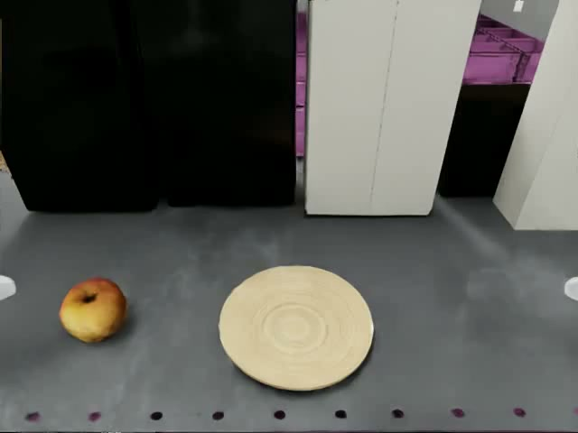
"Pick up the apple from the shelf and place it onto the plate on the same shelf next to it."
Trong dự án: kịch bản 1 và 3 dùng camera ego_view như trên; kịch bản 2 (real2sim) dùng camera rs_view với cùng 31 khớp.
Dữ liệu đầu ra
Mỗi lần gọi, model trả về một chuỗi 40 bước cho tương lai gần, mỗi bước 35 giá trị. Robot thực hiện một bước mỗi tick 20 ms, nên một chuỗi đủ cho 0,8 s chuyển động trước khi cần chuỗi mới.
20 ms mỗi bước = 0,8 s chuyển động
31 góc khớp + 4 lệnh cho chân
gọi lại khi chuỗi sắp hết
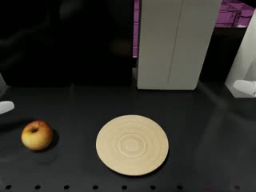
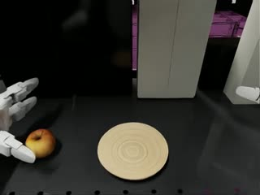
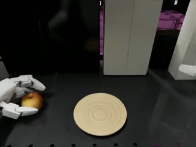
Đây là chuỗi action ghi sẵn trong dữ liệu demo, cùng dạng với chuỗi model trả về. Khi kiểm chứng open-loop, chuỗi model dự đoán cho cùng thời điểm lệch so với chuỗi này nhỏ hơn biên độ chuyển động 10–70 lần.
31 giá trị khớp là góc mục tiêu, không phải độ thay đổi so với bước trước. Trước khi dùng, client vẫn kẹp theo giới hạn khớp và giới hạn tốc độ mỗi tick (II.02, card 7).
Model không điều khiển trực tiếp 12 khớp chân. Nó chỉ đưa lệnh di chuyển và chiều cao hông (lệnh 0,72 m); AGILE dựa vào đó để giữ thăng bằng. Ba kịch bản của dự án đều đứng yên tại chỗ.
Trong dự án: kịch bản 1 và 3 dùng đúng chuỗi 40 bước ở 50 Hz như trên. Kịch bản 2 cố định hông nên không có lệnh cho chân: chuỗi 16 bước ở 20 Hz (cũng 0,8 s), mỗi bước 31 giá trị, mỗi lần gọi thực thi 8 bước.
Kiến trúc mô hình
Phần hiểu (bài báo gọi là System 2) là một mô hình thị giác–ngôn ngữ, chạy chậm, khoảng 10 lần mỗi giây. Phần hành động (System 1, trong video gọi là "action expert") nhận kết quả của phần hiểu cùng góc khớp hiện tại của robot, và chạy nhanh hơn nhiều. Bấm vào từng khối trong sơ đồ để xem nó làm gì.
Trong dự án: GR00T N1.7 giữ nguyên cấu trúc hai phần này; phần hiểu được thay bằng model mới hơn (card 7). Đầu vào là ảnh camera đầu G1 và 31 góc khớp thân trên. Ba khối MLP (state encoder, action encoder, action decoder) là riêng cho từng loại robot: đây là phần phải học khi đưa G1 vào model.
Chi tiết kỹ thuật · bài báo
- Phần hiểu: Eagle-2, gồm bộ mã hoá ảnh SigLIP-2 và mô hình ngôn ngữ SmolLM2. Ảnh 224×224 được nén còn 64 token (pixel shuffle).
- Đặc trưng lấy ở lớp 12 của mô hình ngôn ngữ thay vì lớp cuối: bài báo ghi nhận vừa nhanh hơn vừa thành công cao hơn.
- Phần hành động: Diffusion Transformer (DiT), xen kẽ cross-attention (nhìn token của phần hiểu) và self-attention (giữa token trạng thái và token action).
- Trạng thái và action đi qua bộ mã hoá/giải mã MLP riêng cho từng loại robot (embodiment).
Kết quả công bố
Bài báo so GR00T N1 với Diffusion Policy, một model chỉ học từ dữ liệu của chính tác vụ, không học trước. GR00T N1 tốt hơn ở mọi cấu hình, cách biệt lớn nhất khi ít dữ liệu.
Trong dự án: đây là lý do vài trăm demo đủ để fine-tune một tác vụ mới cho G1, và dữ liệu real2sim, dữ liệu sinh thêm là đủ dùng.
Bảng chi tiết theo benchmark mô phỏng · bảng 4 bài báo
| Benchmark | Diffusion Policy 30 / 100 / 300 demo | GR00T-N1-2B 30 / 100 / 300 demo |
|---|---|---|
| RoboCasa (24 tác vụ) | 14,7 / 25,6 / 43,2 | 17,4 / 32,1 / 49,6 |
| DexMimicGen (9 tác vụ) | 23,7 / 46,9 / 68,4 | 29,6 / 58,5 / 74,2 |
| GR-1 Tabletop (24 tác vụ) | 21,3 / 32,7 / 40,4 | 43,2 / 50,0 / 49,3 |
Tỉ lệ thành công trung bình (%). GR00T N1 dẫn ở mọi ô; riêng GR-1 Tabletop gần như không tăng thêm từ 100 lên 300 demo.
Đối chiếu phiên bản
Các số liệu ở card 6 là của N1 trên robot Fourier GR-1. Mọi thí nghiệm của dự án dùng N1.7 trên Unitree G1.
| Khía cạnh | GR00T N1 (bài báo) | GR00T N1.7 (dự án) |
|---|---|---|
| Quy mô | ~2,2 tỷ tham số | ~3 tỷ tham số |
| Phần hiểu (System 2) | NVIDIA Eagle-2 | Cosmos-Reason2-2B (kiến trúc Qwen3-VL), ảnh theo tỉ lệ gốc |
| Phần hành động (System 1) | DiT + flow matching | Giữ nguyên |
| Dùng cho nhiều robot | MLP riêng cho từng robot | Giữ nguyên; trạng thái được đệm tới độ dài cố định |
Checkpoint thực nghiệm
Ba checkpoint dùng trong ba kịch bản đều xuất phát từ GR00T N1.7-3B; điểm khác nhau nằm ở ai fine-tune và fine-tune bằng dữ liệu gì.
| Checkpoint | Tác vụ | Nguồn | Dữ liệu fine-tune | Thành công |
|---|---|---|---|---|
Kịch bản 1GN1x-Tuned-Arena-G1-Static-PickNPlace | Táo → đĩa | NVIDIA, dùng lại | 208 demo teleop trong mô phỏng | 92 % Arena gốc 56 % Galileo dựng lại 0 % khung cảnh tự dựng |
Kịch bản 2g1_fruits_n17 | Chọn đúng 1 trong 4 loại quả | Dự án fine-tune | 790 episode real2sim từ dữ liệu G1 thật | 66 % (33/50) |
Kịch bản 3hammer_mix200_n17 | Búa → thùng | Dự án fine-tune | 200 episode: teleop + sinh thêm | 66 % (66/100) |
Kịch bản 3hammer_mix400_n17 | Búa → thùng | Dự án fine-tune | 400 episode: mix200 + 200 demo teleop mới | 63 % (63/100); 73 % khi nới ngưỡng đứng yên |
Giấy phép: N1.7 theo NVIDIA Open Model Agreement; checkpoint Arena ghi "non-commercial use".
Kết luận nghiên cứu
Những gì dự án rút ra sau khi dùng GR00T N1.7 trên cả ba kịch bản.
- Vài trăm demo là đủ: bài búa từ 0 % lên 66–73 % với 200–400 episode (mục III.03).
- Fine-tune ~1 giờ trên một H100, chạy được trên một GPU.
- Hiểu câu lệnh tự nhiên: model 4 loại quả chọn đúng quả theo lệnh, không lần nào gắp nhầm (mục III.02).
- Một model điều khiển cùng lúc tay, bàn tay và eo.
- Phụ thuộc khung cảnh: bài táo từ 92 % xuống 56 % khi lệch ánh sáng, 0 % khi lệch cả khung cảnh (mục III.01).
- Không dùng lại được cho tác vụ khác: checkpoint táo đạt 0 % trên bài 4 loại quả.
- Mỗi lần gọi ~1,05–1,3 s qua mạng (model tính ~100 ms), lâu hơn một chuỗi chuyển động 0,8 s (mục I.02).
- Checkpoint Arena của NVIDIA ghi "non-commercial use".
GR00T N1 と本プロジェクトで使用する N1.7。
GR00T N1 はヒューマノイドロボット向けのオープンな VLA モデルで、理解を担う視覚–言語モデルと、行動を担う Diffusion Transformer で構成されます。本プロジェクトでは後継版の GR00T N1.7-3B を使用します。本節では、モデルが何をするか、何で構成されるか、効果はあるか、プロジェクトでどう適用したかを順に説明します。
用語集
動作の仕組み
以下の動画は、GR00T のような Vision-Language-Action モデルがカメラ画像と指示文をどのように動作に変換するかを示します。右側の各ステップをクリックすると、動画の該当箇所に移動します。各ステップには本プロジェクトでの適用方法を記載しています。
入力データ
呼び出しごとに、モデルは現在の時点のみの 3 種類のデータを受け取ります：カメラ画像 1 枚、上半身の関節角、指示文です。過去のフレームの履歴は受け取らず、12 の脚関節も見ません（脚は AGILE が担当）。
640×480、現在のフレーム
腕、指、腰
エピソード中は不変
"Pick up the apple from the shelf and place it onto the plate on the same shelf next to it."
本プロジェクトでは：シナリオ 1 と 3 は上記の ego_view カメラを、シナリオ 2（real2sim）は同じ 31 関節で rs_view カメラを使用します。
出力データ
呼び出しごとに、モデルは近い将来に向けた 40 ステップの列を返し、各ステップは 35 個の値を持ちます。ロボットは 20 ms のティックごとに 1 ステップを実行するため、1 つの列で次の列が必要になるまでの 0.8 s 分の動作をまかなえます。
1 ステップ 20 ms = 0.8 s の動作
関節角 31 + 脚への指令 4
列が尽きる前に再度呼び出し
これはデモデータに記録されたアクション列で、モデルが返す列と同じ形式です。オープンループ検証では、同じ時点に対してモデルが予測した列とこの列のずれは、動作の振幅より 10–70 倍小さくなりました。
31 個の関節値は目標角であり、前ステップからの変化量ではありません。使用前に、クライアントは関節の可動範囲とティックごとの速度上限でクランプします（II.02、カード 7）。
モデルは 12 の脚関節を直接制御しません。移動指令と腰の高さ（指令値 0.72 m）のみを出力し、AGILE がそれを基にバランスを保ちます。本プロジェクトの 3 シナリオはいずれもその場で静止したままです。
本プロジェクトでは：シナリオ 1 と 3 は上記のとおり 50 Hz の 40 ステップ列を使用します。シナリオ 2 は腰を固定するため脚への指令がなく、20 Hz の 16 ステップ列（同じく 0.8 s）、各ステップ 31 個の値で、呼び出しごとに 8 ステップを実行します。
モデルアーキテクチャ
理解部（論文では System 2）は視覚–言語モデルで、毎秒約 10 回と低速で動作します。行動部（System 1、動画では「action expert」）は理解部の出力とロボットの現在の関節角を受け取り、はるかに高速に動作します。図の各ブロックをクリックすると、その役割が表示されます。
本プロジェクトでは：GR00T N1.7 はこの二部構成を維持し、理解部をより新しいモデルに置き換えています（カード 7）。入力は G1 頭部カメラの画像と上半身 31 関節の角度です。3 つの MLP ブロック（state encoder、action encoder、action decoder）はロボットの種類ごとに専用で、G1 をモデルに導入する際に学習が必要な部分です。
技術的詳細 · 論文
- 理解部：Eagle-2。画像エンコーダ SigLIP-2 と言語モデル SmolLM2 で構成されます。224×224 の画像を 64 トークンに圧縮します（pixel shuffle）。
- 特徴量は言語モデルの最終層ではなく第 12 層から取得します。論文では、この方が高速かつ成功率も高いと報告されています。
- 行動部：Diffusion Transformer (DiT)。cross-attention（理解部のトークンを参照）と self-attention（状態トークンとアクショントークンの間）を交互に配置します。
- 状態とアクションは、ロボットの種類（embodiment）ごとに専用の MLP エンコーダ/デコーダを通ります。
公表された結果
論文では、GR00T N1 を、事前学習なしでそのタスク自身のデータのみから学習するモデル Diffusion Policy と比較しています。GR00T N1 はすべての構成で上回り、データが少ないときに差が最も大きくなります。
本プロジェクトでは：これが、数百件のデモで G1 の新しいタスクをファインチューニングでき、real2sim データや生成データで十分に足りる理由です。
シミュレーションベンチマーク別の詳細表 · 論文の表 4
| ベンチマーク | Diffusion Policy 30 / 100 / 300 デモ | GR00T-N1-2B 30 / 100 / 300 デモ |
|---|---|---|
| RoboCasa（24 タスク） | 14.7 / 25.6 / 43.2 | 17.4 / 32.1 / 49.6 |
| DexMimicGen（9 タスク） | 23.7 / 46.9 / 68.4 | 29.6 / 58.5 / 74.2 |
| GR-1 Tabletop（24 タスク） | 21.3 / 32.7 / 40.4 | 43.2 / 50.0 / 49.3 |
平均成功率（%）。GR00T N1 はすべてのセルで上回っています。GR-1 Tabletop のみ、100 から 300 デモに増やしてもほとんど向上しません。
バージョン比較
カード 6 の数値は、Fourier GR-1 ロボット上の N1 のものです。本プロジェクトの実験はすべて Unitree G1 上の N1.7 を使用しています。
| 項目 | GR00T N1（論文） | GR00T N1.7（本プロジェクト） |
|---|---|---|
| 規模 | パラメータ約 22 億 | パラメータ約 30 億 |
| 理解部（System 2） | NVIDIA Eagle-2 | Cosmos-Reason2-2B（Qwen3-VL アーキテクチャ）、画像は元のアスペクト比のまま |
| 行動部（System 1） | DiT + flow matching | 変更なし |
| 複数ロボットへの対応 | ロボットごとに専用の MLP | 変更なし。状態は固定長までパディング |
実験で使用したチェックポイント
3 シナリオで使用した 3 つのチェックポイントは、いずれも GR00T N1.7-3B を起点としています。違いは、誰がどのデータでファインチューニングしたかです。
| Checkpoint | タスク | 提供元 | ファインチューニングデータ | 成功率 |
|---|---|---|---|---|
シナリオ 1GN1x-Tuned-Arena-G1-Static-PickNPlace | リンゴ → 皿 | NVIDIA、そのまま再利用 | シミュレーション内のテレオペデモ 208 件 | 92 % 元の Arena 56 % 再構築した Galileo 0 % 自作シーン |
シナリオ 2g1_fruits_n17 | 4 種類の果物から正しい 1 つを選ぶ | 本プロジェクトでファインチューニング | G1 実機データからの real2sim エピソード 790 件 | 66 % (33/50) |
シナリオ 3hammer_mix200_n17 | ハンマー → 箱 | 本プロジェクトでファインチューニング | 200 エピソード：テレオペ + 生成 | 66 % (66/100) |
シナリオ 3hammer_mix400_n17 | ハンマー → 箱 | 本プロジェクトでファインチューニング | 400 エピソード：mix200 + 新規テレオペデモ 200 件 | 63 % (63/100)、静止しきい値を緩和すると 73 % |
ライセンス：N1.7 は NVIDIA Open Model Agreement に準拠し、Arena チェックポイントには "non-commercial use" と記載されています。
調査の結論
3 シナリオすべてで GR00T N1.7 を使用した結果、本プロジェクトが得た知見です。
- 数百件のデモで十分です：ハンマータスクは 200–400 エピソードで 0 % から 66–73 % に向上しました（III.03 節）。
- ファインチューニングは H100 1 枚で約 1 時間、GPU 1 枚で実行できます。
- 自然な指示文を理解します：4 種類の果物モデルは指示どおりの果物を選び、誤った果物をつかんだことは一度もありません（III.02 節）。
- 1 つのモデルで腕、手、腰を同時に制御します。
- シーンに依存します：リンゴタスクは照明が異なると 92 % から 56 % に、シーン全体が異なると 0 % に低下しました（III.01 節）。
- 他のタスクに再利用できません：リンゴのチェックポイントは 4 種類の果物タスクで 0 % でした。
- 1 回の呼び出しはネットワーク経由で約 1.05–1.3 s（モデルの計算は約 100 ms）かかり、0.8 s の動作列より長くなります（I.02 節）。
- NVIDIA の Arena チェックポイントには "non-commercial use" と記載されています。
GR00T N1 and the N1.7 version used in the project.
GR00T N1 is an open VLA model for humanoid robots, made of a vision–language model to understand and a Diffusion Transformer to act. The project uses its successor, GR00T N1.7-3B. This section covers, in order: what the model does, what it is made of, whether it is effective, and how the project applies it.
Quick glossary
How it works
The video below illustrates how a Vision-Language-Action model such as GR00T turns a camera image and an instruction into motion. Click a step on the right to jump the video to the matching part; each step notes how the project applies it.
Input data
On each call, the model receives three kinds of data from the current moment only: one camera image, the upper-body joint angles and the instruction. The model receives no history of previous frames, and does not see the 12 leg joints (the legs are handled by AGILE).
640×480, current frame
arms, fingers, waist
unchanged for the whole episode
"Pick up the apple from the shelf and place it onto the plate on the same shelf next to it."
In the project: scenarios 1 and 3 use the ego_view camera as above; scenario 2 (real2sim) uses the rs_view camera with the same 31 joints.
Output data
On each call, the model returns a chunk of 40 steps for the near future, each step with 35 values. The robot executes one step per 20 ms tick, so one chunk covers 0.8 s of motion before a new chunk is needed.
20 ms per step = 0.8 s of motion
31 joint angles + 4 leg commands
called again when the chunk is nearly used up
This is an action chunk recorded in the demo data, in the same form as the chunk the model returns. In open-loop checks, the deviation of the model's predicted chunk for the same moment from this chunk is 10–70 times smaller than the motion amplitude.
The 31 joint values are target angles, not changes from the previous step. Before use, the client still clamps them to the joint limits and the per-tick velocity limits (II.02, card 7).
The model does not control the 12 leg joints directly. It only outputs locomotion commands and the hip height (command 0.72 m); AGILE uses them to keep balance. All three project scenarios stand still in place.
In the project: scenarios 1 and 3 use exactly the 40-step chunk at 50 Hz as above. Scenario 2 fixes the hip, so there are no leg commands: a 16-step chunk at 20 Hz (also 0.8 s), 31 values per step, 8 steps executed per call.
Model architecture
The understanding part (called System 2 in the paper) is a vision–language model that runs slowly, about 10 times per second. The acting part (System 1, called the "action expert" in the video) takes the output of the understanding part together with the robot's current joint angles, and runs much faster. Click each block in the diagram to see what it does.
In the project: GR00T N1.7 keeps this two-part structure; the understanding part is replaced by a newer model (card 7). The inputs are the G1 head camera image and 31 upper-body joint angles. The three MLP blocks (state encoder, action encoder, action decoder) are specific to each robot type: this is the part that has to be learned when bringing G1 into the model.
Technical details · paper
- Understanding part: Eagle-2, consisting of the SigLIP-2 image encoder and the SmolLM2 language model. A 224×224 image is compressed to 64 tokens (pixel shuffle).
- Features are taken from layer 12 of the language model instead of the last layer: the paper reports this is both faster and more successful.
- Acting part: Diffusion Transformer (DiT), interleaving cross-attention (attending to the understanding part's tokens) and self-attention (between state tokens and action tokens).
- States and actions pass through MLP encoders/decoders specific to each robot type (embodiment).
Published results
The paper compares GR00T N1 with Diffusion Policy, a model that learns only from the task's own data, without pre-training. GR00T N1 is better in every configuration, with the largest gap when data is scarce.
In the project: this is why a few hundred demos are enough to fine-tune a new task for G1, and why real2sim data and generated data are good enough.
Detailed table per simulation benchmark · table 4 of the paper
| Benchmark | Diffusion Policy 30 / 100 / 300 demos | GR00T-N1-2B 30 / 100 / 300 demos |
|---|---|---|
| RoboCasa (24 tasks) | 14.7 / 25.6 / 43.2 | 17.4 / 32.1 / 49.6 |
| DexMimicGen (9 tasks) | 23.7 / 46.9 / 68.4 | 29.6 / 58.5 / 74.2 |
| GR-1 Tabletop (24 tasks) | 21.3 / 32.7 / 40.4 | 43.2 / 50.0 / 49.3 |
Average success rate (%). GR00T N1 leads in every cell; only GR-1 Tabletop barely improves from 100 to 300 demos.
Version comparison
The figures in card 6 are for N1 on the Fourier GR-1 robot. All project experiments use N1.7 on the Unitree G1.
| Aspect | GR00T N1 (paper) | GR00T N1.7 (project) |
|---|---|---|
| Scale | ~2.2B parameters | ~3B parameters |
| Understanding part (System 2) | NVIDIA Eagle-2 | Cosmos-Reason2-2B (Qwen3-VL architecture), images at native aspect ratio |
| Acting part (System 1) | DiT + flow matching | Unchanged |
| Multi-robot use | Separate MLP per robot | Unchanged; the state is padded to a fixed length |
Experimental checkpoints
The three checkpoints used in the three scenarios all start from GR00T N1.7-3B; they differ in who fine-tuned them and with what data.
| Checkpoint | Task | Source | Fine-tune data | Success |
|---|---|---|---|---|
Scenario 1GN1x-Tuned-Arena-G1-Static-PickNPlace | Apple → plate | NVIDIA, reused | 208 teleop demos in simulation | 92 % original Arena 56 % reconstructed Galileo 0 % self-built scene |
Scenario 2g1_fruits_n17 | Pick the correct 1 of 4 fruit types | Fine-tuned by the project | 790 real2sim episodes from real G1 data | 66 % (33/50) |
Scenario 3hammer_mix200_n17 | Hammer → bin | Fine-tuned by the project | 200 episodes: teleop + generated | 66 % (66/100) |
Scenario 3hammer_mix400_n17 | Hammer → bin | Fine-tuned by the project | 400 episodes: mix200 + 200 new teleop demos | 63 % (63/100); 73 % with a relaxed at-rest threshold |
License: N1.7 is under the NVIDIA Open Model Agreement; the Arena checkpoint states "non-commercial use".
Research conclusions
What the project learned after using GR00T N1.7 across all three scenarios.
- A few hundred demos are enough: the hammer task went from 0 % to 66–73 % with 200–400 episodes (section III.03).
- Fine-tuning takes ~1 hour on one H100, and runs on a single GPU.
- Understands natural instructions: the 4-fruit model picks the right fruit as instructed, never grabbing the wrong one (section III.02).
- One model controls the arms, hands and waist at the same time.
- Scene-dependent: the apple task drops from 92 % to 56 % when the lighting differs, and to 0 % when the whole scene differs (section III.01).
- Not reusable for other tasks: the apple checkpoint scores 0 % on the 4-fruit task.
- Each call takes ~1.05–1.3 s over the network (the model computes for ~100 ms), longer than a 0.8 s motion chunk (section I.02).
- NVIDIA's Arena checkpoint states "non-commercial use".
Tái hiện từng bước của luồng GR00T ↔ G1 bằng notebook nghiên cứu.
Để không phụ thuộc vào khung có sẵn của NVIDIA, dự án tự xây lại toàn bộ luồng từ ảnh camera tới lệnh khớp. Mỗi bước được nghiên cứu trong một notebook riêng — viết tay, quan sát dữ liệu, đối chiếu với tham chiếu — rồi mới đóng gói thành mã nguồn có kiểm thử. Nhãn nbXX trong ô XỬ LÝ của mỗi card là notebook (trong codes/standalone_g1_gr00t/notebooks/) nơi bước đó được viết và kiểm chứng. Gói bàn giao có 12 notebook: 7 notebook dựng pipeline được trình bày ở mục này, 5 notebook còn lại dùng pipeline đó để kiểm chứng và đánh giá các kịch bản ở phần III. Card 10 liệt kê đủ 12 notebook và vị trí của từng notebook trong báo cáo.
Luồng tổng thể
Trước khi chạy, client dựng môi trường mô phỏng và kết nối tới server một lần. Sau đó mỗi vòng điều khiển đi qua hai máy. Client trên máy trạm chạy mô phỏng và mọi bước xử lý dữ liệu: đọc cảm biến, đóng gói, giải mã, kiểm tra an toàn, đưa lệnh xuống khớp. Policy server trên GPU H100 chỉ chạy model. Client chạy mỗi 20 ms, nhưng chỉ gọi server khi cần chuỗi mới, tức khoảng 40 tick một lần. Nhãn card cho biết bước đó được trình bày ở card nào.
Server rảnh. Client chỉ gọi lại khi chuỗi sắp hết; với cách gọi trước (card 7), quan sát được gửi sớm để chuỗi mới về kịp, robot không phải dừng.
Mỗi lần gọi, phần lớn thời gian nằm ở đường truyền: model tính ~100 ms trong khi cả vòng gọi mất ~1,05–1,3 s.
Demo → dataset LeRobot → fine-tune trên H100 → checkpoint nạp vào policy server.
Reset rồi chạy episode tiếp; gom kết quả N episode thành tỉ lệ thành công (card 9).
Khởi tạo môi trường
- Robot G1 (USD, 43 khớp)
- Khung cảnh, táo, đĩa
- Policy AGILE (ONNX)
- Dựng mô phỏng: nền, ánh sáng → robot → camera đầu → vật thể → ma sát ngón tay
- Ghi trạng thái ban đầu, chạy 10 bước cho ổn định
- Nạp AGILE, reset trạng thái LSTM
- Robot đứng ở tư thế mặc định
- Bước vật lý 5 ms, tick điều khiển 20 ms
Tạo kết nối
- Địa chỉ policy server (qua SSH tunnel)
- Checkpoint đã nạp trên H100
- Mở kết nối ZeroMQ, ping server
- Đọc hợp đồng dữ liệu từ server
- So với cấu hình của client trước khi chạy
- Kết nối sẵn sàng
- Danh sách key, số chiều từng nhóm, độ dài chuỗi
Lấy quan sát
- Trạng thái mô phỏng sau tick vừa chạy
- Render camera đầu
- Đọc 43 góc và vận tốc khớp, IMU thân
- Sắp lại khớp theo tên giữa 4 hệ thứ tự
- Ảnh 640×480
- 43 góc khớp + IMU (cho AGILE)
- 31 góc khớp thân trên (cho GR00T)
Gửi quan sát
- Ảnh 640×480
- 31 góc khớp thân trên
- Câu lệnh
- Đóng gói theo hợp đồng, kiểm tra số chiều
- Gửi get_action qua ZeroMQ (msgpack)
- Server chạy GR00T N1.7
- Yêu cầu 0,92 MB lên server
- Server sinh chuỗi 40 bước
Nhận chuỗi action
- Trả lời của server: 7 key, 6,8 KB
- Giải mã msgpack
- Tách 31 góc khớp (40×31), di chuyển (40×3), chiều cao (40×1)
- Xếp về thứ tự khớp của client theo tên
- Chuỗi 40 bước × 35 giá trị trong client
Xử lý chuỗi action
- Chuỗi 40 × 35 vừa nhận
- Chặn NaN/Inf, kẹp theo giới hạn khớp, di chuyển, chiều cao
- Lập lịch: mỗi tick lấy một bước, gọi trước khi sắp hết
- Giới hạn thay đổi mỗi tick
- Lệnh an toàn cho tick hiện tại: 31 góc khớp + 4 lệnh cho chân
Chạy robot
- 31 góc khớp mục tiêu
- Lệnh di chuyển + chiều cao
- Quan sát hiện tại (cho AGILE)
- AGILE tính 12 góc khớp chân từ vector 80 số
- Ghi 43 góc mục tiêu xuống mô phỏng
- Chạy 4 bước vật lý 5 ms
- Robot chuyển động một tick (20 ms)
- Trạng thái mới cho tick sau
Chạy vòng kín
- Checkpoint, khung cảnh, câu lệnh
- Các bước ở card 4–8
- Mỗi tick: lấy quan sát → xử lý → chạy robot
- ~40 tick một lần: gửi quan sát, nhận chuỗi mới
- Kết thúc khi thành công, ngã hoặc hết giờ; reset rồi chạy episode tiếp
- Kết quả từng episode
- Log, video, thống kê
Danh mục 12 notebook và vị trí trong báo cáo
nb01, nb02 và nb04–nb08 dựng và kiểm chứng từng khối của pipeline ở card 2–9; nb03 kiểm chứng model với dữ liệu thật mà chưa cần mô phỏng; nb09–nb12 áp dụng pipeline cho kịch bản 2 và 3. Mỗi kịch bản có một notebook dựng khung cảnh và chạy thử một episode, kèm một notebook chạy N episode để tính tỉ lệ thành công.
| Notebook | Nội dung | Trình bày ở | Môi trường |
|---|---|---|---|
| Khối của pipeline · mục II.02 | |||
nb01_server_wire | Kết nối ZeroMQ + msgpack, đọc hợp đồng dữ liệu, đo độ trễ, xử lý mất kết nối | Card 3, 5, 6 | .venv · cần server |
nb02_joints_obs_action | 4 hệ thứ tự khớp, đóng gói quan sát, giải mã chuỗi action, lập lịch chuỗi | Card 4–7 | .venv · cần server |
nb04_agile_onnx | Policy chân AGILE: vector quan sát 80 chiều, đối chiếu từng bit với tham chiếu | Card 2, 8 | .venv |
nb05_backend_anatomy | Dựng tay backend Isaac Sim: robot, camera đầu, táo/đĩa, ma sát, đọc và ghi khớp | Card 2, 4, 8 | Isaac Sim |
nb08_runner_policy_safety | Lớp an toàn (chặn NaN, kẹp giới hạn, giới hạn tốc độ), runner, ghi log | Card 7, 9 | Isaac Sim |
| Vòng kín · mục II.02 card 9 và kịch bản 1 | |||
nb06_full_pipeline | Ghép đủ các khối thành vòng kín trên khung cảnh tự dựng: đứng vững, phát lại demo, chạy model | Card 9 · III.01 | Isaac Sim · cần server |
nb07_full_pipeline_loop | Dựng lại khung cảnh Galileo, chạy 50 episode: 0/50 → 28/50 | Card 9 · III.01 · IV.04 | Isaac Sim · cần server |
| Kiểm chứng open-loop · kịch bản 1 | |||
nb03_open_loop_dataset | Gửi ảnh và trạng thái thật từ dataset lên server, so chuỗi trả về với action ghi sẵn | III.01 bước 3 | .venv · cần server |
| Áp dụng cho kịch bản 2 và 3 · phần III | |||
nb09_multi_object_task_pipeline | Khung cảnh real2sim 4 loại quả, chọn câu lệnh, chạy một episode | III.02 | Isaac Sim · cần server |
nb10_eval_multi_object | Khung cảnh nb09 chạy N episode: 66 % | III.02 · IV.04 | Isaac Sim · cần server |
nb11_hammer_to_bin | Khung cảnh búa → thùng của Arena dựng lại trong Isaac Sim, chạy một episode | III.03 | Isaac Sim · cần server |
nb12_eval_hammer_to_bin | Khung cảnh nb11 chạy N episode, phân loại thất bại: 66 % (mix200), 73 % (mix400) | III.03 · IV.04 | Isaac Sim · cần server |
g1gr00t; các notebook khối (nb01, nb04, nb05, nb08) có cell đối chiếu phần viết tay với package. Cách chạy lại notebook: mục IV.04.調査用ノートブックで GR00T ↔ G1 フローの各ステップを再現。
NVIDIA の既存フレームワークに依存しないよう、本プロジェクトではカメラ画像から関節指令までのフロー全体を独自に再構築しました。各ステップは個別のノートブックで調査し（手作業で実装、データを観察、リファレンスと照合）、その後テスト付きのソースコードとしてパッケージ化しています。各カードの「処理」欄にある nbXX は、そのステップを実装・検証したノートブック（codes/standalone_g1_gr00t/notebooks/）を示します。成果物には 12 本のノートブックがあり、パイプラインを構築する 7 本を本節で、そのパイプラインを使ってシナリオを検証・評価する残り 5 本を第 III 部で扱います。12 本すべての一覧と報告書内の位置はカード 10 にまとめています。
全体フロー
実行前に、クライアントはシミュレーション環境を構築し、サーバーに一度だけ接続します。その後、各制御ループは 2 台のマシンを経由します。ワークステーション上のクライアントはシミュレーションとすべてのデータ処理ステップ（センサー読み取り、パッケージ化、デコード、安全チェック、関節への指令送出）を担います。H100 GPU 上のポリシーサーバーはモデルの実行のみを担います。クライアントは 20 ms ごとに動作するが、サーバーを呼び出すのは新しいチャンクが必要なときのみ、つまり約 40 tick に 1 回です。カードラベルは、そのステップを説明しているカードを示します。
サーバーは空き状態です。クライアントはチャンクの残りが少なくなったときのみ再度呼び出します。事前呼び出し（カード 7）では観測を早めに送り、新しいチャンクが間に合うため、ロボットは停止せずに済みます。
各呼び出しでは時間の大部分が通信経路で費やされます。モデルの計算は約 100 ms ですが、呼び出し 1 回全体では約 1.05–1.3 s かかります。
デモ → LeRobot dataset → H100 でファインチューニング → checkpoint をポリシーサーバーに読み込み。
リセットして次のエピソードを実行します。N エピソードの結果を集計して成功率とします（カード 9）。
環境の初期化
- G1 ロボット（USD、43 関節）
- シーン、リンゴ、皿
- AGILE ポリシー（ONNX）
- シミュレーション構築：地面、照明 → ロボット → 頭部カメラ → 物体 → 指の摩擦
- 初期状態を記録し、安定させるため 10 ステップ実行
- AGILE を読み込み、LSTM 状態をリセット
- デフォルト姿勢で立つロボット
- 物理ステップ 5 ms、制御 tick 20 ms
接続の確立
- ポリシーサーバーのアドレス（SSH tunnel 経由）
- H100 に読み込み済みの checkpoint
- ZeroMQ 接続を開き、サーバーに ping
- サーバーからデータ契約を読み取る
- 実行前にクライアント設定と照合
- 接続準備完了
- key 一覧、各グループの次元数、チャンク長
観測の取得
- 直前の tick 実行後のシミュレーション状態
- 頭部カメラをレンダリング
- 関節角と関節速度 43、胴体 IMU を読み取る
- 4 つの順序体系の間で関節名に基づき並べ替え
- 画像 640×480
- 関節角 43 + IMU（AGILE 用）
- 上半身の関節角 31（GR00T 用）
観測の送信
- 画像 640×480
- 上半身の関節角 31
- 指示文
- 契約に従ってパッケージ化し、次元数をチェック
- ZeroMQ（msgpack）で get_action を送信
- サーバーが GR00T N1.7 を実行
- サーバーへの 0.92 MB のリクエスト
- サーバーが 40 ステップのチャンクを生成
action チャンクの受信
- サーバーの応答：7 key、6.8 KB
- msgpack をデコード
- 関節角 31（40×31）、移動（40×3）、高さ（40×1）に分割
- 関節名に基づきクライアントの関節順序に並べ替え
- クライアント内の 40 ステップ × 35 値のチャンク
action チャンクの処理
- 受信したばかりの 40 × 35 のチャンク
- NaN/Inf を遮断、関節・移動・高さの制限内にクランプ
- スケジューリング：tick ごとに 1 ステップを取り出し、残りが少なくなる前に事前呼び出し
- tick ごとの変化量を制限
- 現在の tick 用の安全な指令：関節角 31 + 脚への指令 4
ロボットの実行
- 目標関節角 31
- 移動 + 高さの指令
- 現在の観測（AGILE 用）
- AGILE が 80 値のベクトルから脚の関節角 12 を計算
- 目標角 43 をシミュレーションに書き込む
- 5 ms の物理ステップを 4 回実行
- ロボットが 1 tick（20 ms）分動作
- 次の tick 用の新しい状態
閉ループの実行
- checkpoint、シーン、指示文
- カード 4–8 の各ステップ
- 各 tick：観測の取得 → 処理 → ロボットの実行
- 約 40 tick に 1 回：観測を送信し、新しいチャンクを受信
- 成功、転倒、タイムアウトで終了。リセットして次のエピソードを実行
- エピソードごとの結果
- ログ、動画、統計
ノートブック 12 本と報告書内の位置
nb01、nb02、nb04–nb08 はカード 2–9 でパイプラインの各ブロックを構築・検証します。nb03 はシミュレーションを使わずに実データでモデルを確認します。nb09–nb12 はパイプラインをシナリオ 2・3 に適用します。各シナリオには、シーンを構築して 1 エピソードを実行するノートブックと、N エピソードを実行して成功率を算出するノートブックが 1 本ずつあります。
| ノートブック | 内容 | 掲載箇所 | 実行環境 |
|---|---|---|---|
| パイプラインの構成要素 · II.02 節 | |||
nb01_server_wire | ZeroMQ + msgpack 接続、データ契約の読み取り、遅延測定、接続断の処理 | カード 3、5、6 | .venv · サーバー必要 |
nb02_joints_obs_action | 4 種類の関節順序、観測のパッキング、action チャンクのデコード、チャンクのスケジューリング | カード 4–7 | .venv · サーバー必要 |
nb04_agile_onnx | AGILE 脚ポリシー：80 次元観測ベクトル、リファレンスとのビット単位の一致確認 | カード 2、8 | .venv |
nb05_backend_anatomy | Isaac Sim バックエンドを手作業で構築：ロボット、頭部カメラ、リンゴ/皿、摩擦、関節の読み書き | カード 2、4、8 | Isaac Sim |
nb08_runner_policy_safety | 安全レイヤー（NaN 遮断、制限内へのクランプ、変化量制限）、runner、ログ記録 | カード 7、9 | Isaac Sim |
| 閉ループ · II.02 節カード 9 とシナリオ 1 | |||
nb06_full_pipeline | 全ブロックを自作シーンの閉ループに統合：直立、デモ再生、モデル実行 | カード 9 · III.01 | Isaac Sim · サーバー必要 |
nb07_full_pipeline_loop | Galileo シーンを再構築し 50 エピソード実行：0/50 → 28/50 | カード 9 · III.01 · IV.04 | Isaac Sim · サーバー必要 |
| オープンループ検証 · シナリオ 1 | |||
nb03_open_loop_dataset | データセットの実画像と状態をサーバーに送り、返されたチャンクを記録済み action と比較 | III.01 ステップ 3 | .venv · サーバー必要 |
| シナリオ 2・3 への適用 · 第 III 部 | |||
nb09_multi_object_task_pipeline | 果物 4 種の real2sim シーン、指示文の選択、1 エピソード実行 | III.02 | Isaac Sim · サーバー必要 |
nb10_eval_multi_object | nb09 のシーンで N エピソード実行：66 % | III.02 · IV.04 | Isaac Sim · サーバー必要 |
nb11_hammer_to_bin | Arena のハンマー → 箱シーンを Isaac Sim で再構築、1 エピソード実行 | III.03 | Isaac Sim · サーバー必要 |
nb12_eval_hammer_to_bin | nb11 のシーンで N エピソード実行、失敗を分類：66 %（mix200）、73 %（mix400） | III.03 · IV.04 | Isaac Sim · サーバー必要 |
g1gr00t にまとめてあります。構成要素のノートブック（nb01、nb04、nb05、nb08）には、手書き実装と package を照合するセルがあります。ノートブックの再実行方法：IV.04 節。Reproducing each step of the GR00T ↔ G1 flow with research notebooks.
To avoid depending on NVIDIA's ready-made framework, the project rebuilt the entire flow itself, from camera image to joint command. Each step was studied in its own notebook — written by hand, inspecting the data, checking against a reference — before being packaged into tested source code. The nbXX tag in each card's PROCESSING box names the notebook (in codes/standalone_g1_gr00t/notebooks/) where that step was written and verified. The package contains 12 notebooks: the 7 that build the pipeline are covered in this section, and the other 5 use that pipeline to verify and evaluate the scenarios in Part III. Card 10 lists all 12 notebooks and where each one appears in the report.
Overall flow
Before running, the client builds the simulation environment and connects to the server once. After that, every control loop passes through two machines. The client on the workstation runs the simulation and every data-processing step: reading sensors, packaging, decoding, safety checks, sending commands to the joints. The policy server on an H100 GPU only runs the model. The client runs every 20 ms but calls the server only when it needs a new chunk, i.e. about once every 40 ticks. The card label shows which card presents that step.
The server is idle. The client only calls again when the chunk is about to run out; with prefetching (card 7), the observation is sent early so the new chunk arrives in time and the robot does not have to stop.
For each call, most of the time is spent in transport: the model computes for ~100 ms while the full call round trip takes ~1.05–1.3 s.
Demos → LeRobot dataset → fine-tune on H100 → checkpoint loaded into the policy server.
Reset, then run the next episode; results of N episodes are aggregated into a success rate (card 9).
Environment initialisation
- G1 robot (USD, 43 joints)
- Scene, apple, plate
- AGILE policy (ONNX)
- Build the simulation: ground, lighting → robot → head camera → objects → finger friction
- Record the initial state, run 10 steps to settle
- Load AGILE, reset the LSTM state
- Robot standing in the default pose
- 5 ms physics step, 20 ms control tick
Connection
- Policy server address (via SSH tunnel)
- Checkpoint loaded on the H100
- Open a ZeroMQ connection, ping the server
- Read the data contract from the server
- Compare with the client configuration before running
- Connection ready
- Key list, dimensions of each group, chunk length
Getting the observation
- Simulation state after the tick just run
- Render the head camera
- Read 43 joint angles and velocities, torso IMU
- Reorder joints by name across 4 ordering systems
- 640×480 image
- 43 joint angles + IMU (for AGILE)
- 31 upper-body joint angles (for GR00T)
Sending the observation
- 640×480 image
- 31 upper-body joint angles
- Instruction
- Package according to the contract, check dimensions
- Send get_action over ZeroMQ (msgpack)
- Server runs GR00T N1.7
- 0.92 MB request to the server
- Server generates a 40-step chunk
Receiving the action chunk
- Server response: 7 keys, 6.8 KB
- Decode msgpack
- Split 31 joint angles (40×31), locomotion (40×3), height (40×1)
- Reorder into the client joint order by name
- 40-step × 35-value chunk in the client
Processing the action chunk
- The 40 × 35 chunk just received
- Block NaN/Inf, clamp to joint, locomotion and height limits
- Scheduling: take one step per tick, call ahead before running out
- Limit the change per tick
- Safe command for the current tick: 31 joint angles + 4 leg commands
Running the robot
- 31 target joint angles
- Locomotion + height commands
- Current observation (for AGILE)
- AGILE computes 12 leg joint angles from an 80-value vector
- Write 43 target angles to the simulation
- Run 4 physics steps of 5 ms
- Robot moves for one tick (20 ms)
- New state for the next tick
Running the closed loop
- Checkpoint, scene, instruction
- The steps in cards 4–8
- Each tick: get observation → process → run robot
- Once every ~40 ticks: send observation, receive a new chunk
- Ends on success, fall or timeout; reset, then run the next episode
- Per-episode results
- Logs, videos, statistics
The 12 notebooks and where they appear in the report
nb01, nb02 and nb04–nb08 build and verify each block of the pipeline in cards 2–9; nb03 checks the model against real data without simulation; nb09–nb12 apply the pipeline to scenarios 2 and 3. Each of these scenarios has one notebook that builds the scene and runs a single episode, plus one notebook that runs N episodes to compute the success rate.
| Notebook | Content | Covered in | Environment |
|---|---|---|---|
| Pipeline building blocks · section II.02 | |||
nb01_server_wire | ZeroMQ + msgpack connection, reading the data contract, latency measurement, connection-loss handling | Cards 3, 5, 6 | .venv · needs server |
nb02_joints_obs_action | 4 joint orderings, observation packing, action-chunk decoding, chunk scheduling | Cards 4–7 | .venv · needs server |
nb04_agile_onnx | AGILE leg policy: 80-dim observation vector, bit-exact check against the reference | Cards 2, 8 | .venv |
nb05_backend_anatomy | Hand-built Isaac Sim backend: robot, head camera, apple/plate, friction, joint read/write | Cards 2, 4, 8 | Isaac Sim |
nb08_runner_policy_safety | Safety layer (NaN blocking, limit clamping, rate limiting), runner, logging | Cards 7, 9 | Isaac Sim |
| Closed loop · section II.02 card 9 and scenario 1 | |||
nb06_full_pipeline | All blocks joined into a closed loop in a self-built scene: standing, demo replay, running the model | Card 9 · III.01 | Isaac Sim · needs server |
nb07_full_pipeline_loop | Rebuilt Galileo scene, 50 episodes: 0/50 → 28/50 | Card 9 · III.01 · IV.04 | Isaac Sim · needs server |
| Open-loop verification · scenario 1 | |||
nb03_open_loop_dataset | Sends real images and states from the dataset to the server and compares the returned chunk with the recorded actions | III.01 step 3 | .venv · needs server |
| Applied to scenarios 2 and 3 · Part III | |||
nb09_multi_object_task_pipeline | Real2sim scene with 4 fruit types, instruction selection, one episode | III.02 | Isaac Sim · needs server |
nb10_eval_multi_object | nb09 scene run for N episodes: 66 % | III.02 · IV.04 | Isaac Sim · needs server |
nb11_hammer_to_bin | Arena hammer → bin scene rebuilt in Isaac Sim, one episode | III.03 | Isaac Sim · needs server |
nb12_eval_hammer_to_bin | nb11 scene run for N episodes with failure classification: 66 % (mix200), 73 % (mix400) | III.03 · IV.04 | Isaac Sim · needs server |
g1gr00t; the building-block notebooks (nb01, nb04, nb05, nb08) include cells that compare the hand-written code with the package. How to re-run the notebooks: section IV.04.Từ góc khớp tới chuyển động và lực.
GR00T chỉ xuất ra góc khớp mục tiêu. Biến các con số đó thành chuyển động thật cần hiểu động học (góc khớp ↔ vị trí tay, camera) và động lực học (mô-men, quán tính, tiếp xúc, thăng bằng). Phần này tổng hợp các kiến thức đó và nơi chúng xuất hiện trong dự án; mỗi khái niệm có một khung minh hoạ để thử.
Cấu trúc khớp G1
G1 là một cây gồm các khâu nối với nhau bằng khớp quay, gốc là xương chậu (pelvis). Mỗi nhóm khớp do một thành phần khác nhau điều khiển. Bấm vào từng nhóm để xem.
GR00T điều khiển 31 khớp thân trên (eo gần như cố định trong các tác vụ); AGILE lo 12 khớp chân.
Động học thuận
Động học thuận (FK) tính vị trí của từng khâu (bàn tay, đầu ngón, camera) từ các góc khớp, bằng cách nhân lần lượt các phép biến đổi dọc cây khớp mô tả trong file URDF. Kéo các thanh trượt để thấy: biết góc khớp là biết chính xác bàn tay ở đâu.
Động học ngược
Động học ngược (IK) làm ngược lại: cho trước vị trí mong muốn của cổ tay, tìm góc khớp đạt được nó. Khi teleop bằng kính Meta Quest, tư thế tay cầm thành đích cổ tay robot, rồi bộ giải IK Pink tính góc khớp ở mỗi khung hình. Bấm hoặc kéo trong khung để đặt đích; thử đặt ngoài tầm với.
Động lực học
Động học chỉ nói tay ở đâu khi biết góc khớp. Động lực học trả lời câu hỏi tiếp theo: làm sao để khớp thực sự quay tới góc đó. GR00T chỉ gửi góc mục tiêu, không gửi lực; motor ở mỗi khớp phải tự tạo ra mô-men xoắn đủ để kéo khâu (có khối lượng, quán tính) tới đích mà không rung.
Lệch đích càng xa, lực kéo về càng mạnh. Lò xo càng cứng thì khớp bám đích càng nhanh, nhưng dễ vọt quá rồi rung qua lại.
Khớp quay càng nhanh, lực hãm càng lớn. Đủ giảm chấn thì khớp tới đích êm, không vọt lố; quá nhiều thì tới đích chậm.
mô-men = Kp × (góc mục tiêu − góc hiện tại) − Kd × vận tốc khớp
(lò xo kéo về đích) (giảm xóc hãm lại)
Trong dự án: Kp, Kd không chọn tay mà suy ra từ quán tính motor theo hai thông số dễ hiểu: tần số riêng 10 Hz (độ nhanh) và hệ số giảm chấn ζ = 2 (độ êm). Kết quả: khớp tới 90 % đích sau ~140 ms và không vọt lố. Kéo thanh trượt bên dưới để so sánh.
Ai tính mô-men PD trong mô phỏng?
PhysX tính lực PD ngay trong bước giải. Rất ổn định kể cả khi khớp cứng; là mặc định của Isaac Lab.
Dùng đúng công thức trên ở mỗi bước, giống driver của robot thật hơn. Arena dùng cách này cho G1.
Vì sao cần để ý: cùng một chuỗi góc mục tiêu, hai cách cho chuyển động tay hơi khác nhau. Model học từ demo ghi ở cách nào thì khi đánh giá cũng nên dùng đúng cách đó.
Giới hạn tốc độ khớp
Lớp an toàn chặn bước nhảy góc khớp: mỗi tick (20 ms) góc tay đổi tối đa 0,2 rad, eo 0,1 rad, bàn tay 1,5 rad. Ngưỡng lấy từ dữ liệu thật (tay: 0,15 rad/tick ở phân vị 99,9 %). Thử một lệnh nhảy lớn:
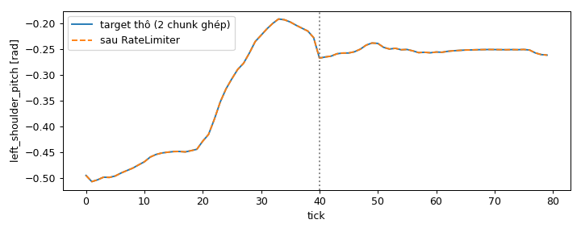
関節角度から動作と力へ。
GR00T が出力するのは目標関節角度だけです。その数値を実際の動作に変えるには、運動学（関節角度 ↔ 手・カメラの位置）と動力学（トルク、慣性、接触、バランス）の理解が必要です。本節ではこれらの知識と、プロジェクト内で現れる場面をまとめます。各概念には試せる図解を用意しています。
G1 の関節構造
G1 はリンクを回転関節で結んだツリー構造で、根元は骨盤（pelvis）です。関節グループごとに異なるコンポーネントが制御します。各グループをクリックして確認できます。
GR00T は上半身の 31 関節を制御します（タスク中、腰はほぼ固定）。AGILE は脚の 12 関節を担当します。
順運動学
順運動学（FK）は、URDF ファイルに記述された関節ツリーに沿って変換を順に掛け合わせることで、関節角度から各リンク（手、指先、カメラ）の位置を計算します。スライダーを動かすと分かるとおり、関節角度が分かれば手の位置が正確に分かります。
逆運動学
逆運動学（IK）はその逆で、手首の目標位置を与えて、それを実現する関節角度を求めます。Meta Quest ヘッドセットでテレオペする際、コントローラの姿勢がロボットの手首目標となり、IK ソルバー Pink が毎フレーム関節角度を計算します。枠内をクリックまたはドラッグして目標を設定できます。到達範囲外にも置いてみてください。
動力学
運動学が教えてくれるのは、関節角度が分かったときに手がどこにあるかだけです。動力学は次の問いに答えます：関節を実際にその角度まで回転させるにはどうするか。GR00T が送るのは目標角度だけで、力は送りません。各関節のモーターは、リンク（質量と慣性を持つ）を振動させずに目標まで動かすのに十分なトルクを自ら生み出す必要があります。
目標から離れるほど、引き戻す力が強くなります。ばねが硬いほど関節は速く目標に追従しますが、行き過ぎて振動しやすくなります。
関節が速く回るほど、制動力が大きくなります。減衰が十分なら関節は行き過ぎずに滑らかに目標へ到達し、多すぎると到達が遅くなります。
トルク = Kp × (目標角度 − 現在角度) − Kd × 関節速度
(ばねが目標へ引き戻す) (ショックアブソーバーが制動)
プロジェクトでは：Kp、Kd は手で選ばず、分かりやすい 2 つのパラメータからモーター慣性に基づいて導出します：固有振動数 10 Hz（速さ）と減衰比 ζ = 2（滑らかさ）。結果：関節は約 140 ms で目標の 90 % に達し、オーバーシュートはありません。下のスライダーで比較できます。
シミュレーションで PD トルクを計算するのは誰か？
PhysX がソルバーのステップ内で PD 力を計算します。関節が硬くても非常に安定しており、Isaac Lab のデフォルトです。
各ステップで上の式をそのまま適用するため、実機ロボットのドライバーにより近い方式です。Arena は G1 にこの方式を使用しています。
注意すべき理由：同じ目標角度の系列でも、2 つの方式では腕の動きがわずかに異なります。モデルがどちらの方式で記録したデモから学習したかに合わせて、評価でも同じ方式を使うべきです。
関節速度の制限
安全層が関節角度の急な跳びを抑えます：1 tick（20 ms）あたりの角度変化は、腕で最大 0.2 rad、腰で 0.1 rad、手で 1.5 rad です。しきい値は実データから決定しています（腕：99.9 パーセンタイルで 0.15 rad/tick）。大きなステップ指令を試してみてください：
From joint angles to motion and force.
GR00T only outputs target joint angles. Turning those numbers into real motion requires understanding kinematics (joint angles ↔ hand and camera positions) and dynamics (torque, inertia, contact, balance). This section summarises that knowledge and where it appears in the project; each concept has an illustration to try.
G1 joint structure
The G1 is a tree of links connected by revolute joints, rooted at the pelvis. Each joint group is controlled by a different component. Click a group to see it.
GR00T controls the 31 upper-body joints (the waist is almost fixed in the tasks); AGILE handles the 12 leg joints.
Forward kinematics
Forward kinematics (FK) computes the position of each link (hand, fingertip, camera) from the joint angles by multiplying, in turn, the transforms along the joint tree described in the URDF file. Drag the sliders to see it: knowing the joint angles means knowing exactly where the hand is.
Inverse kinematics
Inverse kinematics (IK) works the other way: given a desired wrist position, find the joint angles that reach it. In teleop with the Meta Quest headset, the controller pose becomes the robot's wrist target, and the Pink IK solver computes the joint angles every frame. Click or drag in the frame to set the target; try placing it out of reach.
Dynamics
Kinematics only tells where the hand is given the joint angles. Dynamics answers the next question: how to make the joint actually rotate to that angle. GR00T sends only target angles, not forces; the motor at each joint must produce enough torque to drive the link (which has mass and inertia) to the target without oscillating.
The further from the target, the stronger the pull back. The stiffer the spring, the faster the joint tracks the target, but it tends to overshoot and oscillate back and forth.
The faster the joint rotates, the stronger the braking force. With enough damping the joint reaches the target smoothly without overshoot; too much and it gets there slowly.
torque = Kp × (target angle − current angle) − Kd × joint velocity
(spring pulls toward target) (shock absorber brakes)
In the project: Kp and Kd are not hand-tuned but derived from the motor inertia using two intuitive parameters: natural frequency 10 Hz (speed) and damping ratio ζ = 2 (smoothness). Result: the joint reaches 90 % of the target after ~140 ms with no overshoot. Drag the sliders below to compare.
Who computes the PD torque in simulation?
PhysX computes the PD force inside the solver step. Very stable even with stiff joints; the default in Isaac Lab.
Applies exactly the formula above at every step, closer to the real robot's driver. Arena uses this option for the G1.
Why it matters: for the same sequence of target angles, the two options give slightly different arm motion. A model trained on demos recorded with one option should be evaluated with that same option.
Joint rate limit
A safety layer blocks joint-angle jumps: per tick (20 ms) the arm angle changes by at most 0.2 rad, the waist 0.1 rad, the hands 1.5 rad. The thresholds come from real data (arm: 0.15 rad/tick at the 99.9th percentile). Try a large step command:
Ít demo thật, nhiều dữ liệu huấn luyện.
Fine-tune GR00T cần vài trăm demo cho mỗi tác vụ, nhưng demo teleop đắt và model lại rất nhạy với hình ảnh. Mục này giải thích ba kỹ thuật để có thêm dữ liệu mà không teleop thêm (dự án đã áp dụng hai kỹ thuật sau, kỹ thuật đầu mới ở mức đề xuất): domain randomization, real2sim và sinh thêm demo. Mỗi kỹ thuật có một khung minh hoạ tương tác để thấy nó hoạt động ra sao.
Problem 1: Visual Gap
Nếu mọi demo được ghi trong cùng một khung cảnh, model học thuộc hình ảnh đó. Bài táo cho thấy rõ điều này.
Solution 1: Domain Randomization
Thử ngay: hai cách làm đa dạng hình ảnh
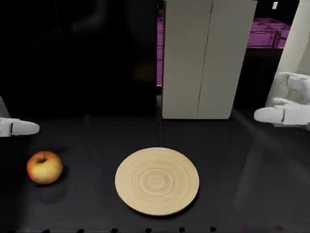
Color jitter: rẻ, áp lên ảnh khi huấn luyện, nhưng không tạo được bóng đổ, phản chiếu hay góc nhìn mới. Dự án đã dùng cách này khi fine-tune Multi Fruit.
Đổi chính khung cảnh rồi render lại. Quả táo và bàn tay (viền nét đứt) giữ nguyên: đó là thứ model phải học.
Yếu tố có thể ngẫu nhiên hoá
Ba nhóm yếu tố, từ dễ tới khó:
Ánh sáng, vật liệu, texture, phông nền, vật trang trí ngoài vùng thao tác.
Vị trí, hướng vật; vị trí, góc chúc, tiêu cự camera.
Khối lượng, ma sát, độ cứng khớp, độ trễ (Peng và cộng sự, 2018). Cần khi lên robot thật.
Áp dụng trong dự án
| Áp dụng | Đã làm | Còn thiếu |
|---|---|---|
| Apple & Plate | Đo visual gap 92 → 56 → 0 % | Ngẫu nhiên hoá khung cảnh rồi phát lại 208 demo (đề xuất ở mục III.01) |
| Multi Fruit | Đổi quả, vị trí, hướng, đĩa, quả gây nhiễu mỗi episode; color jitter khi fine-tune | Ánh sáng, vật liệu chưa đổi |
Problem 2: Sim Data Scarcity
Kịch bản Multi Fruit không có dataset mô phỏng phù hợp cho G1 + Dex3. Bộ gần nhất là PhysicalAI-Robotics-GR00T-Teleop-G1 (1.095 quỹ đạo teleop), nhưng được ghi trên robot thật nên không dùng thẳng trong mô phỏng được.
Dữ liệu chỉ có góc khớp và video; không biết quả và đĩa nằm ở đâu để dựng khung cảnh.
Video RealSense thật không khớp với ảnh mô phỏng mà model sẽ thấy khi chạy.
Action trên robot thật và trong mô phỏng cùng tên nhưng mang ý nghĩa khác nhau.
Solution 2: Real2sim
Thử ngay: tái tạo khung cảnh từ một quỹ đạo
Problem 3: Teleop Bottleneck
Kịch bản Hammer & Bin hoàn toàn mới: không có dataset hay checkpoint sẵn, mọi demo phải tự thu bằng teleop kính Meta Quest trong Isaac Lab.
100 demo thật đầu tiên mất 10 phiên teleop.
Tay robot đứng im khi mất tín hiệu tay cầm, giật lag từ lượt thứ 2.
Có demo được chấm thành công khi búa còn gác lên thành thùng hoặc tay chưa buông.
Solution 3: Demo Generation
Thử ngay: sinh demo búa → thùng
Bấm "Sinh 1 demo" để xem từng phép biến đổi.
Thực tế trong dự án: 100 / 133 lượt giữ lại, 60 demo khuôn, ~17 phút cho 100 demo.
Kết hợp và kết luận
Ba kỹ thuật không thay thế nhau mà nối thành một chuỗi. Hướng kết hợp cho giai đoạn đưa model lên robot thật:
Dự án đã kiểm chứng hai trong ba kỹ thuật: real2sim biến dữ liệu robot thật thành 790 episode mô phỏng (66 %), sinh thêm demo nhân đôi dữ liệu teleop trong ~17 phút (66 % với mix200). Domain randomization mới dừng ở đo visual gap và đề xuất phương pháp; đây là bước cần làm tiếp trước khi chuyển sang robot thật.
少ない実デモから、多くの学習データを。
GR00T のファインチューニングにはタスクごとに数百件のデモが必要ですが、テレオペデモはコストが高く、モデルは画像の変化に非常に敏感です。本節では、テレオペを増やさずにデータを増やすための 3 つの手法、domain randomization、real2sim、デモ追加生成を説明します（本プロジェクトでは後の 2 つを適用済みで、最初の手法はまだ提案段階です）。各手法には動作を確認できるインタラクティブな図解があります。
課題 1: Visual Gap
すべてのデモを同じシーンで記録すると、モデルはその画像を丸暗記してしまいます。リンゴのタスクがこれをはっきり示しています。
解決策 1: Domain Randomization
試してみる：画像を多様化する 2 つの方法
Color jitter：低コストで学習時に画像へ適用できますが、影、反射、新しい視点は作れません。本プロジェクトでは Multi Fruit のファインチューニング時にこの方法を使用しました。
シーンそのものを変えて再レンダリングします。リンゴと手（破線の枠）は変わりません。これがモデルが学ぶべきものです。
ランダム化できる要素
易しいものから難しいものまで、3 つの要素グループ：
照明、材質、テクスチャ、背景、操作領域外の装飾物。
物体の位置・向き、カメラの位置・俯角・焦点距離。
質量、摩擦、関節剛性、遅延（Peng ら、2018）。実ロボットに移行する際に必要です。
本プロジェクトでの適用
| 適用先 | 実施済み | 未実施 |
|---|---|---|
| Apple & Plate | Visual gap を測定 92 → 56 → 0 % | シーンをランダム化して 208 件のデモを再生（III.01 節で提案） |
| Multi Fruit | エピソードごとに果物、位置、向き、皿、妨害用の果物を変更。ファインチューニング時に color jitter | 照明と材質は未変更 |
課題 2: Sim Data Scarcity
Multi Fruit シナリオには G1 + Dex3 向けの適切なシミュレーションデータセットがありません。最も近いのは PhysicalAI-Robotics-GR00T-Teleop-G1（テレオペ軌道 1,095 件）ですが、実ロボットで記録されたものであり、シミュレーションでそのまま使うことはできません。
データには関節角度と動画しかなく、シーンを構築するための果物と皿の位置がわかりません。
実際の RealSense 動画は、実行時にモデルが見るシミュレーション画像と一致しません。
実ロボットとシミュレーションの action は名前が同じでも意味が異なります。
解決策 2: Real2sim
試してみる：1 本の軌道からシーンを再構築
課題 3: Teleop Bottleneck
Hammer & Bin シナリオはまったく新しいもので、既存のデータセットやチェックポイントはありません。すべてのデモを Isaac Lab 上で Meta Quest ヘッドセットによるテレオペで自ら収集する必要があります。
最初の実デモ 100 件に 10 回のテレオペセッションを要しました。
コントローラーの信号が途切れるとロボットの手が停止し、2 回目以降はカクつきが発生します。
ハンマーが箱の縁に引っかかったまま、または手が離れていないのに成功と判定されたデモがありました。
解決策 3: Demo Generation
試してみる：ハンマー → 箱のデモを生成
「デモを 1 件生成」を押すと各変換を確認できます。
本プロジェクトでの実績：100 / 133 回を採用、テンプレートデモ 60 件、デモ 100 件に ~17 分。
組み合わせと結論
3 つの手法は互いを置き換えるものではなく、1 つのパイプラインとしてつながります。モデルを実ロボットへ移行する段階での組み合わせ方針：
本プロジェクトは 3 つの手法のうち 2 つを検証済みです。real2sim は実ロボットのデータを 790 件のシミュレーションエピソードに変換し（66 %）、デモ追加生成は ~17 分でテレオペデータを倍増させました（mix200 で 66 %）。Domain randomization は visual gap の測定と手法の提案にとどまっており、実ロボットへ移行する前に取り組むべき次のステップです。
Few real demos, plenty of training data.
Fine-tuning GR00T needs a few hundred demos per task, but teleop demos are expensive and the model is highly sensitive to visuals. This section explains three techniques for getting more data without more teleop (the project has applied the latter two; the first is still only a proposal): domain randomization, real2sim and demo generation. Each technique has an interactive illustration showing how it works.
Problem 1: Visual Gap
If every demo is recorded in the same scene, the model memorises that image. The apple task shows this clearly.
Solution 1: Domain Randomization
Try it: two ways to diversify images
Color jitter: cheap, applied to images during training, but it cannot create shadows, reflections or new viewpoints. The project used this method when fine-tuning Multi Fruit.
Change the scene itself, then re-render. The apple and the hand (dashed outline) stay the same: that is what the model must learn.
Factors that can be randomized
Three groups of factors, from easy to hard:
Lighting, materials, textures, background, decorative objects outside the manipulation area.
Object position and orientation; camera position, tilt and focal length.
Mass, friction, joint stiffness, latency (Peng et al., 2018). Needed when moving to the real robot.
Application in the project
| Applied to | Done | Still missing |
|---|---|---|
| Apple & Plate | Measured visual gap 92 → 56 → 0 % | Randomize the scene, then replay the 208 demos (proposed in section III.01) |
| Multi Fruit | Fruit, position, orientation, plate and distractor fruit changed every episode; color jitter during fine-tuning | Lighting and materials not yet varied |
Problem 2: Sim Data Scarcity
The Multi Fruit scenario has no suitable simulation dataset for G1 + Dex3. The closest is PhysicalAI-Robotics-GR00T-Teleop-G1 (1,095 teleop trajectories), but it was recorded on a real robot and cannot be used directly in simulation.
The data has only joint angles and video; there is no record of where the fruit and plate are, so the scene cannot be built.
Real RealSense video does not match the simulated images the model will see at run time.
Actions on the real robot and in simulation share the same names but carry different meanings.
Solution 2: Real2sim
Try it: reconstruct the scene from one trajectory
Problem 3: Teleop Bottleneck
The Hammer & Bin scenario is completely new: there is no existing dataset or checkpoint, and every demo has to be collected by Meta Quest headset teleop in Isaac Lab.
The first 100 real demos took 10 teleop sessions.
The robot hand freezes when the controller signal is lost, and lags from the 2nd attempt.
Some demos were marked successful while the hammer was still resting on the bin wall or the hand had not let go.
Solution 3: Demo Generation
Try it: generate hammer → bin demos
Click "Generate 1 demo" to see each transformation.
In the actual project: 100 / 133 attempts kept, 60 template demos, ~17 minutes for 100 demos.
Combination and conclusion
The three techniques do not replace one another; they chain into a single pipeline. The combined approach for the stage of moving the model to the real robot:
The project has validated two of the three techniques: real2sim turned real-robot data into 790 simulation episodes (66 %), and demo generation doubled the teleop data in ~17 minutes (66 % with mix200). Domain randomization has so far only reached measuring the visual gap and proposing a method; it is the next step to take before moving to the real robot.
Robot G1 gắp quả táo trên kệ, đặt lên đĩa.
Kịch bản mẫu của NVIDIA Isaac Lab Arena, chạy lại bằng pipeline điều khiển do dự án tự xây dựng. Dự án kiểm chứng pipeline theo tầng (open-loop với dataset, phát lại demo) rồi đánh giá checkpoint của NVIDIA trong ba khung cảnh. Kết quả: 92 % trong môi trường gốc, 56 % khi chỉ lệch ánh sáng, 0 % khi cả khung cảnh khác — model rất nhạy với hình ảnh, pipeline hoạt động đúng.
- NguồnNVIDIA · teleop XR
- Frame35.066
- Tần số50 Hz
- DùngCheckpoint NVIDIA
- Đã tune choTáo → đĩa
- Câu lệnhTheo dataset
- CheckpointGN1x-Tuned-Arena
- EmbodimentG1 + Dex3
- Chuỗi action40 bước · 50 Hz
Video Showcase
Bối cảnh kịch bản
Robot G1 đứng trước một kệ trong phòng lab Galileo của Arena; quả táo và chiếc đĩa đặt cạnh nhau trên mặt kệ. Ảnh dưới ghép khung đầu tiên của episode trong Video Showcase (ảnh model nhận vào ở bước 0) với góc nhìn xiên toàn cảnh.
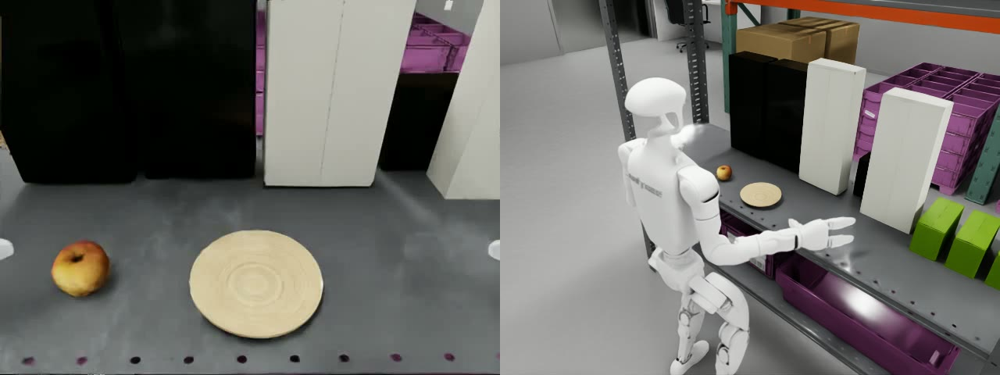
| Khung cảnh & vật thể | Chi tiết |
|---|---|
| Nền | Phòng lab Galileo (galileo_locomanip.usd); ẩn 3 hộp thiết bị che tầm tay (jetson_orin_06, jetson_orin_03, hesai_box_06) |
| Mặt kệ | Tấm đỡ ẩn 0,8 × 1,5 × 0,04 m; mặt trên cao 0,765 m |
| Quả táo | Đặt tại (0,58; 0,27) m |
| Đĩa | Đặt tại (0,58; 0,06) m — cách táo ~21 cm về bên phải robot |
| Ma sát | Tăng ma sát ngón tay Dex3 để giữ táo chắc |
| Robot, camera & điều khiển | Chi tiết |
|---|---|
| Robot | Unitree G1 + bàn tay Dex3, đứng tại (0,25; 0,08) m, quay mặt theo trục +x; chân giữ thăng bằng bằng bộ điều khiển AGILE, hông cao ~0,73–0,75 m (lệnh 0,72 m) |
| Camera | Gắn trên head_link, 640×480, tiêu cự 15 mm, chúc xuống ~35° |
| Tần số | Vật lý 200 Hz, điều khiển 50 Hz (4 bước vật lý / lệnh) |
| Episode | Tối đa 300 bước = 6 s; mỗi lần gọi model trả về chuỗi 40 bước |
| Câu lệnh | "Pick up the apple from the shelf and place it onto the plate on the same shelf next to it." |
| Thành công | Tâm táo cách tâm đĩa < 8 cm, cao hơn đĩa 0–4 cm và vận tốc < 0,1 m/s |
Mục tiêu kịch bản
Kịch bản mẫu của NVIDIA được dùng làm chuẩn đối chiếu: model và dữ liệu đã có sẵn, nên mọi sai khác đều đến từ pipeline hoặc môi trường của dự án.
Nắm đầy đủ luồng từ camera và góc khớp tới model, và từ model tới động cơ của G1.
Xây package độc lập, không phụ thuộc Arena khi chạy — bước bắt buộc trước khi lên robot thật, vì Arena chỉ chạy trong mô phỏng.
Chứng minh pipeline đúng theo tầng, rồi đo tỉ lệ thành công của checkpoint NVIDIA và tìm nguyên nhân khi thất bại.
Dữ liệu kịch bản
| Dataset Arena-G1-Static-PickNPlace | Giá trị |
|---|---|
| Nguồn | Teleop kính XR trong Isaac Lab, 50 Hz — dữ liệu đã dùng để fine-tune checkpoint NVIDIA |
| Số episode | 208 file (card ghi 200; metadata đánh chỉ số tới 251) |
| Tổng frame | 35.066 (11,7 phút); mỗi episode 2,3–5,3 s |
| Câu lệnh | "Pick up the apple from the shelf and place it onto the plate on the same shelf next to it." |
| Quan sát | Chỉ tay trái nắm táo; eo, bàn tay phải gần như bất động; robot đứng yên, thân cao ~0,72 m |
Vấn đề gặp phải
Khi tạo lại pipeline của Arena bằng package tự viết, mọi khâu điều khiển đều chạy đúng, nhưng tỉ lệ thành công phụ thuộc mạnh vào hình ảnh camera mà model nhận được.
Khung cảnh tự dựng (bàn hộp, sàn lưới, đèn dome) cho 0/50 thành công, chỉ 11/50 nhấc được táo. Model vươn tay giống demo nhưng không bao giờ ra lệnh nắm.
Khung cảnh Galileo dựng lại khớp bố trí và góc camera với dataset nhưng chỉ đạt 56 %, so với 92 % trong Arena gốc. Khác biệt còn lại chủ yếu ở ánh sáng và cách render.
Checkpoint được fine-tune trên dữ liệu ghi trong đúng một khung cảnh, một điều kiện ánh sáng, nên gắn chặt với hình ảnh đó thay vì với vật thể cần thao tác.
Robot thật sẽ gặp ánh sáng, nền, vật liệu khác hẳn mô phỏng; với mức nhạy hình ảnh hiện tại, checkpoint không thể dùng trực tiếp.
Phương pháp đề xuất
Đề xuất dùng domain randomization: khi tạo dữ liệu huấn luyện, thay đổi ngẫu nhiên những yếu tố hình ảnh không liên quan tới tác vụ, để model buộc phải dựa vào vật thể và tư thế tay thay vì nền và ánh sáng.
Domain randomization cũng là kỹ thuật phổ biến cho sim2real; ở đây áp dụng trước cho khoảng cách giữa các khung cảnh mô phỏng, là bước tiền đề trước khi chuyển sang robot thật.
Các yếu tố ngẫu nhiên hoá
Ngoại quan — thứ model nhìn thấy nhưng không ảnh hưởng tới cách làm tác vụ:
Thay đổi cường độ và nhiệt độ màu của đèn dome/rect, hướng chiếu, bật tắt đèn bake sẵn — đúng yếu tố làm 92 % rơi xuống 56 %.
Đổi màu, độ bóng, texture của mặt kệ/bàn, đĩa và nền phòng; giữ nguyên hình dạng vật thể.
Đổi phông nền, thêm/bớt hộp và vật trang trí ngoài vùng thao tác.
Hình học — góc nhìn và vị trí vật, để model không học thuộc một bố cục cố định:
Dao động nhỏ vị trí, góc chúc và tiêu cự camera đầu; thêm nhiễu, độ phơi sáng và color jitter khi huấn luyện.
Xáo vị trí, hướng của táo và đĩa trong vùng với tới của tay.
Cách áp dụng
Kỳ vọng: thu hẹp khoảng cách 92 % → 56 % → 0 % giữa các khung cảnh. Thước đo là tỉ lệ thành công trên khung cảnh tự dựng (hiện 0 %) và Galileo dựng lại (hiện 56 %), mỗi cấu hình ≥ 50 episode.
Chu trình thực hiện
Tái hiện lại luồng chạy của Isaac Lab Arena bằng package tự viết standalone_g1_gr00t: tách từng khâu của Arena ra, viết lại và kiểm chứng riêng trong một notebook, rồi ghép lại thành vòng kín không còn phụ thuộc Arena.
| Bước | Việc làm | Notebook / công cụ | Kết quả |
|---|---|---|---|
| 1 | Chạy pipeline Arena với client và checkpoint của NVIDIA để có mốc so sánh | Isaac Lab Arena | 92 % trong môi trường gốc |
| 2 | Giao thức ZMQ + msgpack, hợp đồng modality; bảng 4 thứ tự khớp, build_observation, decode_action, ChunkScheduler | nb01_server_wire, nb02_joints_obs_action | Gửi/nhận đúng chuỗi 40 bước |
| 3 | Ảnh và trạng thái thật từ dataset → server → so với action ghi sẵn; tái tạo vector quan sát 80 chiều của policy chân ONNX | nb03_open_loop_dataset, nb04_agile_onnx | Sai số nhỏ hơn biên độ 10–70×; AGILE trùng từng bit |
| 4 | Dựng tay backend: SimulationContext → robot → camera đầu → táo/đĩa → ma sát ngón tay → observe/apply; ghép đủ đường dữ liệu | nb05_backend_anatomy, nb06_full_pipeline | Đứng vững 10 s; phát lại demo thành công |
| 5 | Dựng lại khung cảnh Galileo của Arena, chạy 50 episode GR00T; đóng gói runner, policy, sanitize_chunk, RateLimiter | nb07_full_pipeline_loop, nb08_runner_policy_safety | 56 % (lệch ánh sáng), 0 % (khung cảnh tự dựng) |
Kết quả đạt được
Số liệu đo được ở từng bước của chu trình, từ kiểm chứng từng khối tới chạy vòng kín. Cùng một checkpoint NVIDIA và cùng câu lệnh cho mọi lần chạy.
| Bước | Số liệu đo được |
|---|---|
| Giao tiếp model | Chuỗi 40 bước mỗi lần gọi; độ trễ ~1,2 s/lần (trung vị 50 episode; mô phỏng chờ model nên không ảnh hưởng kết quả) |
| Open-loop với dataset | MAE tay trái 0,032 · tay phải 0,019 · bàn tay trái 0,008 rad (3 episode, 11 chunk) |
| Câu lệnh | Câu trong dataset 0,025 rad; câu mặc định Arena 0,047 rad; câu vô nghĩa 0,039 rad |
| Chân AGILE | Trùng từng bit với bản tham chiếu; đứng vững 500 tick, thân 0,73–0,75 m, nghiêng tối đa ~10° |
| Phát lại demo | 2/3 lần thành công; táo cách tâm đĩa 3 cm; sai số bám khớp 0,04 rad |
| Vòng kín · Galileo | 28/50 thành công; nhấc được 72 %; khoảng cách táo–đĩa trung vị 3,8 cm; thời gian tới thành công trung vị 2,7 s |
| Vòng kín · tự dựng | 0/50 thành công; nhấc được 22 %; khoảng cách táo–đĩa trung vị 20,6 cm |
Phân tích kết quả
So sánh các lần chạy theo từng pha của tác vụ để xác định thất bại đến từ đâu.
| Pha (50 episode) | Tự dựng | Galileo |
|---|---|---|
| Nhấc được táo | 11 (22 %) | 36 (72 %) |
| Đặt trúng đĩa / số đã nhấc | 0 / 11 | 28 / 36 (78 %) |
| Thành công | 0 % | 56 % |
| Ngã | 3 | 2 |
Cùng checkpoint, câu lệnh: 92 % (client NVIDIA, Arena gốc) → 56 % → 0 % (pipeline của dự án) chỉ do đổi khung cảnh. Hai khoảng tin cậy 0–7 % và 42–69 % không chồng nhau.
Ở khung cảnh tự dựng model hầu như không nhấc được táo (22 %). Ở Galileo, khi đã nhấc thì 78 % đặt trúng đĩa — kỹ năng thao tác vẫn còn.
28 lần thành công với khoảng cách cuối 1–6 cm, cùng các kiểm chứng open-loop và phát lại, loại trừ lỗi dịch dữ liệu.
Model fine-tune trên một khung cảnh không tổng quát hoá; cần thu dữ liệu trong môi trường làm việc hoặc tăng đa dạng hình ảnh khi huấn luyện.
Chi tiết 22 lần thất bại (khung cảnh Galileo)
12Không nhấc được táo
9 lần táo gần như không đổi chỗ; 2 lần táo bị đẩy trượt 4–9 cm; 1 lần táo bị hất rơi khỏi kệ.
Nguyên nhân khả dĩ: nắm trượt hoặc tiếp cận sai. Vị trí ban đầu giống nhau ⇒ khác biệt đến từ tính ngẫu nhiên khi model lấy mẫu.
8Nhấc được nhưng đặt trượt
6 lần thả cách đĩa 9–20 cm (gần nhất 9,1 cm, vừa vượt ngưỡng 8 cm); 2 lần làm rơi táo khỏi kệ.
2Ngã ngay đầu episode
Ngã ở tick 7 và 30, trước khi chạm táo. Chunk tay đầu tiên chồng lên giai đoạn AGILE còn đang ổn định sau reset. Đề xuất cho robot "khởi động" vài chục tick trước khi giao quyền cho model.
Các yếu tố đã loại trừ
Mô phỏng chờ server; độ trễ của episode thành công và thất bại như nhau.
Chỉ cắt khớp tay ở biên chunk, chưa lần nào cắt bàn tay hay eo.
28 lần thành công với khoảng cách cuối 1–6 cm ⇒ chuỗi dữ liệu hoạt động đúng.
Kết luận kịch bản
Model fine-tune trên một khung cảnh rất nhạy với hình ảnh: 92 % ở môi trường gốc lúc ghi dữ liệu, 56 % khi chỉ lệch ánh sáng, 0 % khi khác hẳn. Triển khai thực tế phải thu dữ liệu ngay trong môi trường làm việc hoặc tăng đa dạng hình ảnh khi huấn luyện.
- Đã làm chủ và tái hiện độc lập pipeline; mã nguồn sẵn sàng thay backend robot thật.
- Phải dùng đúng câu lệnh lúc ghi dữ liệu; mỗi cấu hình cần ≥ 50 episode để kết luận.
- Chưa thực hiện: chạy pipeline của dự án bên trong Docker Arena gốc để đối chứng trực tiếp với mốc 92 %; khung cảnh Galileo với xáo ±2 cm; giai đoạn khởi động sau reset.
G1 が棚の上のリンゴをつかみ、皿に置く。
NVIDIA Isaac Lab Arena のサンプルシナリオを、プロジェクトが独自に構築した制御パイプラインで再実行しました。パイプラインを層ごとに検証（データセットとの open-loop 比較、デモ再生）したうえで、NVIDIA のチェックポイントを 3 つのシーンで評価しました。結果：元の環境で 92 %、照明のみ異なる場合 56 %、シーン全体が異なる場合 0 % — モデルは画像に非常に敏感であり、パイプラインは正しく動作しています。
- データ源NVIDIA · XR テレオペ
- フレーム35,066
- 周波数50 Hz
- 使用NVIDIA チェックポイント
- 調整対象リンゴ → 皿
- 指示文データセット準拠
- チェックポイントGN1x-Tuned-Arena
- EmbodimentG1 + Dex3
- アクション列40 ステップ · 50 Hz
Video Showcase
シナリオの状況
G1 ロボットは Arena の Galileo ラボの棚の前に立っています。リンゴと皿は棚の面に並べて置かれています。下の画像は、Video Showcase のエピソードの最初のフレーム（ステップ 0 でモデルが受け取る画像）と、斜めからの全景を組み合わせたものです。
| シーンと物体 | 詳細 |
|---|---|
| 背景 | Galileo ラボ（galileo_locomanip.usd）。手の届く範囲をふさぐ機器の箱 3 個を非表示（jetson_orin_06、jetson_orin_03、hesai_box_06） |
| 棚の面 | 非表示の支持板 0.8 × 1.5 × 0.04 m、上面の高さ 0.765 m |
| リンゴ | 位置 (0.58, 0.27) m |
| 皿 | 位置 (0.58, 0.06) m — リンゴからロボットの右側へ約 21 cm |
| 摩擦 | リンゴをしっかり保持するため Dex3 の指の摩擦を増加 |
| ロボット・カメラ・制御 | 詳細 |
|---|---|
| ロボット | Unitree G1 + Dex3 ハンド、位置 (0.25, 0.08) m、+x 軸方向を向く。脚は AGILE コントローラーでバランスを保持、腰の高さ約 0.73–0.75 m（指令値 0.72 m） |
| カメラ | head_link に取り付け、640×480、焦点距離 15 mm、下向き約 35° |
| 周波数 | 物理 200 Hz、制御 50 Hz（1 指令あたり物理 4 ステップ） |
| エピソード | 最大 300 ステップ = 6 s。モデル呼び出し 1 回につき 40 ステップのアクション列を返す |
| 指示文 | "Pick up the apple from the shelf and place it onto the plate on the same shelf next to it." |
| 成功条件 | リンゴ中心が皿中心から 8 cm 未満、皿より 0–4 cm 高く、速度 < 0.1 m/s |
シナリオの目標
NVIDIA のサンプルシナリオを比較基準として使用します。モデルとデータは既に揃っているため、差異はすべてプロジェクトのパイプラインまたは環境に起因します。
カメラと関節角からモデルへ、モデルから G1 のモーターへの流れを完全に把握します。
実行時に Arena に依存しない独立パッケージを構築します。Arena はシミュレーション内でしか動作しないため、実機へ移行する前に必須の工程です。
パイプラインの正しさを層ごとに証明し、NVIDIA チェックポイントの成功率を測定して、失敗の原因を特定します。
シナリオのデータ
| データセット Arena-G1-Static-PickNPlace | 値 |
|---|---|
| データ源 | Isaac Lab 上の XR ヘッドセットによるテレオペ、50 Hz — NVIDIA チェックポイントのファインチューニングに使われたデータ |
| エピソード数 | 208 ファイル（カードの記載は 200、メタデータのインデックスは 251 まで） |
| 総フレーム数 | 35,066（11.7 分）。各エピソード 2.3–5.3 s |
| 指示文 | "Pick up the apple from the shelf and place it onto the plate on the same shelf next to it." |
| 観察 | リンゴをつかむのは左手のみ。腰と右手はほぼ静止。ロボットは立ったまま、胴体の高さ約 0.72 m |
直面した課題
Arena のパイプラインを独自パッケージで再現したところ、制御の各工程はすべて正しく動作しましたが、成功率はモデルが受け取るカメラ画像に強く依存していました。
独自に構築したシーン（箱型テーブル、グリッド床、dome ライト）では成功 0/50、リンゴを持ち上げられたのは 11/50 のみでした。モデルはデモと同様に手を伸ばすものの、把持の指令を一度も出しません。
再構築した Galileo シーンは配置とカメラ角度がデータセットと一致していますが、元の Arena の 92 % に対し 56 % にとどまります。残る差は主に照明とレンダリング方式です。
チェックポイントはただ 1 つのシーン、1 つの照明条件で記録したデータでファインチューニングされているため、操作対象の物体ではなくその画像に強く結びついています。
実機はシミュレーションとまったく異なる照明・背景・材質に直面します。現在の画像への敏感さでは、チェックポイントをそのまま使うことはできません。
提案手法
domain randomization の採用を提案します。学習データを生成する際、タスクに関係のない視覚的要素をランダムに変化させ、モデルが背景や照明ではなく物体と手の姿勢に頼らざるを得ないようにします。
domain randomization は sim2real でも一般的な手法です。ここではまずシミュレーションのシーン間の差に適用し、実機へ移行する前の前段階とします。
ランダム化する要素
外観 — モデルには見えるが、タスクの実行方法には影響しないもの：
dome/rect ライトの強度と色温度、照射方向を変化させ、ベイク済みライトのオン／オフを切り替えます。92 % を 56 % に下げたのはまさにこの要因です。
棚／テーブルの面、皿、部屋の背景の色・光沢・テクスチャを変更します。物体の形状は変えません。
背景を変更し、操作領域外の箱や装飾物を追加／削除します。
幾何 — モデルが固定の配置を暗記しないよう、視点と物体の位置を変える：
頭部カメラの位置・俯角・焦点距離をわずかに変動させ、学習時にノイズ、露出、color jitter を加えます。
手の届く範囲内でリンゴと皿の位置・向きをシャッフルします。
適用方法
期待される効果：シーン間の 92 % → 56 % → 0 % の差を縮めることです。指標は独自構築シーン（現在 0 %）と再構築した Galileo（現在 56 %）での成功率で、各構成 ≥ 50 エピソードとします。
実施プロセス
Isaac Lab Arena の実行フローを独自パッケージ standalone_g1_gr00t で再現しました。Arena の各工程を切り出し、書き直して notebook で個別に検証し、最後に Arena に依存しない閉ループとして統合しました。
| ステップ | 作業内容 | Notebook / ツール | 結果 |
|---|---|---|---|
| 1 | NVIDIA のクライアントとチェックポイントで Arena パイプラインを実行し、比較基準を得る | Isaac Lab Arena | 元の環境で 92 % |
| 2 | ZMQ + msgpack プロトコル、modality 契約。関節順序 4 種の対応表、build_observation、decode_action、ChunkScheduler | nb01_server_wire, nb02_joints_obs_action | 40 ステップのアクション列を正しく送受信 |
| 3 | データセットの実画像と状態 → サーバー → 記録済みアクションと比較。ONNX 脚ポリシーの 80 次元観測ベクトルを再構成 | nb03_open_loop_dataset, nb04_agile_onnx | 誤差は振幅の 1/10–1/70。AGILE はビット単位で一致 |
| 4 | バックエンドを手作業で構築：SimulationContext → ロボット → 頭部カメラ → リンゴ／皿 → 指の摩擦 → observe/apply。データ経路全体を接続 | nb05_backend_anatomy, nb06_full_pipeline | 10 s 安定して直立。デモ再生に成功 |
| 5 | Arena の Galileo シーンを再構築し、GR00T で 50 エピソード実行。runner、policy、sanitize_chunk、RateLimiter をパッケージ化 | nb07_full_pipeline_loop, nb08_runner_policy_safety | 56 %（照明の差）、0 %（独自構築シーン） |
達成した結果
ブロックごとの検証から閉ループ実行まで、プロセスの各ステップで測定した数値です。すべての実行で同じ NVIDIA チェックポイントと同じ指示文を使用しています。
| ステップ | 測定値 |
|---|---|
| モデルとの通信 | 呼び出しごとに 40 ステップのアクション列。遅延 約 1.2 s/回（50 エピソードの中央値。シミュレーションはモデルを待つため結果に影響しない） |
| データセットとの open-loop 比較 | MAE 左腕 0.032 · 右腕 0.019 · 左手 0.008 rad（3 エピソード、11 chunk） |
| 指示文 | データセットの文 0.025 rad、Arena 既定の文 0.047 rad、無意味な文 0.039 rad |
| AGILE 脚制御 | 参照実装とビット単位で一致。500 tick 安定して直立、胴体 0.73–0.75 m、最大傾き約 10° |
| デモ再生 | 3 回中 2 回成功。リンゴと皿中心の距離 3 cm。関節追従誤差 0.04 rad |
| 閉ループ · Galileo | 28/50 成功。持ち上げ 72 %。リンゴ–皿距離の中央値 3.8 cm。成功までの時間の中央値 2.7 s |
| 閉ループ · 独自構築 | 0/50 成功。持ち上げ 22 %。リンゴ–皿距離の中央値 20.6 cm |
結果の分析
タスクの段階ごとに各実行を比較し、失敗の原因がどこにあるかを特定します。
| 段階（50 エピソード） | 独自構築 | Galileo |
|---|---|---|
| リンゴを持ち上げた | 11 (22 %) | 36 (72 %) |
| 皿に置けた / 持ち上げた数 | 0 / 11 | 28 / 36 (78 %) |
| 成功 | 0 % | 56 % |
| 転倒 | 3 | 2 |
チェックポイントと指示文は同じで、シーンを変えただけで 92 %（NVIDIA クライアント、元の Arena）→ 56 % → 0 %（本プロジェクトのパイプライン）となりました。2 つの信頼区間 0–7 % と 42–69 % は重なりません。
独自構築シーンではモデルはほとんどリンゴを持ち上げられません（22 %）。Galileo では、持ち上げた後は 78 % が皿に置けています — 操作スキルは保たれています。
最終距離 1–6 cm での 28 回の成功と、open-loop および再生による検証により、データ変換の誤りは否定されます。
1 つのシーンでファインチューニングしたモデルは汎化しません。作業環境でデータを収集するか、学習時に画像の多様性を高める必要があります。
失敗 22 回の詳細（Galileo シーン）
12リンゴを持ち上げられない
9 回はリンゴがほぼ動かず、2 回はリンゴが押されて 4–9 cm 滑り、1 回はリンゴが棚から弾き落とされました。
考えられる原因：把持の滑り、または接近の誤り。初期位置は同一 ⇒ 差はモデルのサンプリングのランダム性に起因します。
8持ち上げたが置く位置がずれた
6 回は皿から 9–20 cm の位置で離しました（最も近いもので 9.1 cm、8 cm のしきい値をわずかに超過）。2 回はリンゴを棚から落としました。
2エピソード開始直後に転倒
リンゴに触れる前の tick 7 と tick 30 で転倒しました。最初の腕の chunk が、リセット後に AGILE がまだ安定化している期間と重なっています。モデルに制御を渡す前に、ロボットを数十 tick「ウォームアップ」させることを提案します。
除外した要因
シミュレーションはサーバーを待ちます。成功エピソードと失敗エピソードの遅延は同等です。
chunk の境界で腕の関節をクリップするのみで、手や腰をクリップしたことは一度もありません。
最終距離 1–6 cm での 28 回の成功 ⇒ データの連鎖は正しく動作しています。
シナリオの結論
1 つのシーンでファインチューニングしたモデルは画像に非常に敏感です：データ記録時の元の環境では 92 %、照明だけが異なると 56 %、まったく異なるシーンでは 0 % です。実運用では、作業環境で直接データを収集するか、学習時に画像の多様性を高める必要があります。
- パイプラインを習得し、独自に再現しました。ソースコードは実機バックエンドへの差し替えに対応済みです。
- データ記録時と同じ指示文を使う必要があります。結論を出すには各構成で ≥ 50 エピソードが必要です。
- 未対応：92 % の基準と直接比較するため、元の Docker Arena 内で本プロジェクトのパイプラインを実行すること、±2 cm シャッフルを加えた Galileo シーン、リセット後のウォームアップ段階。
G1 picks an apple from the shelf and places it on a plate.
A sample scenario from NVIDIA Isaac Lab Arena, re-run with a control pipeline built by the project. The project verified the pipeline layer by layer (open-loop against the dataset, demo replay) and then evaluated NVIDIA's checkpoint in three scenes. Results: 92 % in the original environment, 56 % when only the lighting differs, 0 % when the whole scene differs — the model is highly sensitive to visuals, and the pipeline works correctly.
- SourceNVIDIA · XR teleop
- Frames35,066
- Rate50 Hz
- UsesNVIDIA checkpoint
- Tuned forApple → plate
- InstructionFrom the dataset
- CheckpointGN1x-Tuned-Arena
- EmbodimentG1 + Dex3
- Action chunk40 steps · 50 Hz
Video Showcase
Scenario setting
The G1 robot stands in front of a shelf in Arena's Galileo lab; the apple and the plate sit next to each other on the shelf surface. The image below combines the first frame of the episode in the Video Showcase (the image the model receives at step 0) with an oblique overview.
| Scene & objects | Details |
|---|---|
| Background | Galileo lab (galileo_locomanip.usd); 3 equipment boxes blocking the hand's reach are hidden (jetson_orin_06, jetson_orin_03, hesai_box_06) |
| Shelf surface | Hidden support slab 0.8 × 1.5 × 0.04 m; top surface at 0.765 m |
| Apple | Placed at (0.58, 0.27) m |
| Plate | Placed at (0.58, 0.06) m — ~21 cm from the apple, to the robot's right |
| Friction | Dex3 finger friction increased to hold the apple firmly |
| Robot, camera & control | Details |
|---|---|
| Robot | Unitree G1 + Dex3 hands, standing at (0.25, 0.08) m, facing the +x axis; legs balanced by the AGILE controller, pelvis height ~0.73–0.75 m (command 0.72 m) |
| Camera | Mounted on head_link, 640×480, 15 mm focal length, tilted down ~35° |
| Rate | Physics 200 Hz, control 50 Hz (4 physics steps / command) |
| Episode | At most 300 steps = 6 s; each model call returns a chunk of 40 steps |
| Instruction | "Pick up the apple from the shelf and place it onto the plate on the same shelf next to it." |
| Success | Apple centre < 8 cm from the plate centre, 0–4 cm above the plate and velocity < 0.1 m/s |
Scenario goals
NVIDIA's sample scenario serves as a reference baseline: the model and data already exist, so any discrepancy comes from the project's pipeline or environment.
Fully understand the flow from camera and joint angles to the model, and from the model to the G1's motors.
Build a standalone package that does not depend on Arena at runtime — a mandatory step before moving to the real robot, since Arena runs only in simulation.
Prove the pipeline correct layer by layer, then measure the success rate of NVIDIA's checkpoint and find the causes of failure.
Scenario data
| Dataset Arena-G1-Static-PickNPlace | Value |
|---|---|
| Source | XR headset teleop in Isaac Lab, 50 Hz — the data used to fine-tune NVIDIA's checkpoint |
| Episodes | 208 files (the card states 200; metadata indexes up to 251) |
| Total frames | 35,066 (11.7 minutes); each episode 2.3–5.3 s |
| Instruction | "Pick up the apple from the shelf and place it onto the plate on the same shelf next to it." |
| Observations | Only the left hand grasps the apple; waist and right hand almost motionless; robot stands still, torso height ~0.72 m |
Problems encountered
When Arena's pipeline was recreated with the project's own package, every control stage worked correctly, but the success rate depended strongly on the camera images the model received.
The project-built scene (box table, grid floor, dome light) gives 0/50 successes, with only 11/50 lifting the apple. The model reaches out like in the demos but never commands a grasp.
The reconstructed Galileo scene matches the dataset's layout and camera angle but reaches only 56 %, versus 92 % in the original Arena. The remaining difference is mainly lighting and rendering.
The checkpoint was fine-tuned on data recorded in exactly one scene under one lighting condition, so it is tied to those images rather than to the objects to be manipulated.
The real robot will face lighting, backgrounds and materials very different from simulation; with the current visual sensitivity, the checkpoint cannot be used directly.
Proposed method
We propose domain randomization: when generating training data, randomly vary the visual factors unrelated to the task, so the model is forced to rely on the objects and hand pose rather than the background and lighting.
Domain randomization is also a common technique for sim2real; here it is applied first to the gap between simulated scenes, as a prerequisite step before moving to the real robot.
Randomized factors
Appearance — what the model sees but which does not affect how the task is done:
Vary the intensity and colour temperature of dome/rect lights, light direction, and toggle baked lights — exactly the factor that dropped 92 % to 56 %.
Change the colour, glossiness and texture of the shelf/table surface, the plate and the room background; keep object shapes unchanged.
Change the backdrop, add/remove boxes and decorative objects outside the manipulation area.
Geometry — viewpoint and object positions, so the model does not memorise a fixed layout:
Small perturbations of the head camera's position, tilt and focal length; add noise, exposure and color jitter during training.
Shuffle the position and orientation of the apple and plate within the hand's reach.
How to apply
Expected outcome: narrow the 92 % → 56 % → 0 % gap between scenes. The metric is the success rate in the project-built scene (currently 0 %) and the reconstructed Galileo scene (currently 56 %), with ≥ 50 episodes per configuration.
Implementation process
Isaac Lab Arena's execution flow was reproduced with the project's own package standalone_g1_gr00t: each Arena stage was separated out, rewritten and verified individually in a notebook, then assembled into a closed loop with no remaining dependency on Arena.
| Step | Work | Notebook / tool | Result |
|---|---|---|---|
| 1 | Run the Arena pipeline with NVIDIA's client and checkpoint to obtain a baseline | Isaac Lab Arena | 92 % in the original environment |
| 2 | ZMQ + msgpack protocol, modality contract; table of 4 joint orderings, build_observation, decode_action, ChunkScheduler | nb01_server_wire, nb02_joints_obs_action | Correctly sends/receives 40-step chunks |
| 3 | Real images and states from the dataset → server → compared with recorded actions; reconstruct the 80-dimensional observation vector of the ONNX leg policy | nb03_open_loop_dataset, nb04_agile_onnx | Error 10–70× smaller than the amplitude; AGILE bit-exact |
| 4 | Build the backend by hand: SimulationContext → robot → head camera → apple/plate → finger friction → observe/apply; assemble the full data path | nb05_backend_anatomy, nb06_full_pipeline | Stands stably for 10 s; demo replay succeeds |
| 5 | Reconstruct Arena's Galileo scene, run 50 GR00T episodes; package runner, policy, sanitize_chunk, RateLimiter | nb07_full_pipeline_loop, nb08_runner_policy_safety | 56 % (lighting mismatch), 0 % (project-built scene) |
Results achieved
Figures measured at each step of the process, from block-by-block verification to closed-loop runs. The same NVIDIA checkpoint and the same instruction for every run.
| Step | Measured figures |
|---|---|
| Model communication | 40-step chunk per call; latency ~1.2 s/call (median over 50 episodes; the simulation waits for the model, so results are unaffected) |
| Open-loop against the dataset | MAE left arm 0.032 · right arm 0.019 · left hand 0.008 rad (3 episodes, 11 chunks) |
| Instruction | Dataset instruction 0.025 rad; Arena default instruction 0.047 rad; nonsense instruction 0.039 rad |
| AGILE legs | Bit-exact with the reference implementation; stands stably for 500 ticks, torso 0.73–0.75 m, maximum tilt ~10° |
| Demo replay | 2/3 successes; apple 3 cm from the plate centre; joint tracking error 0.04 rad |
| Closed loop · Galileo | 28/50 successes; lifted 72 %; median apple–plate distance 3.8 cm; median time to success 2.7 s |
| Closed loop · project-built | 0/50 successes; lifted 22 %; median apple–plate distance 20.6 cm |
Results analysis
The runs are compared phase by phase to determine where failures come from.
| Phase (50 episodes) | Project-built | Galileo |
|---|---|---|
| Apple lifted | 11 (22 %) | 36 (72 %) |
| Placed on the plate / lifted | 0 / 11 | 28 / 36 (78 %) |
| Success | 0 % | 56 % |
| Falls | 3 | 2 |
Same checkpoint and instruction: 92 % (NVIDIA client, original Arena) → 56 % → 0 % (project pipeline) solely from changing the scene. The two confidence intervals 0–7 % and 42–69 % do not overlap.
In the project-built scene the model almost never lifts the apple (22 %). In Galileo, once lifted, 78 % are placed on the plate — the manipulation skill is still there.
28 successes with final distances of 1–6 cm, together with the open-loop and replay checks, rule out data translation errors.
A model fine-tuned on a single scene does not generalise; data must be collected in the working environment, or visual diversity must be increased during training.
Details of the 22 failures (Galileo scene)
12Apple not lifted
9 times the apple barely moved; 2 times the apple was pushed and slid 4–9 cm; 1 time the apple was knocked off the shelf.
Likely cause: grasp slipped or wrong approach. The initial positions are identical ⇒ the difference comes from randomness in model sampling.
8Lifted but placed off target
6 times released 9–20 cm from the plate (closest 9.1 cm, just above the 8 cm threshold); 2 times the apple was dropped off the shelf.
2Fell right at the start of the episode
Fell at tick 7 and tick 30, before touching the apple. The first arm chunk overlaps the period in which AGILE is still stabilising after reset. We propose letting the robot "warm up" for a few dozen ticks before handing control to the model.
Factors ruled out
The simulation waits for the server; latency is the same for successful and failed episodes.
Only clips arm joints at chunk boundaries; it never clipped the hands or waist.
28 successes with final distances of 1–6 cm ⇒ the data chain works correctly.
Scenario conclusion
A model fine-tuned on a single scene is highly sensitive to visuals: 92 % in the original environment used for recording, 56 % when only the lighting differs, 0 % when the scene is completely different. Real-world deployment requires collecting data directly in the working environment or increasing visual diversity during training.
- The pipeline has been mastered and independently reproduced; the code is ready to swap in a real-robot backend.
- The exact instruction used during data recording must be used; each configuration needs ≥ 50 episodes to draw conclusions.
- Not yet done: running the project pipeline inside the original Docker Arena for a direct comparison with the 92 % baseline; Galileo scene with ±2 cm shuffling; warm-up phase after reset.
Robot G1 chọn đúng loại quả theo câu lệnh, đặt lên đĩa.
Trên bàn có 4 loại quả (táo, lê, khế, nho); câu lệnh quyết định quả cần gắp. Từ 1.095 quỹ đạo teleop trên robot G1 thật, dự án tái tạo khung cảnh mô phỏng chỉ từ dữ liệu khớp (real2sim), sinh 790 episode huấn luyện và fine-tune GR00T. Kết quả: checkpoint táo dùng lại đạt 0 %; model fine-tune đạt 66 % trên khung cảnh ngẫu nhiên có quả gây nhiễu và không lần nào gắp nhầm.
- NguồnReal2sim · G1 thật
- Frame86.822
- Tập test89 episode · 20 Hz
- Thời gian2 giờ 34 phút
- Batch · GPU32 · 1× H100
- Loss1,50 → 0,019
- Checkpoint
g1_fruits_n17 - Câu lệnh4 loại quả
- Chuỗi action16 bước · 20 Hz
Video Showcase
Bối cảnh kịch bản
Robot G1 đứng cố định trước một bàn; trên bàn có một đĩa và ba quả, trong đó một quả là mục tiêu và hai quả còn lại gây nhiễu. Ảnh dưới là khung đầu tiên của episode trong Video Showcase (episode 0: nho xanh).
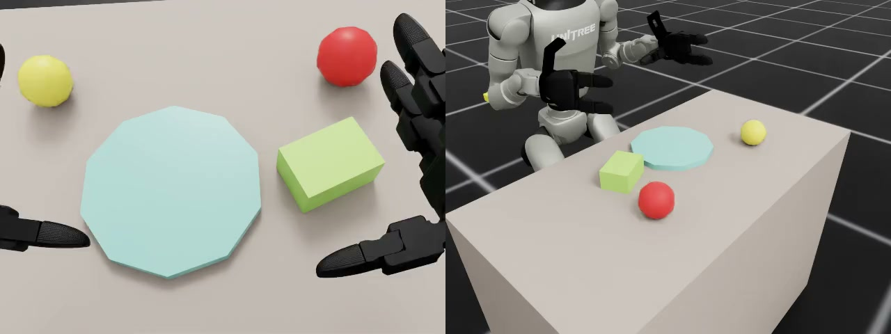
| Khung cảnh & vật thể | Chi tiết |
|---|---|
| Bàn | Bàn đơn giản trên nền lưới; ánh sáng dome 700 + sun 600 |
| Đĩa | Đĩa kinematic bán kính 0,115 m; episode 0 đặt tại (0,40; 0,08) m |
| Quả | 4 loại dạng khối đơn giản (táo, lê, khế, nho = khối xanh lá); ma sát 1,5 |
| Mục tiêu | Episode 0: nho tại (0,41; −0,12) m |
| Gây nhiễu | 2 quả đặt ngoài vùng quét của tay (episode 0: táo, lê) |
| Ngẫu nhiên hoá | Mỗi episode đổi quả mục tiêu, vị trí và hướng quả, vị trí đĩa, quả gây nhiễu; seed riêng |
| Robot, camera & điều khiển | Chi tiết |
|---|---|
| Robot | Unitree G1 29 bậc tự do + bàn tay Dex3, hông cố định tại (0; 0; ~0,74) m |
| Camera | RealSense D435 gắn đầu, 640×480 (fx 606) + 1 camera ngoài để quay |
| Tần số | Vật lý 200 Hz, 10 bước con → điều khiển 20 Hz |
| Episode | Tối đa 200 bước = 10 s; nhận chuỗi 16 bước, thực thi 8 rồi hỏi lại |
| Câu lệnh | Theo quả mục tiêu, vd. "Pick up the green grapes and place it on the plate" |
| Thành công | Quả được nhấc > 3 cm, nằm trên đĩa (trong bán kính + 1 cm, điểm thấp nhất cao hơn mặt bàn), quả gây nhiễu xê dịch ≤ 1 cm |
Mục tiêu kịch bản
Chuyển dữ liệu teleop của robot G1 thật vào mô phỏng (real2sim) để huấn luyện và đánh giá một model chọn đúng loại quả theo câu lệnh.
Có môi trường mô phỏng cho tác vụ vốn chỉ có dữ liệu robot thật.
Thay vật nhiễu, vị trí, ánh sáng mà không cần teleop thêm.
So sánh checkpoint và cấu hình huấn luyện trên cùng một thước đo.
Dữ liệu kịch bản
Dataset PhysicalAI-Robotics-GR00T-Teleop-G1 (NVIDIA GEAR, CC-BY-4.0): teleop robot G1 thật, camera RealSense 640×480, 20 Hz. Robot chọn đúng quả theo câu lệnh và đặt lên đĩa. Dữ liệu chỉ có góc khớp và video, không có vị trí vật thể.
| Loại quả | Episode | Frame |
|---|---|---|
| Táo | 311 | 29.864 |
| Nho | 233 | 26.970 |
| Lê | 264 | 32.319 |
| Khế | 287 | 34.640 |
| Tổng (card dataset ghi 1.000) | 1.095 | 123.793 |
Vấn đề gặp phải
Mục tiêu là một model gắp đúng quả theo câu lệnh. Trước khi tự tạo dữ liệu, dự án thử fine-tune trên các dataset có sẵn.
Checkpoint táo của kịch bản 1 với câu lệnh 4 loại quả đạt 0 %: model chỉ học một tác vụ trong một khung cảnh.
Rà soát các dataset công khai để fine-tune thử: không có bộ mô phỏng nào cho G1 + Dex3 gắp-đặt nhiều loại quả theo câu lệnh.
PhysicalAI-Robotics-GR00T-Teleop-G1: cùng robot G1, cùng gắp-đặt quả lên đĩa, nhưng ghi trên robot thật.
Chỉ có góc khớp và video, không có vị trí vật thể; ảnh thật không khớp với ảnh render; action trên robot thật và trong mô phỏng mang ý nghĩa khác nhau.
Phương pháp đề xuất
Giải quyết bằng real2sim: dùng quỹ đạo khớp của dữ liệu thật để dựng lại khung cảnh mô phỏng tương ứng, phát lại trong Isaac Lab và ghi thành dataset mô phỏng — giữ chuyển động thật của người teleop, nhưng ảnh và vật lý nhất quán với môi trường đánh giá.
- Tái tạo không dùng thị giác: giả định hai bàn chân phẳng trên sàn để suy ra góc nghiêng thân; phát hiện nắm/thả từ độ khép ngón tay; bộ FK viết riêng chỉ dùng numpy.
- Mô phỏng: G1 + Dex3 pelvis cố định, camera D435 theo thông số RealSense, vật lý 200 Hz / điều khiển 20 Hz, PD cứng cho tay, ma sát quả 1,5, đĩa cố định.
- Chấm điểm: quả nhấc > 3 cm; cuối cùng nằm trên đĩa; không vật nhiễu nào dịch > 1 cm.
- Chống rò rỉ dữ liệu: khung cảnh test không bao giờ có trong train; giữ lại 100 khung cảnh đánh giá kể cả khung cảnh phát lại thất bại để không thiên về khung cảnh dễ.
Ba cặp video thật ↔ mô phỏng. Camera đầu robot, 20 Hz: trái là video teleop gốc, phải là episode real2sim được phát lại từ chính quỹ đạo khớp đó. Hai episode dài bằng nhau nên chạy khớp từng khung; ảnh chờ của mỗi video là khung tiêu biểu của một pha (bắt đầu, nắm, đặt).
Quỹ đạo cánh tay, độ khép ngón, thời điểm nắm/thả giữ nguyên từ teleop; vị trí quả mục tiêu và đĩa khớp với ảnh thật; tay trái nghỉ cùng tư thế; câu lệnh giữ nguyên văn.
Quả là khối hình học đơn giản; đĩa, mặt bàn, ánh sáng là của mô phỏng; vật nhiễu trong ảnh thật bị bỏ và thay bằng 2 vật nhiễu ngẫu nhiên đặt an toàn; góc camera lệch nhẹ. Vì vậy model chỉ học trên ảnh render, không dùng ảnh thật.
| Tập | Episode | Frame | Ghi chú |
|---|---|---|---|
| Train | 790 | 86.822 | 4 loại quả, 20 Hz |
| Test | 89 | — | Khung cảnh không có trong train |
| Khung cảnh đánh giá | 100 | — | 30 táo, 24 lê, 26 khế, 20 nho |
Chu trình thực hiện
Dataset gốc là teleop trên robot G1 thật nên không chạy thẳng trong mô phỏng được: phải chuyển real2sim để có khung cảnh và dữ liệu mô phỏng tương ứng, fine-tune GR00T trên dữ liệu đó, rồi mới chạy vòng kín trong Isaac Sim.
| Bước | Việc làm | Notebook / công cụ | Kết quả |
|---|---|---|---|
| 1 | Tải dataset teleop 4 loại quả (táo, lê, khế, nho); thử checkpoint táo của kịch bản 1 | PhysicalAI-Robotics-GR00T-Teleop-G1 | Checkpoint táo dùng lại: 0 % |
| 2 | Động học thuận URDF → quỹ đạo bàn tay, thời điểm nắm/thả → vị trí quả và đĩa; đặt vật nhiễu ngoài vùng tay quét; phát lại action trong Isaac Lab, giữ episode thành công | g1_real2sim (urdf_fk, scene, distractors, isaac_scene) | Khung cảnh mô phỏng cho từng quỹ đạo thật |
| 3 | Gộp 4 loại quả thành một dataset đa nhiệm; chia train/test theo episode gốc; giữ 100 khung cảnh đánh giá | make_groot_dataset, lerobot_io | 790 / 86.822 frame train · 89 test |
| 4 | Fine-tune GR00T N1.7-3B, NEW_EMBODIMENT, 31 chiều state/action, horizon 16 bước @ 20 Hz, batch 32 | launch_finetune.py trên server H100 | g1_fruits_n17 · 2 giờ 34 phút · loss 1,50 → 0,019 |
| 5 | Dựng khung cảnh giống dataset, chọn câu lệnh, model tự gắp; chạy N episode với seed riêng | nb09_multi_object_task_pipeline, nb10_eval_multi_object | 66 %, không lần nào gắp nhầm quả |
Fine-tune
Theo hướng dẫn chính thức của NVIDIA (fine-tuning on sim data): GR00T N1.7-3B, NEW_EMBODIMENT, camera rs_view, 5 nhóm state/action (31 chiều), horizon 16 bước @ 20 Hz (0,8 s); batch 32 trên H100; đóng băng LLM, tune thị giác + projector + diffusion; color jitter (sáng 0,3 · tương phản 0,4 · bão hoà 0,5 · sắc 0,08).
Kết quả đạt được
Mỗi episode ngẫu nhiên hoá quả mục tiêu, vị trí/hướng quả, vị trí đĩa và quả gây nhiễu; seed riêng cho từng episode. Câu lệnh nguyên văn dataset (vd. "Pick up the green grapes and place it on the plate"). Nhận 16 bước, thực thi 8 rồi hỏi lại; tối đa 10 s. 50 episode, 0 lỗi kỹ thuật.
| Model | Thành công | Wilson 95 % | Nhấc được | Trên đĩa | Gắp nhầm |
|---|---|---|---|---|---|
| Fine-tune real2sim | 33/50 (66 %) | 52–78 % | 78 % | 76 % | 0 % |
| Checkpoint táo của Arena (đối chứng) | 0/50 (0 %) | 0–7 % | 0 % | 0 % | 0 % |
| Nhóm | n | Thành công | Tỉ lệ |
|---|---|---|---|
| Táo | 9 | 8 | 89 % |
| Nho | 13 | 9 | 69 % |
| Khế | 13 | 8 | 62 % |
| Lê | 15 | 8 | 53 % |
| Quả bên trái | 21 | 16 | 76 % |
| Quả bên phải | 29 | 17 | 59 % |
| Tổng | 50 | 33 | 66 % |
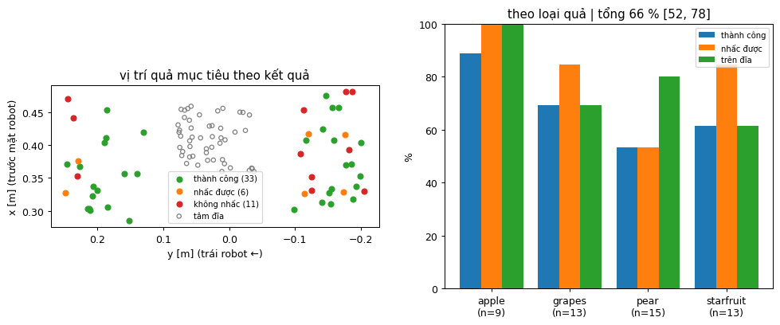
Không lần nào gắp nhầm dù luôn có quả khác trên bàn.
11/50 không nhấc được; lê có tỉ lệ nhấc thấp nhất (53 %).
Không phải N1.7 gốc chưa fine-tune; 0 % chỉ cho thấy không dùng lại được model tác vụ khác.
Phân tích kết quả
Theo dõi 50 episode của model fine-tune qua từng pha để thấy hao hụt nằm ở đâu.
| Pha (50 episode) | Số episode | Tỉ lệ |
|---|---|---|
| Nhấc được quả mục tiêu | 39 | 78 % |
| Nhấc được và quả nằm trên đĩa | 34 | 68 % |
| Thành công (không xê dịch vật nhiễu) | 33 | 66 % |
| Loại thất bại (17 lần) | Số lần | Biểu hiện |
|---|---|---|
| Không nhấc được | 11 | Nắm trượt hoặc không khép đủ tay; lê có tỉ lệ nhấc thấp nhất (53 %) |
| Nhấc nhưng không lên đĩa | 5 | Thả lệch đĩa; khế lên đĩa thấp nhất (62 %) dù nhấc được 85 % |
| Lên đĩa nhưng xê dịch vật nhiễu | 1 | Tay chạm quả gây nhiễu > 1 cm |
0 lần gắp nhầm trong 50 episode luôn có quả khác trên bàn: phần ngôn ngữ được học tốt từ dữ liệu real2sim.
11/17 thất bại là không nhấc được quả. Cải thiện tiếp nên tập trung vào dữ liệu nắm (hình dạng, ma sát từng loại quả).
Táo 89 %, nho 69 %, khế 62 %, lê 53 %; bên trái 76 %, bên phải 59 %. n nhỏ, khoảng tin cậy chồng nhau — chưa đủ kết luận.
Huấn luyện và đánh giá cùng trong mô phỏng: kết quả dùng để so sánh tương đối, không dự đoán hiệu năng trên robot thật.
Kết luận kịch bản
Từ dữ liệu teleop của robot G1 thật chỉ có góc khớp và video, dự án đã dựng được dataset mô phỏng bằng real2sim (790 episode) và fine-tune GR00T: từ 0 % với checkpoint táo dùng lại lên 66 % trên khung cảnh ngẫu nhiên có quả gây nhiễu, không lần nào gắp nhầm. Model đã hiểu câu lệnh; phần còn hao hụt chủ yếu nằm ở pha nắm.
- Xây dựng được quy trình real2sim chỉ từ dữ liệu khớp: động học thuận suy vị trí quả và đĩa, đặt vật nhiễu an toàn, phát lại và lọc tự động trong Isaac Lab.
- Fine-tune GR00T N1.7 trong 2 giờ 34 phút trên một H100; 11/17 thất bại là không nhấc được quả, lê có tỉ lệ nhấc thấp nhất.
- Kết quả chỉ dùng để so sánh tương đối trong mô phỏng: mô phỏng dễ hơn thực tế (PD cứng, ma sát cao, đĩa cố định), không dự đoán hiệu năng trên robot thật.
- Hướng tiếp theo: tăng dữ liệu rẻ bằng cách đổi bố cục vật nhiễu, ánh sáng, chất liệu rồi phát lại; bổ sung dữ liệu nắm theo hình dạng và ma sát từng loại quả.
G1 が指示文どおりの果物を選び、皿に置く。
テーブルには 4 種類の果物（リンゴ、洋ナシ、スターフルーツ、ブドウ）があり、指示文によってつかむ果物が決まります。実機 G1 の 1,095 件のテレオペ軌道から、本プロジェクトは関節データのみからシミュレーションシーンを再構築し（real2sim）、790 件の学習エピソードを生成して GR00T をファインチューニングしました。結果：流用したリンゴ用チェックポイントは 0 %、ファインチューニング後のモデルは妨害果物を含むランダムシーンで 66 %、誤った果物をつかんだ回数はゼロ。
- データ源Real2sim · 実機 G1
- フレーム86,822
- テストセット89 エピソード · 20 Hz
- 学習時間2 時間 34 分
- Batch · GPU32 · 1× H100
- Loss1.50 → 0.019
- チェックポイント
g1_fruits_n17 - 指示文果物 4 種類
- アクション列16 ステップ · 20 Hz
Video Showcase
シナリオ設定
G1 ロボットはテーブルの前に固定して立っています。テーブル上には皿 1 枚と果物 3 個があり、1 個が目標、残り 2 個が妨害物です。下の画像は Video Showcase のエピソード（エピソード 0：緑のブドウ）の最初のフレームです。
| シーン & 物体 | 詳細 |
|---|---|
| テーブル | グリッド床上のシンプルなテーブル。照明は dome 700 + sun 600 |
| 皿 | kinematic の皿、半径 0.115 m。エピソード 0 では (0.40; 0.08) m に配置 |
| 果物 | シンプルなブロック形状の 4 種類（リンゴ、洋ナシ、スターフルーツ、ブドウ = 緑のブロック）。摩擦 1.5 |
| 目標 | エピソード 0：ブドウ、(0.41; −0.12) m |
| 妨害物 | 手の掃引範囲外に置いた果物 2 個（エピソード 0：リンゴ、洋ナシ） |
| ランダム化 | エピソードごとに目標果物、果物の位置と向き、皿の位置、妨害果物を変更。seed は個別 |
| ロボット、カメラ & 制御 | 詳細 |
|---|---|
| ロボット | Unitree G1 29 自由度 + Dex3 ハンド、腰を (0; 0; ~0.74) m に固定 |
| カメラ | 頭部搭載 RealSense D435、640×480（fx 606）+ 撮影用外部カメラ 1 台 |
| 周波数 | 物理 200 Hz、10 サブステップ → 制御 20 Hz |
| エピソード | 最大 200 ステップ = 10 s。16 ステップのアクション列を受け取り、8 ステップ実行して再度問い合わせ |
| 指示文 | 目標果物に応じて決定。例："Pick up the green grapes and place it on the plate" |
| 成功条件 | 果物を 3 cm 超持ち上げ、皿の上にある（半径 + 1 cm 以内、最下点がテーブル面より上）、妨害果物の移動 ≤ 1 cm |
シナリオの目標
実機 G1 のテレオペデータをシミュレーションに移し（real2sim）、指示文どおりの果物を選ぶモデルを学習・評価します。
実機データしかなかったタスクにシミュレーション環境を用意。
追加のテレオペなしで妨害物、位置、照明を変更。
チェックポイントと学習構成を同一の尺度で比較。
シナリオのデータ
データセット PhysicalAI-Robotics-GR00T-Teleop-G1（NVIDIA GEAR、CC-BY-4.0）：実機 G1 のテレオペ、RealSense カメラ 640×480、20 Hz。ロボットが指示文どおりの果物を選び、皿に置きます。データは関節角と動画のみで、物体の位置は含まれません。
| 果物 | エピソード | フレーム |
|---|---|---|
| リンゴ | 311 | 29,864 |
| ブドウ | 233 | 26,970 |
| 洋ナシ | 264 | 32,319 |
| スターフルーツ | 287 | 34,640 |
| 合計（データセットカードの記載は 1,000） | 1,095 | 123,793 |
直面した課題
目標は指示文どおりの果物をつかむモデルです。独自にデータを作る前に、既存のデータセットでのファインチューニングを試しました。
シナリオ 1 のリンゴ用チェックポイントに果物 4 種類の指示文を与えると 0 % でした：モデルは 1 つのシーンで 1 つのタスクしか学習していません。
試験的なファインチューニング用に公開データセットを調査しましたが、G1 + Dex3 で指示文に応じて複数種類の果物をピック&プレースするシミュレーションデータは存在しません。
PhysicalAI-Robotics-GR00T-Teleop-G1：同じ G1 ロボット、同じく果物を皿にピック&プレースしますが、実機で記録されています。
関節角と動画のみで物体の位置がありません。実画像はレンダリング画像と一致せず、実機とシミュレーションでは action の意味が異なります。
提案手法
real2sim で解決します：実データの関節軌道から対応するシミュレーションシーンを再構築し、Isaac Lab で再生してシミュレーションデータセットとして記録します — テレオペ操作者の実際の動きを保ちつつ、画像と物理は評価環境と一致させます。
- 視覚を使わない再構築：両足が床に平らに接していると仮定して胴体の傾きを推定。指の閉じ具合から把持/解放を検出。FK は numpy のみで独自実装。
- シミュレーション：G1 + Dex3 で腰を固定、RealSense の仕様に合わせた D435 カメラ、物理 200 Hz / 制御 20 Hz、腕は剛な PD、果物の摩擦 1.5、皿は固定。
- 採点：果物を 3 cm 超持ち上げる、最終的に皿の上にある、どの妨害物も 1 cm 超動かない。
- データリーク防止：テストシーンは train に一切含めない。再生に失敗したシーンも含めて評価シーン 100 件を保持し、容易なシーンへの偏りを避ける。
実機 ↔ シミュレーションの動画 3 組。 ロボット頭部カメラ、20 Hz：左は元のテレオペ動画、右は同じ関節軌道から再生した real2sim エピソード。2 つのエピソードは長さが等しいためフレーム単位で同期して再生されます。各動画のポスター画像は 1 つのフェーズ（開始、把持、配置）の代表フレームです。
腕の軌道、指の閉じ具合、把持/解放のタイミングはテレオペのまま。目標果物と皿の位置は実画像と一致。左手は同じ姿勢で静止。指示文は原文のまま。
果物はシンプルな幾何ブロック。皿、天板、照明はシミュレーションのもの。実画像の妨害物は除外し、安全に配置したランダムな妨害物 2 個に置き換え。カメラ角度はわずかにずれる。このためモデルはレンダリング画像のみで学習し、実画像は使わない。
| セット | エピソード | フレーム | 備考 |
|---|---|---|---|
| Train | 790 | 86,822 | 果物 4 種類、20 Hz |
| Test | 89 | — | train に含まれないシーン |
| 評価シーン | 100 | — | リンゴ 30、洋ナシ 24、スターフルーツ 26、ブドウ 20 |
実施プロセス
元データセットは実機 G1 のテレオペであり、シミュレーションでそのまま実行できません：real2sim 変換で対応するシーンとシミュレーションデータを得て、そのデータで GR00T をファインチューニングし、その後に Isaac Sim で閉ループを実行します。
| ステップ | 作業内容 | Notebook / ツール | 結果 |
|---|---|---|---|
| 1 | 果物 4 種類（リンゴ、洋ナシ、スターフルーツ、ブドウ）のテレオペデータセットを取得。シナリオ 1 のリンゴ用チェックポイントを試験 | PhysicalAI-Robotics-GR00T-Teleop-G1 | 流用したリンゴ用チェックポイント：0 % |
| 2 | URDF 順運動学 → 手の軌道、把持/解放のタイミング → 果物と皿の位置。妨害物を手の掃引範囲外に配置。Isaac Lab で action を再生し、成功エピソードを保持 | g1_real2sim（urdf_fk、scene、distractors、isaac_scene） | 実軌道ごとのシミュレーションシーン |
| 3 | 果物 4 種類を 1 つのマルチタスクデータセットに統合。元エピソード単位で train/test を分割。評価シーン 100 件を保持 | make_groot_dataset、lerobot_io | train 790 / 86,822 フレーム · test 89 |
| 4 | GR00T N1.7-3B をファインチューニング、NEW_EMBODIMENT、state/action 31 次元、horizon 16 ステップ @ 20 Hz、batch 32 | H100 サーバー上の launch_finetune.py | g1_fruits_n17 · 2 時間 34 分 · loss 1.50 → 0.019 |
| 5 | データセットと同様のシーンを構築し、指示文を選択、モデルが自律的に把持。個別 seed で N エピソードを実行 | nb09_multi_object_task_pipeline、nb10_eval_multi_object | 66 %、誤った果物の把持はゼロ |
ファインチューニング
NVIDIA 公式ガイド（fine-tuning on sim data）に従いました：GR00T N1.7-3B、NEW_EMBODIMENT、カメラ rs_view、state/action 5 グループ（31 次元）、horizon 16 ステップ @ 20 Hz（0.8 s）。H100 で batch 32。LLM は凍結、視覚 + projector + diffusion を調整。color jitter（明るさ 0.3 · コントラスト 0.4 · 彩度 0.5 · 色相 0.08）。
得られた結果
各エピソードで目標果物、果物の位置/向き、皿の位置、妨害果物をランダム化し、エピソードごとに個別の seed を使用します。指示文はデータセットの原文です（例："Pick up the green grapes and place it on the plate"）。16 ステップを受け取り、8 ステップ実行して再度問い合わせ、最大 10 s です。50 エピソード、技術的エラーは 0 件でした。
| モデル | 成功 | Wilson 95 % | 持ち上げ | 皿の上 | 誤把持 |
|---|---|---|---|---|---|
| real2sim ファインチューニング | 33/50 (66 %) | 52–78 % | 78 % | 76 % | 0 % |
| Arena のリンゴ用チェックポイント（対照） | 0/50 (0 %) | 0–7 % | 0 % | 0 % | 0 % |
| グループ | n | 成功 | 成功率 |
|---|---|---|---|
| リンゴ | 9 | 8 | 89 % |
| ブドウ | 13 | 9 | 69 % |
| スターフルーツ | 13 | 8 | 62 % |
| 洋ナシ | 15 | 8 | 53 % |
| 左側の果物 | 21 | 16 | 76 % |
| 右側の果物 | 29 | 17 | 59 % |
| 合計 | 50 | 33 | 66 % |
テーブル上に常に他の果物があるにもかかわらず、誤った果物をつかんだ回数はゼロでした。
11/50 が持ち上げ失敗でした。洋ナシの持ち上げ率が最も低くなっています（53 %）。
ファインチューニング前の N1.7 そのものではありません。0 % は別タスクのモデルを流用できないことを示すにとどまります。
結果の分析
ファインチューニング後のモデルの 50 エピソードをフェーズごとに追跡し、どこで損失が生じるかを確認します。
| フェーズ（50 エピソード） | エピソード数 | 割合 |
|---|---|---|
| 目標果物を持ち上げ | 39 | 78 % |
| 持ち上げ、果物が皿の上 | 34 | 68 % |
| 成功（妨害物を動かさない） | 33 | 66 % |
| 失敗の種類（17 件） | 件数 | 症状 |
|---|---|---|
| 持ち上げ失敗 | 11 | 把持が滑る、または手が十分に閉じない。洋ナシの持ち上げ率が最も低い（53 %） |
| 持ち上げたが皿に載らない | 5 | 皿から外れて解放。スターフルーツは持ち上げ 85 % にもかかわらず皿に載る率が最も低い（62 %） |
| 皿に載ったが妨害物が移動 | 1 | 手が妨害果物に触れ 1 cm 超移動 |
常に他の果物がある 50 エピソードで誤把持 0 件：言語部分は real2sim データからよく学習されています。
失敗 17 件中 11 件は果物を持ち上げられなかったものです。今後の改善は把持データ（果物ごとの形状、摩擦）に注力すべきです。
リンゴ 89 %、ブドウ 69 %、スターフルーツ 62 %、洋ナシ 53 %。左側 76 %、右側 59 %。n が小さく信頼区間が重なるため、結論には不十分です。
学習と評価はいずれもシミュレーション内：結果は相対比較のためのものであり、実機での性能を予測するものではありません。
シナリオの結論
関節角と動画しかない実機 G1 のテレオペデータから、本プロジェクトはreal2sim によりシミュレーションデータセットを構築し（790 エピソード）、GR00T をファインチューニングしました：流用したリンゴ用チェックポイントの 0 % から、妨害果物を含むランダムシーンで 66 % に向上し、誤った果物をつかんだ回数はゼロでした。モデルは指示文を理解しており、残る損失は主に把持フェーズにあります。
- 関節データのみからの real2sim パイプラインを構築：順運動学で果物と皿の位置を推定し、妨害物を安全に配置、Isaac Lab で再生とフィルタを自動実行。
- H100 1 枚で GR00T N1.7 を 2 時間 34 分でファインチューニング。失敗 17 件中 11 件は果物を持ち上げられなかったもので、洋ナシの持ち上げ率が最も低い。
- 結果はシミュレーション内での相対比較にのみ用いる：シミュレーションは現実より容易（剛な PD、高い摩擦、固定された皿）であり、実機での性能は予測しない。
- 今後の方向性：妨害物の配置、照明、材質を変えて再生することで安価にデータを増やし、果物ごとの形状と摩擦に応じた把持データを追加する。
G1 picks the fruit named in the instruction and places it on the plate.
The table holds 4 kinds of fruit (apple, pear, star fruit, grapes); the instruction decides which fruit to pick. From 1,095 teleop trajectories on the real G1 robot, the project reconstructs the simulated scene from joint data alone (real2sim), generates 790 training episodes and fine-tunes GR00T. Results: the reused apple checkpoint reaches 0 %; the fine-tuned model reaches 66 % on randomized scenes with distractor fruit and never picks the wrong fruit.
- SourceReal2sim · real G1
- Frames86,822
- Test set89 episodes · 20 Hz
- Time2 h 34 min
- Batch · GPU32 · 1× H100
- Loss1.50 → 0.019
- Checkpoint
g1_fruits_n17 - Instructions4 kinds of fruit
- Action chunk16 steps · 20 Hz
Video Showcase
Scenario setting
The G1 robot stands fixed in front of a table; on the table are a plate and three fruit, one of which is the target while the other two are distractors. The image below is the first frame of the episode shown in the Video Showcase (episode 0: green grapes).
| Scene & objects | Details |
|---|---|
| Table | Simple table on a grid floor; dome light 700 + sun 600 |
| Plate | Kinematic plate, radius 0.115 m; in episode 0 placed at (0.40; 0.08) m |
| Fruit | 4 kinds as simple blocks (apple, pear, star fruit, grapes = green block); friction 1.5 |
| Target | Episode 0: grapes at (0.41; −0.12) m |
| Distractors | 2 fruit placed outside the hand's sweep area (episode 0: apple, pear) |
| Randomization | Each episode changes the target fruit, fruit position and orientation, plate position and distractor fruit; separate seed |
| Robot, camera & control | Details |
|---|---|
| Robot | Unitree G1 29 DoF + Dex3 hands, pelvis fixed at (0; 0; ~0.74) m |
| Camera | Head-mounted RealSense D435, 640×480 (fx 606) + 1 external camera for recording |
| Rate | Physics 200 Hz, 10 substeps → control 20 Hz |
| Episode | Up to 200 steps = 10 s; receives a 16-step chunk, executes 8, then queries again |
| Instruction | Depends on the target fruit, e.g. "Pick up the green grapes and place it on the plate" |
| Success | Fruit lifted > 3 cm, lying on the plate (within radius + 1 cm, lowest point above the table surface), distractor fruit moved ≤ 1 cm |
Scenario goals
Bring teleop data from the real G1 robot into simulation (real2sim) to train and evaluate a model that picks the fruit named in the instruction.
A simulation environment for a task that previously had only real-robot data.
Change distractors, positions and lighting without additional teleop.
Compare checkpoints and training configurations on the same yardstick.
Scenario data
Dataset PhysicalAI-Robotics-GR00T-Teleop-G1 (NVIDIA GEAR, CC-BY-4.0): teleop on the real G1 robot, RealSense camera 640×480, 20 Hz. The robot picks the fruit named in the instruction and places it on the plate. The data contains only joint angles and video, no object positions.
| Fruit | Episodes | Frames |
|---|---|---|
| Apple | 311 | 29,864 |
| Grapes | 233 | 26,970 |
| Pear | 264 | 32,319 |
| Star fruit | 287 | 34,640 |
| Total (dataset card states 1,000) | 1,095 | 123,793 |
Problems encountered
The goal is a model that picks the fruit named in the instruction. Before creating its own data, the project tried fine-tuning on existing datasets.
The apple checkpoint from scenario 1 with the 4-fruit instructions reaches 0 %: the model learned only one task in one scene.
Public datasets were reviewed for trial fine-tuning: no simulated set exists for G1 + Dex3 pick-and-place of multiple fruit by instruction.
PhysicalAI-Robotics-GR00T-Teleop-G1: same G1 robot, same pick-and-place of fruit onto a plate, but recorded on the real robot.
Only joint angles and video, no object positions; real images do not match rendered images; actions on the real robot and in simulation have different meanings.
Proposed method
Solved with real2sim: use the joint trajectories of the real data to rebuild the corresponding simulated scene, replay it in Isaac Lab and record it as a simulation dataset — keeping the real motion of the teleoperator while images and physics stay consistent with the evaluation environment.
- Vision-free reconstruction: assume both feet are flat on the floor to infer the torso tilt; detect grasp/release from finger closure; custom FK written with numpy only.
- Simulation: G1 + Dex3 with fixed pelvis, D435 camera with RealSense parameters, physics 200 Hz / control 20 Hz, stiff PD for the arms, fruit friction 1.5, fixed plate.
- Scoring: fruit lifted > 3 cm; finally lying on the plate; no distractor moved > 1 cm.
- Data-leakage prevention: test scenes never appear in train; 100 evaluation scenes are kept, including scenes whose replay failed, so as not to bias toward easy scenes.
Three real ↔ simulation video pairs. Robot head camera, 20 Hz: left is the original teleop video, right is the real2sim episode replayed from the same joint trajectory. Both episodes have the same length, so they run frame by frame in sync; the poster of each video is a representative frame of one phase (start, grasp, place).
Arm trajectory, finger closure and grasp/release timing are kept from teleop; target fruit and plate positions match the real image; the left hand rests in the same pose; the instruction is kept verbatim.
Fruit are simple geometric blocks; plate, table top and lighting come from the simulation; distractors in the real image are dropped and replaced by 2 random, safely placed distractors; the camera angle is slightly off. Therefore the model learns only on rendered images, not on real images.
| Split | Episodes | Frames | Notes |
|---|---|---|---|
| Train | 790 | 86,822 | 4 kinds of fruit, 20 Hz |
| Test | 89 | — | Scenes not in train |
| Evaluation scenes | 100 | — | 30 apple, 24 pear, 26 star fruit, 20 grapes |
Workflow
The source dataset is teleop on the real G1 robot, so it cannot run directly in simulation: it must be converted via real2sim to obtain the corresponding scenes and simulation data, then GR00T is fine-tuned on that data, and only then is the closed loop run in Isaac Sim.
| Step | Work | Notebook / tool | Result |
|---|---|---|---|
| 1 | Download the 4-fruit teleop dataset (apple, pear, star fruit, grapes); try the apple checkpoint from scenario 1 | PhysicalAI-Robotics-GR00T-Teleop-G1 | Reused apple checkpoint: 0 % |
| 2 | URDF forward kinematics → hand trajectory, grasp/release timing → fruit and plate positions; place distractors outside the hand's sweep; replay actions in Isaac Lab, keep successful episodes | g1_real2sim (urdf_fk, scene, distractors, isaac_scene) | A simulated scene for each real trajectory |
| 3 | Merge the 4 fruit into one multi-task dataset; split train/test by source episode; keep 100 evaluation scenes | make_groot_dataset, lerobot_io | 790 / 86,822 frames train · 89 test |
| 4 | Fine-tune GR00T N1.7-3B, NEW_EMBODIMENT, 31-dim state/action, horizon 16 steps @ 20 Hz, batch 32 | launch_finetune.py on the H100 server | g1_fruits_n17 · 2 h 34 min · loss 1.50 → 0.019 |
| 5 | Build scenes like the dataset, choose an instruction, the model picks on its own; run N episodes with separate seeds | nb09_multi_object_task_pipeline, nb10_eval_multi_object | 66 %, never picked the wrong fruit |
Fine-tune
Following NVIDIA's official guide (fine-tuning on sim data): GR00T N1.7-3B, NEW_EMBODIMENT, camera rs_view, 5 state/action groups (31 dims), horizon 16 steps @ 20 Hz (0.8 s); batch 32 on H100; LLM frozen, vision + projector + diffusion tuned; color jitter (brightness 0.3 · contrast 0.4 · saturation 0.5 · hue 0.08).
Results
Each episode randomizes the target fruit, fruit position/orientation, plate position and distractor fruit; a separate seed per episode. Instructions verbatim from the dataset (e.g. "Pick up the green grapes and place it on the plate"). Receives 16 steps, executes 8, then queries again; up to 10 s. 50 episodes, 0 technical errors.
| Model | Success | Wilson 95 % | Lifted | On plate | Wrong pick |
|---|---|---|---|---|---|
| Real2sim fine-tune | 33/50 (66 %) | 52–78 % | 78 % | 76 % | 0 % |
| Arena apple checkpoint (baseline) | 0/50 (0 %) | 0–7 % | 0 % | 0 % | 0 % |
| Group | n | Success | Rate |
|---|---|---|---|
| Apple | 9 | 8 | 89 % |
| Grapes | 13 | 9 | 69 % |
| Star fruit | 13 | 8 | 62 % |
| Pear | 15 | 8 | 53 % |
| Fruit on the left | 21 | 16 | 76 % |
| Fruit on the right | 29 | 17 | 59 % |
| Total | 50 | 33 | 66 % |
Never picked the wrong fruit even though other fruit are always on the table.
11/50 not lifted; the pear has the lowest lift rate (53 %).
Not the original N1.7 without fine-tuning; 0 % only shows that a model for a different task cannot be reused.
Result analysis
The 50 episodes of the fine-tuned model are tracked through each phase to see where the losses occur.
| Phase (50 episodes) | Episodes | Rate |
|---|---|---|
| Target fruit lifted | 39 | 78 % |
| Lifted and fruit placed on the plate | 34 | 68 % |
| Success (distractors not moved) | 33 | 66 % |
| Failure type (17 cases) | Count | Symptom |
|---|---|---|
| Not lifted | 11 | Grasp slips or the hand does not close enough; the pear has the lowest lift rate (53 %) |
| Lifted but not on the plate | 5 | Released off the plate; the star fruit has the lowest on-plate rate (62 %) despite an 85 % lift rate |
| On the plate but distractor moved | 1 | Hand touched a distractor fruit > 1 cm |
0 wrong picks in 50 episodes that always have other fruit on the table: the language part is learned well from the real2sim data.
11/17 failures are failures to lift the fruit. Further improvement should focus on grasp data (shape, friction of each fruit).
Apple 89 %, grapes 69 %, star fruit 62 %, pear 53 %; left 76 %, right 59 %. Small n, overlapping confidence intervals — not enough to conclude.
Training and evaluation both in simulation: the results serve for relative comparison and do not predict performance on the real robot.
Scenario conclusion
From teleop data of the real G1 robot containing only joint angles and video, the project built a simulation dataset with real2sim (790 episodes) and fine-tuned GR00T: from 0 % with the reused apple checkpoint to 66 % on randomized scenes with distractor fruit, never picking the wrong fruit. The model understands the instruction; the remaining losses lie mainly in the grasp phase.
- Built a real2sim pipeline from joint data alone: forward kinematics infers fruit and plate positions, distractors are placed safely, and replay and filtering run automatically in Isaac Lab.
- Fine-tuned GR00T N1.7 in 2 h 34 min on one H100; 11/17 failures are failures to lift the fruit, with the pear having the lowest lift rate.
- The results are only for relative comparison in simulation: simulation is easier than reality (stiff PD, high friction, fixed plate) and does not predict performance on the real robot.
- Next steps: increase cheap data by changing distractor layout, lighting and materials and replaying; add grasp data by shape and friction of each fruit.
Robot G1 gắp búa trên kệ, thả vào thùng.
Tác vụ hoàn toàn mới do dự án tự xây dựng: tay trái nắm cán búa, nhấc qua thành thùng, thả vào giữa thùng và rút tay. Khó hơn quả táo vì búa dài, mỏng, sát mặt kệ và dễ gác lên mép thùng. Dự án dựng môi trường, thu 100 demo teleop bằng kính Meta Quest, sinh thêm demo và fine-tune GR00T (~1 giờ trên 1 H100) — trọn chu trình trong khoảng 6 ngày. Kết quả: chưa tune 0 % → 200 episode 66 % → 400 episode 63 % → nới ngưỡng đứng yên 73 %.
- NguồnTeleop + sinh thêm
- Frame28.022 · 54.541
- Tần số50 Hz
- Thời gian61 phút · 2 giờ 15
- Batch · GPU32 · 1× H100
- Loss cuối0,020 · 0,019
- mix200
hammer_mix200_n17 - mix400
hammer_mix400_n17 - Chuỗi action40 bước · 50 Hz
Video Showcase
Bối cảnh kịch bản
Robot G1 đứng trước kệ trong phòng lab Galileo; chiếc búa nằm bên trái, đầu búa kê lên một khối nhỏ, thùng nhựa đỏ ở bên phải. Ảnh dưới là khung đầu tiên của episode trong Video Showcase.
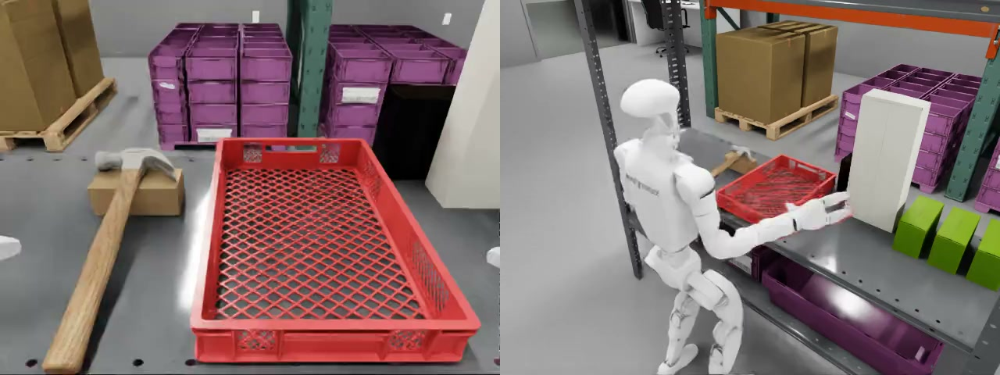
| Khung cảnh & vật thể | Chi tiết |
|---|---|
| Nền | Phòng lab Galileo; ẩn thêm các hộp shield_controller_box_02, jetson_orin_05, jetson_orin_07 để tay không va chạm (khe hở ≥ 2 cm) |
| Búa | hammer_2_handal_robolab 33 × 13 × 3 cm tại (0,63; 0,25) m, yaw 0; đầu búa tựa lên khối kê 5 cm (nghiêng ~10°) để dễ nắm cán |
| Thùng | red_container tỉ lệ 0,65 → 40 × 27 × 5,9 cm tại (0,68; 0,00) m |
| Khoảng cách | Búa cách mép thùng 5,1 cm |
| Robot, camera & điều khiển | Chi tiết |
|---|---|
| Robot | Unitree G1 + Dex3 tại (0,25; 0,08) m; tay trái nắm cán, nhấc qua thành thùng cao 5,9 cm, dịch sang phải ~25 cm rồi thả |
| Camera | Camera đầu robot (ảnh model nhận vào) + 1 camera ngoài để quay |
| Tần số | Điều khiển 50 Hz; mỗi lần gọi model trả về chuỗi 40 bước |
| Episode | Tối đa 300 bước = 6 s |
| Câu lệnh | "put the hammer in the bin" |
| Thành công | Tâm búa cách tâm thùng ≤ 10 cm và thấp hơn thành; búa đứng yên (< 0,01 m/s, < 0,1 rad/s — sau nới lên 0,02 m/s); tay đã buông (22 khâu tay ≤ 0,01 N); giữ liên tục 10 bước |
Mục tiêu kịch bản
Kịch bản kiểm chứng năng lực dạy robot một tác vụ mới từ đầu bằng công cụ và dữ liệu do dự án tự xây dựng.
Tự đặt ra một tác vụ chưa có dữ liệu hay model sẵn: gắp búa trên kệ, thả vào thùng.
Đi hết các khâu: dựng môi trường, teleop thu demo, tăng cường dữ liệu, fine-tune, đánh giá.
Biết cần bao nhiêu dữ liệu, thời gian huấn luyện, và mỗi cải tiến đóng góp bao nhiêu vào tỉ lệ thành công.
Dữ liệu kịch bản
Kịch bản mới nên không có dataset sẵn: dự án tự thu demo bằng teleop kính Meta Quest trong Isaac Lab, 50 Hz, rồi bổ sung demo sinh thêm (card 6). Mọi demo đều được chạy lại với điều kiện thành công chặt trước khi đưa vào huấn luyện.
| Dataset hammer_to_bin | Giá trị |
|---|---|
| Nguồn | Teleop kính Meta Quest trong Isaac Lab, 50 Hz; 100 demo thật đầu tiên thu trong 10 phiên |
| Demo thật | ~13.700 bước; búa nhấc trung bình 10,6 cm; tâm búa cuối cách tâm thùng 3,7 cm (tối đa 8,4 cm) |
| Bộ mix200 | 200 episode (100 thật + 100 tăng cường), 28.022 frame (~9,3 phút), LeRobot v2.1, 131 MB |
| Bộ mix400 | 400 episode (mix200 + 200 demo teleop mới), 54.541 frame (~18 phút) |
| Câu lệnh | "put the hammer in the bin" |
| Kiểm tra | Toàn bộ demo thành công; với mix200: búa nhấc tối thiểu 6,4 cm, khoảng cách cuối trung bình 3,8 cm |
Vấn đề gặp phải
Tác vụ búa → thùng hoàn toàn mới: không có dữ liệu, không có model, không có khung cảnh sẵn. Khó khăn lớn nhất nằm ở việc có đủ dữ liệu tốt để fine-tune.
Không có dataset hay checkpoint nào cho tác vụ gắp búa đặt vào thùng trên G1; model gốc chưa fine-tune không làm được tác vụ.
Người điều khiển đeo kính Meta Quest thao tác từng demo; mỗi phiên chỉ được khoảng 10 demo, cần nhiều phiên mới đủ dữ liệu.
Tay robot đứng im khi mất tín hiệu tay cầm, giật lag từ lượt thứ 2; nhiều lượt phải bỏ và làm lại.
Có demo được chấm thành công khi búa còn gác lên thành thùng hoặc tay chưa buông; demo hỏng lẫn vào dữ liệu làm model học sai.
Phương pháp đề xuất
Giải quyết bằng sinh thêm dữ liệu: từ các demo teleop thật, tự động tạo demo mới theo kiểu MimicGen, chạy lại trong mô phỏng và chỉ giữ demo đạt điều kiện thành công chặt. Cách này nhân dữ liệu mà không tốn thêm giờ teleop, và mọi demo đưa vào huấn luyện đều đã được kiểm tra.
Lấy demo thật làm khuôn (60 khuôn khác nhau); co giãn thời gian ×0,85–1,2; dịch điểm xuất phát (σ 1 cm), gắp (σ 4 mm), thả (±1–1,2 cm), nối bằng quỹ đạo min-jerk; thêm rung tay 0,2–0,6 mm.
Mỗi demo sinh ra được chạy lại trong mô phỏng với điều kiện thành công chặt; 100 trên 133 lượt đạt và được đưa vào bộ mix200.
| Chỉ số | Tăng cường | Thật |
|---|---|---|
| Độ dài episode (bước) | 145 | 137 |
| Độ nâng búa | 10,5 cm | 10,6 cm |
| Khoảng cách tới tâm thùng, trung bình | 4,0 cm | 3,7 cm |
| Khoảng cách tới tâm thùng, tối đa | 8,0 cm | 8,4 cm |
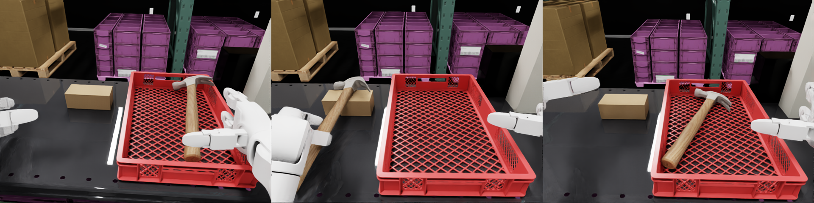
Chu trình thực hiện
Kịch bản mới hoàn toàn: không có dữ liệu hay model sẵn. Dự án dựng môi trường, tự tạo dữ liệu bằng teleop, chạy tăng cường để nhân dữ liệu, fine-tune GR00T, rồi mới chạy và đánh giá vòng kín.
| Bước | Việc làm | Notebook / công cụ | Kết quả |
|---|---|---|---|
| 1 | Chọn búa, thùng; đặt búa tựa khối kê 5 cm; ẩn hộp nền vướng tay; viết điều kiện thành công chặt | Isaac Lab Arena, hammer_to_bin/scripts | Bố trí cuối, khe hở ≥ 2 cm |
| 2 | Thu demo bằng kính Meta Quest với preset và công cụ chẩn đoán teleop; chạy lại từng demo với điều kiện chặt | teleop_kit, record_demos.sh | 100 demo thật (10 phiên), sau thêm 200 demo |
| 3 | Biến đổi demo khuôn (thời gian, điểm gắp/thả, rung tay), chạy lại và lọc | gen_scripted_demos.py | 100 demo tăng cường → bộ mix200 |
| 4 | Fine-tune GR00T N1.7-3B; LLM đóng băng, tune thị giác + projector + diffusion | Server H100 | mix200: 61 phút · mix400: 2 giờ 15 phút |
| 5 | Chạy vòng kín N episode, phân loại thất bại, quay video | Arena eval, nb11_hammer_to_bin, nb12_eval_hammer_to_bin | 0 % gốc → 66 % → 63 % → 73 % |
Fine-tune
| Bước | 10 | 500 | 1.000 | 2.000 | 4.000 | 6.000 | 8.000 | 10.000 |
|---|---|---|---|---|---|---|---|---|
| Loss | 1,270 | 0,222 | 0,108 | 0,064 | 0,045 | 0,031 | 0,023 | 0,020 |
Kết quả đạt được
Số liệu đo được qua chu trình teleop → tăng cường → fine-tune → đánh giá, trong Isaac Sim local (điều kiện inside: tâm búa trong lòng thùng, đứng yên, đã buông).
| Bước | Số liệu đo được |
|---|---|
| Teleop | 100 demo thật (10 phiên, ~13.700 bước); sau thêm 200 demo |
| Tăng cường | 133 lượt sinh → 100 demo đạt điều kiện chặt |
| Dataset | mix200: 200 episode, 28.022 frame · mix400: 400 episode, 54.541 frame |
| Fine-tune | mix200: 10k bước, 61 phút, loss 0,020 · mix400: 20k bước, 2 giờ 15 phút, loss 0,019 |
| Local · mix200 | 66/100; nhấc ≥ 3 cm 95/100; khoảng cách cuối trung vị 6,1 cm |
| Local · mix400 | 63/100; nhấc ≥ 3 cm 94/100; khoảng cách cuối trung vị 4,4 cm |
| Local · mix400, ngưỡng 0,02 | 73/100; nhấc ≥ 3 cm 91/100; thành công trung bình 2,5 s |
Phân tích kết quả
Phân loại kết quả của ba lần chạy 100 episode trên Isaac Sim local để thấy thêm dữ liệu và nới ngưỡng thay đổi điều gì.
| Kết quả (100 episode) | mix200 | mix400 | mix400 · đếm thủ công | mix400 · ngưỡng 0,02 |
|---|---|---|---|---|
| Thành công | 66 | 63 | 87 | 73 |
| Tâm búa ngoài lòng thùng | 19 | 5 | – | 6 |
| Búa chưa đứng yên khi hết giờ | 6 | 22 | – | 8 |
| Búa gác trên miệng thùng | 3 | 4 | – | 4 |
| Không nhấc được (< 1 cm) | 3 | 4 | – | 3 |
| Robot ngã | 2 | 2 | – | 6 |
| Chưa buông tay | 1 | 0 | – | 0 |
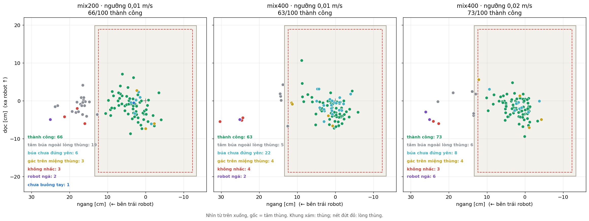
91–95/100 lần nhấc búa ≥ 3 cm ở cả ba lần chạy; chỉ 3–4 lần không nhấc được. Hao hụt chủ yếu ở pha thả.
mix400 giảm số lần búa rơi ngoài lòng thùng từ 19 xuống 5, khoảng cách cuối trung vị từ 6,1 xuống 4,4 cm.
Ảnh giữa cho thấy với mix400 (ngưỡng 0,01 m/s), cả 22 lần thất bại "chưa đứng yên" đều nằm trong lòng thùng và robot đã buông tay. Các điểm này còn gần tâm thùng hơn các lần thành công (trung vị 2,9 cm so với 4,3 cm). Búa chỉ còn chuyển động chậm tới hết 6 s (vận tốc cuối 0,005–0,023 m/s, quay 0,04–0,32 rad/s), nên chưa lần nào đạt điều kiện đứng yên. Đây là thất bại do cách chấm điểm hơn là do đặt sai chỗ. Ở lần chạy với ngưỡng 0,02 m/s (ảnh phải), nhóm này còn 8 và tỉ lệ lên 73 %.
Điều kiện đứng yên (giữ nguyên từ Arena) chỉ xét vận tốc tức thời của búa tại từng bước mô phỏng: phải đồng thời dưới 0,01 m/s và 0,1 rad/s. Cả 22 búa này đều nằm trong lòng thùng và tay đã buông; video các episode đã xem không thấy búa trôi. Nếu búa thật sự di chuyển với vận tốc đo được (0,5–2,3 cm/s) suốt khoảng 3,5 s từ lúc tới tâm thùng đến hết giờ, nó phải trôi xa nhiều centimet; thực tế khoảng cách tới tâm thùng lúc cuối chỉ lệch trung vị 1,2 cm so với lúc gần tâm nhất. Nghĩa là búa chủ yếu rung tại chỗ: mô phỏng vật lý không đưa vận tốc về đúng 0 khi búa nằm trên đáy lưới của thùng (12/22 búa nằm phẳng trên đáy, so với 8/63 lần thành công), và thùng cũng là vật thể động đặt trên kệ. Dao động nhỏ này vượt ngưỡng 0,01 m/s, nên ngưỡng tức thời quá chặt so với độ nhiễu của mô phỏng; cách chấm hợp lý hơn là xét búa có dịch chuyển trong một khoảng thời gian (ví dụ 0,5 s) hay không.
Lần chạy 73 % có 6 lần robot ngã, so với 2 ở hai lần chạy kia. Cả 6 lần đều xảy ra ngay đầu episode, trong 0,02–0,78 s (tối đa 39/300 bước), khi tay chưa chạm tới búa: búa vẫn nằm nguyên trên kệ, cách tâm thùng 25,6 cm. Lúc đó model gần như chưa kịp điều khiển, còn ngưỡng đứng yên chỉ dùng để chấm điểm cuối episode nên không ảnh hưởng tới việc ngã. Dấu hiệu này khớp với lỗi reset đã ghi nhận trong nb12: khi episode trước kết thúc với tay và thân ở xa tư thế mặc định, reset chưa xoá hết trạng thái cũ (hông còn gập, khớp còn vận tốc), và robot bước hoặc ngã ngay ở tick đầu. Ngay cả khi reset hai lần, phát lại 20 demo vẫn có 2/20 lần khởi đầu hỏng. Chênh lệch 6 so với 2 chưa có ý nghĩa thống kê (Fisher p = 0,28); tính chung ba lần chạy là 10/300 episode (≈ 3 %). Nếu bỏ các lần ngã này, lần chạy 73 % đạt 73/94 ≈ 78 %. Cần sửa khâu reset (ví dụ kiểm tra tư thế và vận tốc khớp trước khi bắt đầu episode) để loại nhiễu này khỏi đánh giá.
Kết luận kịch bản
Dự án đã tự dạy G1 một tác vụ hoàn toàn mới: từ 0 % khi chưa tune lên 66 % chỉ với 200 episode (100 teleop + 100 sinh thêm) và ~1 giờ fine-tune trên một H100, trọn chu trình trong khoảng 6 ngày. Pha nắm và nhấc đã ổn; phần còn hao hụt nằm ở pha thả búa vào thùng và ở cách chấm điểm.
- Đi hết chu trình bằng công cụ tự xây dựng: dựng môi trường, teleop thu demo, sinh thêm dữ liệu, fine-tune, đánh giá.
- Sinh thêm demo giúp nhân dữ liệu mà không tốn thêm giờ teleop (133 lượt sinh → 100 demo đạt điều kiện chặt).
- Gấp đôi dữ liệu (mix400) giúp đặt búa chính xác hơn (ngoài lòng thùng 19 → 5 lần) nhưng tỉ lệ chung chưa tăng (63 %); với ngưỡng đứng yên 0,02 đạt 73 %.
- Chưa xử lý: đổi cách chấm "đứng yên" sang xét dịch chuyển của búa trong một khoảng thời gian thay vì vận tốc tức thời; sửa khâu reset gây ngã đầu episode (≈ 3 % số episode).
G1 が棚の上のハンマーをつかみ、箱に入れる。
本プロジェクトで新たに設計したタスクです。左手でハンマーの柄をつかみ、箱の縁を越えて持ち上げ、箱の中央に置いて手を離します。ハンマーは長く薄く、棚の面に近いためリンゴより難しく、箱の縁に引っかかりやすいのが特徴です。環境を構築し、Meta Quest ヘッドセットで 100 件のテレオペデモを収集、デモを追加生成して GR00T をファインチューニングしました（H100 1 枚で約 1 時間）。全工程は約 6 日間です。結果：未調整 0 % → 200 エピソード 66 % → 400 エピソード 63 % → 静止しきい値を緩和 73 %。
- データ源テレオペ + 生成
- フレーム28,022 · 54,541
- 周波数50 Hz
- 学習時間61 分 · 2 時間 15 分
- Batch · GPU32 · 1× H100
- 最終 loss0.020 · 0.019
- mix200
hammer_mix200_n17 - mix400
hammer_mix400_n17 - アクション列40 ステップ · 50 Hz
Video Showcase
シナリオの状況
G1 ロボットは Galileo ラボの棚の前に立っています。ハンマーは左側にあり、ヘッドが小さなブロックの上に載っています。赤いプラスチック箱は右側にあります。下の画像は Video Showcase のエピソードの最初のフレームです。
| シーンと物体 | 詳細 |
|---|---|
| 背景 | Galileo ラボ。手が衝突しないよう shield_controller_box_02、jetson_orin_05、jetson_orin_07 の箱を非表示（隙間 ≥ 2 cm） |
| ハンマー | hammer_2_handal_robolab 33 × 13 × 3 cm、位置 (0.63, 0.25) m、yaw 0。柄をつかみやすいようヘッドを 5 cm のブロックに載せる（約 10° 傾斜） |
| 箱 | red_container 縮尺 0.65 → 40 × 27 × 5.9 cm、位置 (0.68, 0.00) m |
| 距離 | ハンマーと箱の縁の距離 5.1 cm |
| ロボット・カメラ・制御 | 詳細 |
|---|---|
| ロボット | Unitree G1 + Dex3、位置 (0.25, 0.08) m。左手で柄をつかみ、高さ 5.9 cm の箱の縁を越えて持ち上げ、右へ約 25 cm 移動して離す |
| カメラ | ロボット頭部カメラ（モデル入力）+ 撮影用の外部カメラ 1 台 |
| 周波数 | 制御 50 Hz。モデル呼び出し 1 回につき 40 ステップのアクション列を返す |
| エピソード | 最大 300 ステップ = 6 s |
| 指示文 | "put the hammer in the bin" |
| 成功条件 | ハンマー中心が箱中心から 10 cm 以内かつ縁より低い。ハンマーが静止（< 0.01 m/s、< 0.1 rad/s — のちに 0.02 m/s へ緩和）。手を離している（手の 22 リンクすべて ≤ 0.01 N）。10 ステップ連続で維持 |
シナリオの目標
このシナリオでは、プロジェクトが自ら構築したツールとデータでロボットに新しいタスクをゼロから教える能力を検証します。
既存のデータもモデルもないタスクを自ら設定する：棚のハンマーをつかみ、箱に入れる。
環境構築、テレオペによるデモ収集、データ拡張、ファインチューニング、評価のすべての工程を実施する。
必要なデータ量と学習時間、そして各改善が成功率にどれだけ寄与するかを把握する。
シナリオのデータ
新しいシナリオのため既存のデータセットはありません。Isaac Lab 上で Meta Quest ヘッドセットによるテレオペ（50 Hz）でデモを自ら収集し、生成デモ（カード 6）を追加しました。すべてのデモは学習に使う前に厳格な成功条件で再生・確認しています。
| データセット hammer_to_bin | 値 |
|---|---|
| データ源 | Isaac Lab 上の Meta Quest テレオペ、50 Hz。最初の実デモ 100 件を 10 セッションで収集 |
| 実デモ | 約 13,700 ステップ。ハンマーの平均持ち上げ高さ 10.6 cm。最終時のハンマー中心と箱中心の距離 3.7 cm（最大 8.4 cm） |
| mix200 | 200 エピソード（実 100 + 拡張 100）、28,022 フレーム（約 9.3 分）、LeRobot v2.1、131 MB |
| mix400 | 400 エピソード（mix200 + 新規テレオペデモ 200）、54,541 フレーム（約 18 分） |
| 指示文 | "put the hammer in the bin" |
| 確認 | 全デモが成功。mix200：持ち上げ高さ最小 6.4 cm、最終距離の平均 3.8 cm |
直面した課題
ハンマー → 箱のタスクはまったく新しく、データもモデルも既成のシーンもありません。最大の難しさは、ファインチューニングに十分な質の良いデータを用意することです。
G1 でハンマーをつかんで箱に入れるタスクのデータセットもチェックポイントも存在しません。未調整のベースモデルではタスクを実行できません。
操作者が Meta Quest を装着してデモを 1 件ずつ実演します。1 セッションで約 10 件しか取れず、十分なデータには多くのセッションが必要です。
コントローラーの信号が途切れるとロボットの手が止まり、2 回目以降はカクつきが発生します。多くの試行を破棄してやり直しました。
ハンマーが箱の縁に引っかかったまま、または手を離していないのに成功と判定されたデモがありました。不良デモが混ざるとモデルが誤った動作を学習します。
提案手法
データの追加生成で解決します。実際のテレオペデモから MimicGen 方式で新しいデモを自動生成し、シミュレーションで再生して、厳格な成功条件を満たすものだけを残します。テレオペ時間を増やさずにデータを増やせ、学習に使うデモはすべて検証済みになります。
実デモをテンプレートとして使用（60 種類）。時間を ×0.85–1.2 で伸縮し、開始点（σ 1 cm）、把持点（σ 4 mm）、解放点（±1–1.2 cm）をずらして min-jerk 軌道でつなぎ、0.2–0.6 mm の手の揺れを加えます。
生成した各デモをシミュレーションで厳格な成功条件のもと再生し、133 回中 100 回が合格して mix200 に加えられました。
| 指標 | 拡張 | 実 |
|---|---|---|
| エピソード長（ステップ） | 145 | 137 |
| ハンマーの持ち上げ高さ | 10.5 cm | 10.6 cm |
| 箱中心までの距離（平均） | 4.0 cm | 3.7 cm |
| 箱中心までの距離（最大） | 8.0 cm | 8.4 cm |
実施プロセス
まったく新しいシナリオで、既存のデータもモデルもありません。環境を構築し、テレオペでデータを自ら作成、データ拡張で量を増やし、GR00T をファインチューニングしてから、閉ループで実行・評価しました。
| ステップ | 作業内容 | Notebook / ツール | 結果 |
|---|---|---|---|
| 1 | ハンマーと箱を選定、ハンマーを 5 cm のブロックに載せる、手の邪魔になる背景の箱を非表示、厳格な成功条件を記述 | Isaac Lab Arena, hammer_to_bin/scripts | 最終配置、隙間 ≥ 2 cm |
| 2 | プリセットとテレオペ診断ツールを使い Meta Quest でデモを収集、各デモを厳格な条件で再生 | teleop_kit, record_demos.sh | 実デモ 100 件（10 セッション）、のちに 200 件追加 |
| 3 | テンプレートデモを変形（時間、把持／解放点、手の揺れ）、再生してフィルタリング | gen_scripted_demos.py | 拡張デモ 100 件 → mix200 |
| 4 | GR00T N1.7-3B をファインチューニング。LLM は凍結、視覚 + projector + diffusion を調整 | H100 サーバー | mix200：61 分 · mix400：2 時間 15 分 |
| 5 | 閉ループで N エピソード実行、失敗を分類、動画を撮影 | Arena eval, nb11_hammer_to_bin, nb12_eval_hammer_to_bin | ベース 0 % → 66 % → 63 % → 73 % |
Fine-tune
| ステップ | 10 | 500 | 1,000 | 2,000 | 4,000 | 6,000 | 8,000 | 10,000 |
|---|---|---|---|---|---|---|---|---|
| Loss | 1.270 | 0.222 | 0.108 | 0.064 | 0.045 | 0.031 | 0.023 | 0.020 |
達成した結果
テレオペ → 拡張 → ファインチューニング → 評価の各工程で測定した数値です。評価はローカルの Isaac Sim で実施（inside 条件：ハンマー中心が箱の内側、静止、手を離している）。
| 工程 | 測定値 |
|---|---|
| テレオペ | 実デモ 100 件（10 セッション、約 13,700 ステップ）、のちに 200 件追加 |
| データ拡張 | 生成 133 回 → 厳格な条件を満たすデモ 100 件 |
| データセット | mix200：200 エピソード、28,022 フレーム · mix400：400 エピソード、54,541 フレーム |
| Fine-tune | mix200：10k ステップ、61 分、loss 0.020 · mix400：20k ステップ、2 時間 15 分、loss 0.019 |
| ローカル · mix200 | 66/100。3 cm 以上持ち上げ 95/100。最終距離の中央値 6.1 cm |
| ローカル · mix400 | 63/100。3 cm 以上持ち上げ 94/100。最終距離の中央値 4.4 cm |
| ローカル · mix400、しきい値 0.02 | 73/100。3 cm 以上持ち上げ 91/100。成功までの平均時間 2.5 s |
結果の分析
ローカル Isaac Sim での 100 エピソード × 3 回の結果を分類し、データ追加としきい値の緩和で何が変わったかを確認します。
| 結果（100 エピソード） | mix200 | mix400 | mix400 · 目視カウント | mix400 · しきい値 0.02 |
|---|---|---|---|---|
| 成功 | 66 | 63 | 87 | 73 |
| ハンマー中心が箱の外 | 19 | 5 | – | 6 |
| 時間切れ時にハンマーが静止していない | 6 | 22 | – | 8 |
| ハンマーが箱の縁に引っかかる | 3 | 4 | – | 4 |
| 持ち上げられない（< 1 cm） | 3 | 4 | – | 3 |
| ロボット転倒 | 2 | 2 | – | 6 |
| 手を離していない | 1 | 0 | – | 0 |
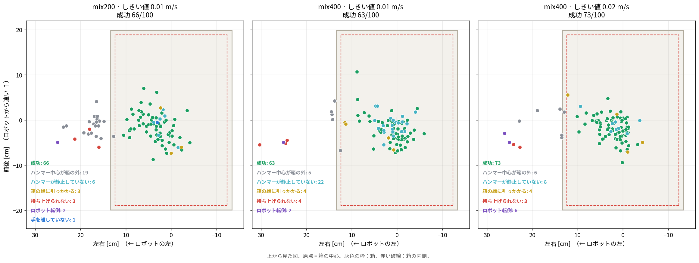
3 回の実行すべてで 91–95/100 回、ハンマーを 3 cm 以上持ち上げました。持ち上げられなかったのは 3–4 回だけです。損失は主に置く段階で発生しています。
mix400 では、ハンマーが箱の外に落ちた回数が 19 から 5 に、最終距離の中央値が 6.1 cm から 4.4 cm に減りました。
中央の図から、mix400（しきい値 0.01 m/s）の「静止していない」失敗 22 件はすべて箱の内側にあり、手も離していることがわかります。これらの点は成功例よりも箱の中心に近いほどです（中央値 2.9 cm 対 4.3 cm）。ハンマーは 6 s の時間切れまでゆっくり動き続けるだけで（最終速度 0.005–0.023 m/s、回転 0.04–0.32 rad/s）、一度も静止条件を満たしませんでした。置き方の失敗というより、採点方法による失敗です。しきい値 0.02 m/s の実行（右図）では、このグループは 8 件に減り、成功率は 73 % に上がりました。
静止条件（Arena のまま変更なし）は、各シミュレーションステップにおけるハンマーの瞬間速度だけを見ています。0.01 m/s 未満かつ 0.1 rad/s 未満を同時に満たす必要があります。22 個のハンマーはすべて箱の内側にあり手も離れていて、確認した動画ではハンマーが滑っている様子は見られません。もし測定された速度（0.5–2.3 cm/s）で箱の中心に着いてから時間切れまでの約 3.5 s 間動き続けていたら、数センチは移動するはずです。実際には、最終時の箱中心までの距離は最接近時との差が中央値で 1.2 cm にすぎません。つまりハンマーは主にその場で微振動しています。ハンマーが箱のメッシュ状の底に置かれると、物理シミュレーションは速度を正確に 0 に戻しません（22 件中 12 件は底に平らに置かれており、成功例では 63 件中 8 件）。さらに箱自体も棚の上に置かれた動的な物体です。この小さな振動が 0.01 m/s を超えるため、瞬間値のしきい値はシミュレーションのノイズに対して厳しすぎます。一定時間（例：0.5 s）内にハンマーが移動したかどうかで判定する方が妥当です。
73 % の実行ではロボットが 6 回転倒し、他の 2 回の実行ではそれぞれ 2 回でした。6 回とも、手がハンマーに届く前のエピソード開始直後、0.02–0.78 s 以内（最大 300 ステップ中 39 ステップ）に発生しています。ハンマーは棚の上にあり、箱の中心から 25.6 cm 離れたままでした。この時点ではモデルはほとんど制御を始めておらず、静止しきい値はエピソード終了時の採点にしか使われないため、転倒の原因にはなりません。これは nb12 で記録済みのリセットの問題と一致します。前のエピソードが腕と胴体をデフォルト姿勢から大きく離れた状態で終わると、リセットで以前の状態が完全には消えず（腰が曲がったまま、関節に速度が残る）、ロボットは最初のティックで足を踏み出すか転倒します。リセットを 2 回行っても、デモ 20 件の再生で 2/20 回は開始時に失敗しました。6 対 2 の差は統計的に有意ではなく（Fisher p = 0.28）、3 回の実行を合わせると 10/300 エピソード（約 3 %）です。これらの転倒を除くと、73 % の実行は 73/94 ≈ 78 % になります。このノイズを評価から除くには、リセット工程の修正（例：エピソード開始前に姿勢と関節速度を確認する）が必要です。
シナリオの結論
本プロジェクトは G1 にまったく新しいタスクを自力で教えることに成功しました。未調整の 0 % から、わずか 200 エピソード（テレオペ 100 + 生成 100）と H100 1 枚での約 1 時間のファインチューニングで 66 % に到達し、全工程は約 6 日間でした。把持と持ち上げは安定しており、残る損失はハンマーを箱に置く段階と採点方法にあります。
- 自社開発のツールで全工程を実施：環境構築、テレオペによるデモ収集、データ生成、ファインチューニング、評価。
- デモの生成により、テレオペ時間を増やさずにデータを増やせる（生成 133 回 → 厳格な条件を満たすデモ 100 件）。
- データを 2 倍（mix400）にするとハンマーをより正確に置けるようになった（箱の外 19 → 5 回）が、全体の成功率は上がらなかった（63 %）。静止しきい値 0.02 では 73 % に達した。
- 未対応：「静止」の判定を瞬間速度ではなく一定時間内のハンマーの移動量で行うよう変更すること。エピソード開始時にロボットが転倒する原因となるリセット工程の修正（エピソードの約 3 %）。
G1 picks a hammer from the shelf and drops it into a bin.
A completely new task designed by the project: the left hand grasps the hammer handle, lifts it over the bin wall, drops it in the middle of the bin and pulls the hand away. It is harder than the apple because the hammer is long, thin and lies close to the shelf surface, and easily ends up resting on the bin rim. The project built the environment, collected 100 teleop demos with a Meta Quest headset, generated additional demos and fine-tuned GR00T (~1 hour on 1 H100) — the full cycle took about 6 days. Results: untuned 0 % → 200 episodes 66 % → 400 episodes 63 % → relaxed at-rest threshold 73 %.
- SourceTeleop + generated
- Frames28,022 · 54,541
- Rate50 Hz
- Time61 min · 2 h 15
- Batch · GPU32 · 1× H100
- Final loss0.020 · 0.019
- mix200
hammer_mix200_n17 - mix400
hammer_mix400_n17 - Action chunk40 steps · 50 Hz
Video Showcase
Scenario setting
The G1 robot stands in front of a shelf in the Galileo lab; the hammer lies on the left with its head propped on a small block, and a red plastic bin sits on the right. The image below is the first frame of the episode shown in the Video Showcase.
| Scene & objects | Details |
|---|---|
| Background | Galileo lab; the boxes shield_controller_box_02, jetson_orin_05 and jetson_orin_07 are hidden so the hand does not collide (clearance ≥ 2 cm) |
| Hammer | hammer_2_handal_robolab 33 × 13 × 3 cm at (0.63, 0.25) m, yaw 0; the hammer head rests on a 5 cm block (tilted ~10°) so the handle is easy to grasp |
| Bin | red_container scaled 0.65 → 40 × 27 × 5.9 cm at (0.68, 0.00) m |
| Distance | Hammer is 5.1 cm from the bin edge |
| Robot, cameras & control | Details |
|---|---|
| Robot | Unitree G1 + Dex3 at (0.25, 0.08) m; the left hand grasps the handle, lifts it over the 5.9 cm bin wall, moves ~25 cm to the right and releases |
| Cameras | Robot head camera (model input) + 1 external camera for recording |
| Rate | 50 Hz control; each model call returns a chunk of 40 steps |
| Episode | At most 300 steps = 6 s |
| Instruction | "put the hammer in the bin" |
| Success | Hammer centre ≤ 10 cm from the bin centre and below the wall; hammer at rest (< 0.01 m/s, < 0.1 rad/s — later relaxed to 0.02 m/s); hand released (22 hand links ≤ 0.01 N); held for 10 consecutive steps |
Scenario goals
This scenario tests the ability to teach the robot a new task from scratch with tools and data built by the project.
Define a task with no existing data or model: pick the hammer from the shelf and drop it into the bin.
Go through every stage: building the environment, collecting teleop demos, data augmentation, fine-tuning, evaluation.
Know how much data and training time is needed, and how much each improvement adds to the success rate.
Scenario data
As a new scenario, there was no existing dataset: the project collected its own demos with Meta Quest headset teleop in Isaac Lab at 50 Hz, then added generated demos (card 6). Every demo was replayed against the strict success condition before being used for training.
| Dataset hammer_to_bin | Value |
|---|---|
| Source | Meta Quest headset teleop in Isaac Lab, 50 Hz; the first 100 real demos were collected over 10 sessions |
| Real demos | ~13,700 steps; hammer lifted 10.6 cm on average; final hammer centre 3.7 cm from the bin centre (max 8.4 cm) |
| mix200 set | 200 episodes (100 real + 100 augmented), 28,022 frames (~9.3 min), LeRobot v2.1, 131 MB |
| mix400 set | 400 episodes (mix200 + 200 new teleop demos), 54,541 frames (~18 min) |
| Instruction | "put the hammer in the bin" |
| Check | All demos successful; for mix200: minimum hammer lift 6.4 cm, mean final distance 3.8 cm |
Problems encountered
The hammer → bin task is completely new: no data, no model, no ready-made scene. The biggest difficulty is getting enough good data for fine-tuning.
There is no dataset or checkpoint for picking a hammer and placing it in a bin on the G1; the base model without fine-tuning cannot do the task.
The operator wears a Meta Quest headset and performs each demo by hand; one session yields only about 10 demos, so many sessions are needed.
The robot hand freezes when the controller signal is lost, and it lags from the second attempt onwards; many attempts had to be discarded and redone.
Some demos were scored as successful while the hammer still rested on the bin wall or the hand had not let go; bad demos mixed into the data teach the model the wrong behaviour.
Proposed approach
Solved by generating additional data: from real teleop demos, new demos are created automatically in the style of MimicGen, replayed in simulation, and only those meeting the strict success condition are kept. This multiplies the data without extra teleop hours, and every demo used for training has been verified.
Real demos serve as templates (60 different templates); time is scaled ×0.85–1.2; start (σ 1 cm), grasp (σ 4 mm) and release (±1–1.2 cm) points are shifted and joined with min-jerk trajectories; 0.2–0.6 mm hand jitter is added.
Each generated demo is replayed in simulation against the strict success condition; 100 of 133 attempts passed and went into the mix200 set.
| Metric | Augmented | Real |
|---|---|---|
| Episode length (steps) | 145 | 137 |
| Hammer lift | 10.5 cm | 10.6 cm |
| Distance to bin centre, mean | 4.0 cm | 3.7 cm |
| Distance to bin centre, max | 8.0 cm | 8.4 cm |
Workflow
A completely new scenario: no existing data or model. The project built the environment, created its own data by teleop, ran augmentation to multiply the data, fine-tuned GR00T, and only then ran the closed-loop evaluation.
| Step | Work | Notebook / tool | Result |
|---|---|---|---|
| 1 | Choose hammer and bin; prop the hammer on a 5 cm block; hide background boxes in the hand's way; write the strict success condition | Isaac Lab Arena, hammer_to_bin/scripts | Final layout, clearance ≥ 2 cm |
| 2 | Collect demos with the Meta Quest headset using presets and teleop diagnostics; replay each demo against the strict condition | teleop_kit, record_demos.sh | 100 real demos (10 sessions), later 200 more |
| 3 | Transform template demos (timing, grasp/release points, hand jitter), replay and filter | gen_scripted_demos.py | 100 augmented demos → mix200 set |
| 4 | Fine-tune GR00T N1.7-3B; LLM frozen, vision + projector + diffusion tuned | H100 server | mix200: 61 min · mix400: 2 h 15 min |
| 5 | Run N closed-loop episodes, classify failures, record videos | Arena eval, nb11_hammer_to_bin, nb12_eval_hammer_to_bin | 0 % base → 66 % → 63 % → 73 % |
Fine-tune
| Step | 10 | 500 | 1,000 | 2,000 | 4,000 | 6,000 | 8,000 | 10,000 |
|---|---|---|---|---|---|---|---|---|
| Loss | 1.270 | 0.222 | 0.108 | 0.064 | 0.045 | 0.031 | 0.023 | 0.020 |
Results achieved
Figures measured across the teleop → augmentation → fine-tune → evaluation cycle, in local Isaac Sim (inside condition: hammer centre inside the bin, at rest, released).
| Step | Measured figures |
|---|---|
| Teleop | 100 real demos (10 sessions, ~13,700 steps); later 200 more |
| Augmentation | 133 generation attempts → 100 demos meeting the strict condition |
| Dataset | mix200: 200 episodes, 28,022 frames · mix400: 400 episodes, 54,541 frames |
| Fine-tune | mix200: 10k steps, 61 min, loss 0.020 · mix400: 20k steps, 2 h 15 min, loss 0.019 |
| Local · mix200 | 66/100; lifted ≥ 3 cm 95/100; median final distance 6.1 cm |
| Local · mix400 | 63/100; lifted ≥ 3 cm 94/100; median final distance 4.4 cm |
| Local · mix400, threshold 0.02 | 73/100; lifted ≥ 3 cm 91/100; mean time to success 2.5 s |
Result analysis
Outcome breakdown of the three 100-episode runs in local Isaac Sim, to see what more data and a relaxed threshold change.
| Outcome (100 episodes) | mix200 | mix400 | mix400 · manual count | mix400 · threshold 0.02 |
|---|---|---|---|---|
| Success | 66 | 63 | 87 | 73 |
| Hammer centre outside the bin | 19 | 5 | – | 6 |
| Hammer not at rest at timeout | 6 | 22 | – | 8 |
| Hammer resting on the bin rim | 3 | 4 | – | 4 |
| Not lifted (< 1 cm) | 3 | 4 | – | 3 |
| Robot fell | 2 | 2 | – | 6 |
| Hand not released | 1 | 0 | – | 0 |
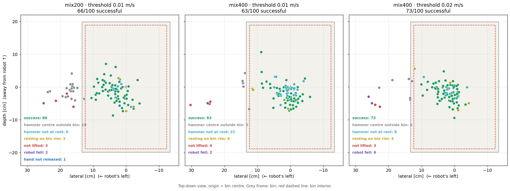
The hammer was lifted ≥ 3 cm in 91–95/100 episodes in all three runs; only 3–4 failed to lift it. Losses are mainly in the release phase.
mix400 reduces hammers landing outside the bin from 19 to 5, and the median final distance from 6.1 to 4.4 cm.
The middle plot shows that with mix400 (threshold 0.01 m/s), all 22 "not at rest" failures lie inside the bin with the hand released. These points are even closer to the bin centre than the successes (median 2.9 cm vs 4.3 cm). The hammer only keeps moving slowly until the 6 s timeout (final velocity 0.005–0.023 m/s, rotation 0.04–0.32 rad/s), so it never meets the at-rest condition. These are failures of the scoring rule rather than of placement. In the run with threshold 0.02 m/s (right plot), this group drops to 8 and the rate rises to 73 %.
The at-rest condition (kept unchanged from Arena) only looks at the hammer's instantaneous velocity at each simulation step: it must be below 0.01 m/s and 0.1 rad/s at the same time. All 22 hammers lie inside the bin with the hand released, and the videos we reviewed show no drifting. If the hammer really moved at the measured speed (0.5–2.3 cm/s) for the ~3.5 s from reaching the bin centre to timeout, it would drift several centimetres; in fact the final distance to the bin centre differs from the closest approach by only 1.2 cm (median). So the hammer is mostly vibrating in place: the physics simulation does not bring the velocity exactly to 0 when the hammer lies on the bin's mesh floor (12/22 hammers lie flat on the floor, versus 8/63 successes), and the bin itself is a dynamic body standing on the shelf. This small vibration exceeds 0.01 m/s, so an instantaneous threshold is too strict for the simulation noise; a more reasonable rule is to check whether the hammer moves over a time window (e.g. 0.5 s).
The 73 % run had 6 robot falls, versus 2 in each of the other two runs. All 6 happened right at the start of the episode, within 0.02–0.78 s (at most 39/300 steps), before the hand reached the hammer: the hammer was still on the shelf, 25.6 cm from the bin centre. At that point the model had barely started controlling the robot, and the at-rest threshold is only used to score the end of the episode, so it cannot cause a fall. This matches the reset issue recorded in nb12: when the previous episode ends with the arm and torso far from the default pose, the reset does not fully clear the old state (hips still bent, joints still moving), and the robot steps or falls on the first tick. Even with a double reset, replaying 20 demos still gave 2/20 bad starts. The difference of 6 vs 2 is not statistically significant (Fisher p = 0.28); across the three runs it is 10/300 episodes (≈ 3 %). Excluding these falls, the 73 % run reaches 73/94 ≈ 78 %. The reset step needs fixing (e.g. checking pose and joint velocities before starting an episode) to remove this noise from the evaluation.
Scenario conclusion
The project taught the G1 a completely new task on its own: from 0 % untuned to 66 % with only 200 episodes (100 teleop + 100 generated) and ~1 hour of fine-tuning on one H100, with the full cycle taking about 6 days. Grasping and lifting work; the remaining losses are in dropping the hammer into the bin and in how runs are scored.
- Completed the full cycle with in-house tools: environment building, teleop demo collection, data generation, fine-tuning, evaluation.
- Generating demos multiplies the data without extra teleop hours (133 generation attempts → 100 demos meeting the strict condition).
- Doubling the data (mix400) places the hammer more precisely (outside the bin 19 → 5 times) but the overall rate did not rise (63 %); with an at-rest threshold of 0.02 it reaches 73 %.
- Not yet addressed: change the "at rest" scoring to check hammer displacement over a time window instead of instantaneous velocity; fix the reset step that makes the robot fall at the start of an episode (≈ 3 % of episodes).
Khách hàng nhận được gì, nằm ở đâu, dùng thế nào.
Toàn bộ sản phẩm của giai đoạn này nằm trong một thư mục gồm 6 phần, đánh số theo thứ tự nên đọc: báo cáo → mã nguồn → dữ liệu → model → kết quả → asset mô phỏng. Dữ liệu gốc và checkpoint được cung cấp riêng.
Cấu trúc gói bàn giao
Mỗi ô là một thư mục con. Bấm vào ô để xem danh sách file bên trong (card 3).
Đối tượng sử dụng theo vai trò
Không phải ai cũng cần cả gói. Bảng dưới gợi ý phần nên đọc trước theo vai trò.
| Phần | Quản lý dự án | Kỹ sư phần mềm | Kỹ sư AI / robot | Người thu dữ liệu (teleop) |
|---|---|---|---|---|
| 01 Báo cáo | ✓ | · | · | · |
| 02 Mã nguồn | ✓ | ✓ | · | |
| 03 Dữ liệu | ✓ | · | ||
| 04 Model | · | ✓ | ||
| 05 Kết quả | ✓ | ✓ | ||
| 06 Asset | · | ✓ |
Danh mục nội dung chi tiết
Bấm vào từng thư mục để xem các file chính bên trong.
01report/ — Báo cáo
index.html— báo cáo tương tác: mục lục, video, bảng so sánh, xuất PDFassets/,images/— giao diện, video minh hoạ, hình ảnhsrc/,build.py,README.md— nội dung từng mục và cách chỉnh sửa báo cáomarkdown/— bản báo cáo dạng văn bản (10 file) để trích dẫn, chỉnh sửa
02codes/ — Mã nguồn
standalone_g1_gr00t/— pipeline điều khiển G1 bằng GR00T, không phụ thuộc Arenag1gr00t/— package: kết nối server, ánh xạ khớp, quan sát, action, lớp an toàn, AGILE, backend Isaac Lab, runnernotebooks/— 12 notebook nghiên cứu (nb01 → nb12)configs/— cấu hình kịch bản táo, búa và bộ giữ thăng bằngscripts/,tools/— chạy vòng kín, đánh giá open-loop, tải tài nguyên, chạy notebook tự độngtests/— unit test và test trong mô phỏngREADME.md,Makefile— cài đặt và các lệnh chạy
g1_real2sim/— tái tạo khung cảnh từ dữ liệu G1 thật: FK từ URDF, vật nhiễu, khung cảnh Isaac Lab, đọc/ghi LeRobot, cấu hình GR00Tarena_bua_thung/— mở rộng Isaac Lab Arena cho kịch bản búapatches/— 4 bản vá môi trường: bố trí búa–thùng, khối kê, điều kiện thành công chặtteleop/— script mở teleop, ghi, phát lại, gộp demo, chẩn đoánscripts/— sinh demo tăng cường, kiểm tra dataset, kiểm chứng khung cảnh
03datasets/ — Dữ liệu huấn luyện
| Thư mục | Nội dung |
|---|---|
hammer_to_bin/static_hammer_mix200/ | 200 episode (100 teleop thật + 100 sinh thêm), 28.022 frame @ 50 Hz |
hammer_to_bin/static_hammer_mix400/ | 400 episode (mix200 + 200 demo teleop mới), 54.541 frame @ 50 Hz |
real2sim_multi_fruit/g1-fruits-sim-train/ | Tập huấn luyện mô phỏng từ dữ liệu G1 thật: 790 episode, 86.822 frame @ 20 Hz (táo 246, lê 211, khế 174, nho 159) |
real2sim_multi_fruit/g1-fruits-sim-test/ | Tập kiểm tra: 89 episode, 9.906 frame, khung cảnh không có trong tập huấn luyện; test_scenes.json là danh sách khung cảnh đánh giá |
Mỗi dataset gồm meta/ (mô tả, câu lệnh, thống kê), data/ (góc khớp, action theo từng episode) và videos/ (camera đầu robot).
04models/ — Model đã huấn luyện
Mỗi thư mục là một checkpoint dùng được ngay với GR00T server: trọng số (3 file safetensors), cấu hình, processor, thống kê chuẩn hoá, kèm log và script huấn luyện; không kèm trạng thái optimizer.
| Checkpoint | Huấn luyện trên | Kết quả |
|---|---|---|
Búa → thùng, 200 episodehammer_to_bin_mix200/ · bước 10.000 | mix200 · 10.000 bước · 1× H100 · 61 phút | 66 % |
Búa → thùng, 400 episodehammer_to_bin_mix400/ · bước 20.000 | mix400 · 20.000 bước · 1× H100 · 2 giờ 15 phút | 63 % (73 % khi nới ngưỡng đứng yên) |
Real2sim 4 loại quảreal2sim_multi_fruit/ · bước 20.000 | 790 episode mô phỏng · 20.000 bước · batch 32 | 66 % |
| Táo → đĩa (của NVIDIA) không kèm trong gói | Không huấn luyện lại — tải từ Hugging Face vào models/isaaclab_arena/static_apple_tutorial/gn1x_tuned_static_apple/ (đường dẫn mặc định trong cấu hình) | 92 % trong Arena |
05evals/ — Kết quả đánh giá
apple_plate/— táo → đĩa, checkpoint NVIDIA, mỗi đợt 50 episode kèm 50 video camera đầuself_built_scene_50ep/— khung cảnh tự dựng: 0/50galileo_scene_50ep/— khung cảnh Galileo dựng lại: 28/50
multi_fruit/— 4 loại quả, mỗi đợt 50 episode; video ghi cho 10 episode đầufinetune_real2sim_50ep/— model fine-tune real2sim: 33/50baseline_apple_ckpt_50ep/— đối chứng, dùng lại checkpoint táo: 0/50
hammer_to_bin/— búa → thùng, mỗi đợt 100 episode kèm 100 videoarena_mix200_100ep/— mix200 trong Arena (camera ngoài + camera đầu): 56/100local_mix200_100ep/— mix200, Isaac Sim local: 66/100local_mix400_100ep/— mix400, Isaac Sim local: 63/100local_mix400_at_rest_0.02_100ep/— mix400, nới ngưỡng đứng yên lên 0,02 m/s: 73/100
README.md ở thư mục gốc tóm tắt kết quả và nguồn gốc từng đợt. File chung ở mỗi đợt: episodes.jsonl (một dòng mỗi lần thử), summary.json / summary.md (tỉ lệ thành công, khoảng tin cậy, phân loại thất bại), video …_success.mp4 / …_fail.mp4.
06assets/ — Asset mô phỏng
nucleus_cache/— bản sao offline các file NVIDIA mà Isaac Lab tải về khi dựng cảnh: nền Galileo, búahammer_2, thùng đỏ, robot G1 và mô hình điều khiển thân dưới (WBC). Có sẵn thì chạy không cần mạng; thiếu thì Isaac Lab tự tải lại.objects/objaverse/apple_01.usd,objects/hot3d/clay_plates.usd— quả táo và cái đĩa của kịch bản táo → đĩa trong pipeline độc lập.
Kịch bản real2sim 4 loại quả không dùng thư mục này (URDF robot nằm trong codes/g1_real2sim/assets/).
Dữ liệu gốc bàn giao riêng
Dữ liệu HDF5 gốc của bài búa, chỉ cần khi muốn chuyển đổi lại hoặc sinh thêm dữ liệu huấn luyện; không cần để chạy model, đọc báo cáo hay xem kết quả.
| Thành phần | Cần khi |
|---|---|
| Dữ liệu teleop gốc bài búa (HDF5) | Chuyển đổi lại, sinh thêm demo |
| Bộ huấn luyện mix200 dạng HDF5 | Chuyển LeRobot với cấu hình khác |
| Bộ huấn luyện mix400 dạng HDF5 | như trên |
Giấy phép và điều khoản sử dụng
| Thành phần | Điều khoản |
|---|---|
| Model gốc GR00T N1.7-3B và các checkpoint fine-tune từ nó | Theo NVIDIA Open Model Agreement |
| Checkpoint táo → đĩa của NVIDIA (Arena) | Model card ghi "ready for non-commercial use only" |
| Dataset NVIDIA (táo → đĩa, dữ liệu G1 thật) | CC-BY-4.0: dùng được, cần ghi nguồn |
| Dữ liệu teleop bài búa, dataset sinh thêm, dataset real2sim | Do dự án tạo ra |
| Video minh hoạ mô hình VLA (mục II.01) | Của bên thứ ba |
Asset 3D trong assets/ (file NVIDIA Isaac / Arena, táo Objaverse, đĩa HOT3D) | Của NVIDIA và bên thứ ba; kiểm tra điều khoản trước khi phân phối lại |
顧客が受け取るもの、その場所、使い方。
本フェーズの成果物はすべて6 部構成の 1 つのフォルダに収め、推奨する読む順に番号を付けています：レポート → ソースコード → データ → モデル → 結果 → シミュレーションアセット。元データとチェックポイントは別途提供します。
成果物パッケージの構成
各タイルは 1 つのサブフォルダです。タイルをクリックすると中のファイル一覧を表示します（カード 3）。
役割別の想定利用者
全員がパッケージ全体を必要とするわけではありません。下表は役割ごとに先に読むべき部分の目安です。
| 部分 | プロジェクトマネージャー | ソフトウェアエンジニア | AI / ロボットエンジニア | データ収集担当（テレオペ） |
|---|---|---|---|---|
| 01 レポート | ✓ | · | · | · |
| 02 ソースコード | ✓ | ✓ | · | |
| 03 データ | ✓ | · | ||
| 04 モデル | · | ✓ | ||
| 05 結果 | ✓ | ✓ | ||
| 06 アセット | · | ✓ |
詳細な内容一覧
フォルダをクリックすると中の主なファイルを表示します。
01report/ — レポート
index.html— インタラクティブレポート：目次、動画、比較表、PDF 出力assets/,images/— UI、デモ動画、画像src/,build.py,README.md— 各節の内容とレポートの編集方法markdown/— 引用・編集用のテキスト版レポート（10 ファイル）
02codes/ — ソースコード
standalone_g1_gr00t/— GR00T で G1 を制御するパイプライン、Arena に依存しないg1gr00t/— パッケージ：サーバー接続、関節マッピング、観測、アクション、安全レイヤー、AGILE、Isaac Lab バックエンド、runnernotebooks/— 研究用 notebook 12 本（nb01 → nb12）configs/— リンゴ・ハンマーのシナリオとバランス制御器の設定scripts/,tools/— 閉ループ実行、open-loop 評価、アセットのダウンロード、notebook の自動実行tests/— unit test とシミュレーション内テストREADME.md,Makefile— インストールと実行コマンド
g1_real2sim/— 実機 G1 データからのシーン再構成：URDF からの FK、妨害物体、Isaac Lab シーン、LeRobot の読み書き、GR00T 設定arena_bua_thung/— ハンマーシナリオ用の Isaac Lab Arena 拡張patches/— 環境パッチ 4 件：ハンマー–箱の配置、支持ブロック、厳格な成功条件teleop/— テレオペの起動、記録、再生、デモの統合、診断用スクリプトscripts/— 拡張デモの生成、データセットのチェック、シーンの検証
03datasets/ — 学習データ
| フォルダ | 内容 |
|---|---|
hammer_to_bin/static_hammer_mix200/ | 200 エピソード（実テレオペ 100 + 生成 100）、28,022 フレーム @ 50 Hz |
hammer_to_bin/static_hammer_mix400/ | 400 エピソード（mix200 + 新規テレオペデモ 200）、54,541 フレーム @ 50 Hz |
real2sim_multi_fruit/g1-fruits-sim-train/ | 実機 G1 データから作成したシミュレーション学習セット：790 エピソード、86,822 フレーム @ 20 Hz（リンゴ 246、洋ナシ 211、スターフルーツ 174、ブドウ 159） |
real2sim_multi_fruit/g1-fruits-sim-test/ | テストセット：89 エピソード、9,906 フレーム、学習に含まれないシーン。test_scenes.json は評価シーンの一覧 |
各データセットは meta/（説明、指示文、統計）、data/（エピソードごとの関節角とアクション）、videos/（ロボット頭部カメラ）で構成されます。
04models/ — 学習済みモデル
各フォルダは GR00T サーバーでそのまま使えるチェックポイントです：重み（safetensors ファイル 3 つ）、設定、processor、正規化統計、学習ログと学習スクリプト。optimizer の状態は含まれません。
| Checkpoint | 学習データ | 結果 |
|---|---|---|
ハンマー → 箱、200 エピソードhammer_to_bin_mix200/ · ステップ 10,000 | mix200 · 10,000 ステップ · 1× H100 · 61 分 | 66 % |
ハンマー → 箱、400 エピソードhammer_to_bin_mix400/ · ステップ 20,000 | mix400 · 20,000 ステップ · 1× H100 · 2 時間 15 分 | 63 %（静止しきい値を緩和すると 73 %） |
Real2sim 果物 4 種real2sim_multi_fruit/ · ステップ 20,000 | シミュレーション 790 エピソード · 20,000 ステップ · バッチ 32 | 66 % |
| リンゴ → 皿（NVIDIA 提供） パッケージには含まない | 再学習なし — Hugging Face から models/isaaclab_arena/static_apple_tutorial/gn1x_tuned_static_apple/（設定の既定パス）にダウンロード | Arena で 92 % |
05evals/ — 評価結果
apple_plate/— リンゴ → 皿、NVIDIA チェックポイント、各実行 50 エピソードと頭部カメラ動画 50 本self_built_scene_50ep/— 自作シーン：0/50galileo_scene_50ep/— 再構築した Galileo シーン：28/50
multi_fruit/— 果物 4 種、各実行 50 エピソード。動画は最初の 10 エピソードのみfinetune_real2sim_50ep/— real2sim でファインチューニングしたモデル：33/50baseline_apple_ckpt_50ep/— 比較対照、リンゴのチェックポイントを再利用：0/50
hammer_to_bin/— ハンマー → 箱、各実行 100 エピソードと動画 100 本arena_mix200_100ep/— Arena での mix200（外部カメラ + 頭部カメラ）：56/100local_mix200_100ep/— mix200、ローカル Isaac Sim：66/100local_mix400_100ep/— mix400、ローカル Isaac Sim：63/100local_mix400_at_rest_0.02_100ep/— mix400、静止しきい値を 0.02 m/s に緩和：73/100
最上位の README.md に各実行の結果と出所をまとめています。各実行の共通ファイル：episodes.jsonl（試行ごとに 1 行）、summary.json / summary.md（成功率、信頼区間、失敗分類）、動画 …_success.mp4 / …_fail.mp4。
06assets/ — シミュレーションアセット
nucleus_cache/— Isaac Lab がシーン構築時にダウンロードする NVIDIA ファイルのオフラインコピー：Galileo 背景、ハンマーhammer_2、赤いビン、G1 ロボット、下半身制御モデル（WBC）。これがあればネットワークなしで実行でき、なければ Isaac Lab が再ダウンロードします。objects/objaverse/apple_01.usd、objects/hot3d/clay_plates.usd— スタンドアロンパイプラインのリンゴ → 皿シナリオで使うリンゴと皿。
4 種類の果物の real2sim シナリオはこのフォルダを使いません（ロボットの URDF は codes/g1_real2sim/assets/ にあります）。
別途提供する元データ
ハンマータスクの元 HDF5 データです。学習データを再変換・追加生成する場合にのみ必要で、モデルの実行、レポートの閲覧、結果の確認には必要ありません。
| コンポーネント | 必要な場面 |
|---|---|
| ハンマータスクの元テレオペデータ（HDF5） | 再変換、デモの追加生成 |
| mix200 学習セット（HDF5 形式） | 別の設定で LeRobot に変換 |
| mix400 学習セット（HDF5 形式） | 同上 |
ライセンスと利用条件
| コンポーネント | 条件 |
|---|---|
| ベースモデル GR00T N1.7-3B とそこからファインチューニングしたチェックポイント | NVIDIA Open Model Agreement に準拠 |
| NVIDIA のリンゴ → 皿チェックポイント（Arena） | Model card に "ready for non-commercial use only" と記載 |
| NVIDIA データセット（リンゴ → 皿、実機 G1 データ） | CC-BY-4.0：利用可、出典表記が必要 |
| ハンマータスクのテレオペデータ、生成データセット、real2sim データセット | 本プロジェクトで作成 |
| VLA モデルのデモ動画（II.01 節） | 第三者のもの |
assets/ 内の 3D アセット（NVIDIA Isaac / Arena のファイル、Objaverse のリンゴ、HOT3D の皿） | NVIDIA および第三者のもの。再配布前に条件を確認 |
What the client receives, where it is, how to use it.
All deliverables of this phase are in one folder with 6 parts, numbered in the recommended reading order: report → source code → data → model → results → simulation assets. The raw data and checkpoints are provided separately.
Deliverable package structure
Each tile is a subfolder. Click a tile to see the list of files inside (card 3).
Intended users by role
Not everyone needs the whole package. The table below suggests which parts to read first, by role.
| Part | Project manager | Software engineer | AI / robotics engineer | Data collector (teleop) |
|---|---|---|---|---|
| 01 Report | ✓ | · | · | · |
| 02 Source code | ✓ | ✓ | · | |
| 03 Data | ✓ | · | ||
| 04 Model | · | ✓ | ||
| 05 Results | ✓ | ✓ | ||
| 06 Assets | · | ✓ |
Detailed content inventory
Click a folder to see the main files inside.
01report/ — Report
index.html— interactive report: table of contents, videos, comparison tables, PDF exportassets/,images/— interface, demo videos, imagessrc/,build.py,README.md— content of each section and how to edit the reportmarkdown/— text version of the report (10 files) for quoting and editing
02codes/ — Source code
standalone_g1_gr00t/— pipeline controlling G1 with GR00T, independent of Arenag1gr00t/— package: server connection, joint mapping, observations, actions, safety layer, AGILE, Isaac Lab backend, runnernotebooks/— 12 research notebooks (nb01 → nb12)configs/— configurations for the apple and hammer scenarios and the balance controllerscripts/,tools/— closed-loop runs, open-loop evaluation, asset download, automated notebook executiontests/— unit tests and in-simulation testsREADME.md,Makefile— installation and run commands
g1_real2sim/— scene reconstruction from real G1 data: FK from URDF, distractor objects, Isaac Lab scene, LeRobot read/write, GR00T configurationarena_bua_thung/— Isaac Lab Arena extension for the hammer scenariopatches/— 4 environment patches: hammer–bin layout, support block, strict success conditionteleop/— scripts to launch teleop, record, replay, merge demos, diagnosescripts/— augmented demo generation, dataset checks, scene verification
03datasets/ — Training data
| Folder | Contents |
|---|---|
hammer_to_bin/static_hammer_mix200/ | 200 episodes (100 real teleop + 100 generated), 28,022 frames @ 50 Hz |
hammer_to_bin/static_hammer_mix400/ | 400 episodes (mix200 + 200 new teleop demos), 54,541 frames @ 50 Hz |
real2sim_multi_fruit/g1-fruits-sim-train/ | Simulated training set from real G1 data: 790 episodes, 86,822 frames @ 20 Hz (apple 246, pear 211, star fruit 174, grape 159) |
real2sim_multi_fruit/g1-fruits-sim-test/ | Test set: 89 episodes, 9,906 frames, scenes not seen in training; test_scenes.json lists the evaluation scenes |
Each dataset contains meta/ (description, instructions, statistics), data/ (joint angles, actions per episode) and videos/ (robot head camera).
04models/ — Trained models
Each folder is a checkpoint ready to use with the GR00T server: weights (3 safetensors files), config, processor, normalisation statistics, plus the training log and script; the optimizer state is not included.
| Checkpoint | Trained on | Result |
|---|---|---|
Hammer → bin, 200 episodeshammer_to_bin_mix200/ · step 10,000 | mix200 · 10,000 steps · 1× H100 · 61 min | 66 % |
Hammer → bin, 400 episodeshammer_to_bin_mix400/ · step 20,000 | mix400 · 20,000 steps · 1× H100 · 2 h 15 min | 63 % (73 % with relaxed at-rest threshold) |
Real2sim 4 fruitsreal2sim_multi_fruit/ · step 20,000 | 790 simulated episodes · 20,000 steps · batch 32 | 66 % |
| Apple → plate (NVIDIA) not included in the package | Not retrained — download from Hugging Face into models/isaaclab_arena/static_apple_tutorial/gn1x_tuned_static_apple/ (the default path in the config) | 92 % in Arena |
05evals/ — Evaluation results
apple_plate/— apple → plate, NVIDIA checkpoint, 50 episodes per run with 50 head-camera videosself_built_scene_50ep/— self-built scene: 0/50galileo_scene_50ep/— reconstructed Galileo scene: 28/50
multi_fruit/— 4 fruits, 50 episodes per run; videos recorded for the first 10 episodesfinetune_real2sim_50ep/— real2sim fine-tuned model: 33/50baseline_apple_ckpt_50ep/— baseline reusing the apple checkpoint: 0/50
hammer_to_bin/— hammer → bin, 100 episodes per run with 100 videosarena_mix200_100ep/— mix200 in Arena (external + head camera): 56/100local_mix200_100ep/— mix200, local Isaac Sim: 66/100local_mix400_100ep/— mix400, local Isaac Sim: 63/100local_mix400_at_rest_0.02_100ep/— mix400, at-rest threshold relaxed to 0.02 m/s: 73/100
README.md at the top level summarises the results and origin of each run. Common files in each run: episodes.jsonl (one line per attempt), summary.json / summary.md (success rate, confidence interval, failure classification), videos …_success.mp4 / …_fail.mp4.
06assets/ — Simulation assets
nucleus_cache/— offline copy of the NVIDIA files Isaac Lab downloads when building a scene: the Galileo background, thehammer_2hammer, the red bin, the G1 robot and the lower-body controller model (WBC). With it, runs need no network; without it, Isaac Lab downloads them again.objects/objaverse/apple_01.usd,objects/hot3d/clay_plates.usd— the apple and plate for the apple → plate scenario in the standalone pipeline.
The 4-fruit real2sim scenario does not use this folder (the robot URDF is in codes/g1_real2sim/assets/).
Separately delivered source data
The raw HDF5 data of the hammer task, needed only to re-convert or generate more training data; not needed to run the models, read the report or view the results.
| Component | Needed for |
|---|---|
| Raw hammer task teleop data (HDF5) | Re-converting, generating more demos |
| mix200 training set in HDF5 | Converting to LeRobot with a different configuration |
| mix400 training set in HDF5 | same as above |
Licensing and terms of use
| Component | Terms |
|---|---|
| Base model GR00T N1.7-3B and the checkpoints fine-tuned from it | Under the NVIDIA Open Model Agreement |
| NVIDIA apple → plate checkpoint (Arena) | Model card states "ready for non-commercial use only" |
| NVIDIA datasets (apple → plate, real G1 data) | CC-BY-4.0: usable, attribution required |
| Hammer task teleop data, generated dataset, real2sim dataset | Created by the project |
| VLA model demo videos (section II.01) | Third-party |
3D assets in assets/ (NVIDIA Isaac / Arena files, Objaverse apple, HOT3D plate) | Owned by NVIDIA and third parties; check the terms before redistributing |
Chuẩn bị hai máy để chạy lại các kịch bản.
Các mục IV.02–IV.04 hướng dẫn tự chạy lại các kịch bản để kiểm chứng số liệu trong báo cáo. Cần hai máy: máy trạm chạy mô phỏng và notebook (client), máy chủ GPU của khách hàng chạy GR00T (server). Mục này cài đặt cả hai phía; khởi động server và chạy đánh giá được trình bày ở IV.03 và IV.04.
Kiến trúc kết nối
Notebook trên máy trạm gửi ảnh camera, trạng thái khớp và câu lệnh tới GR00T server; server trả về một chuỗi action. Hai máy có thể nối thẳng qua mạng nội bộ, hoặc qua SSH tunnel nếu server chỉ nghe ở 127.0.0.1.
Yêu cầu phần cứng và phần mềm
- Ubuntu 24.04, GPU NVIDIA có RTX (dự án dùng RTX 5090), driver 580
- Isaac Sim 6.0.1 cài cục bộ tại
~/isaac-sim-6(Python 3.12) - Isaac Lab release/3.0.0-beta2 tại
~/IsaacLab, cài vào cùng Python của Isaac Sim - Isaac Lab Arena release/0.2.1 tại
~/IsaacLab-Arena(nguồn file YAML khớp và modality config) uv,make,git; truy cập Internet cho lần cài đầu
- Linux, GPU NVIDIA hỗ trợ CUDA (dự án dùng 1× H100 80 GB)
- Isaac-GR00T commit 4b1dca9, môi trường
uv(Python 3.10),ffmpeg - Quyền truy cập Hugging Face tới model gốc
nvidia/GR00T-N1.7-3B(đã chấp nhận giấy phép NVIDIA) - Checkpoint trong
models/và modality config của từng kịch bản (card 5) - Mở được cổng cho máy trạm, hoặc cho phép SSH
Đặt gói sản phẩm trên máy trạm
Mã nguồn đọc assets/, datasets/ và models/ theo đường dẫn ~/workspace/shimizu-robot/, nên giải nén gói đúng vị trí này. Isaac Sim, Isaac Lab và Arena đặt trong thư mục home như card 2.
~/workspace/shimizu-robot/ # gói sản phẩm (IV.01) ├── codes/standalone_g1_gr00t/ # client: package g1gr00t, notebook, Makefile ├── assets/ # nucleus_cache + táo, đĩa ├── datasets/ # dataset LeRobot └── models/ # checkpoint (chép lên server, card 6) ~/isaac-sim-6/ ~/IsaacLab/ ~/IsaacLab-Arena/
ISAAC_PY (Python của Isaac Sim), ARENA_DIR và ISAAC_GR00T_DIR, ví dụ make sim-test ISAAC_PY=/opt/isaac-sim/python.sh. Đường dẫn dataset và model nằm trong configs/*.yaml.Cài client trên máy trạm
Package standalone_g1_gr00t dùng hai môi trường: .venv (Python 3.10, cho kiểm thử và notebook không mô phỏng) và Python của Isaac Sim (cho notebook có mô phỏng).
make sim-test-scene được tua nhanh). Tên máy hiển thị là user@workstation và user@gpu-server.cd ~/workspace/shimizu-robot/codes/standalone_g1_gr00t # môi trường .venv make venv # uv venv .venv --python 3.10, cài package + dev + notebook make sync # chép 4 file YAML khớp/WBC từ ~/IsaacLab-Arena, ghi hash nguồn make assets # tải policy chân AGILE (ONNX) vào assets/wbc/ make test # unit test không cần mô phỏng # môi trường Isaac Sim export PYTHONNOUSERSITE=1 # không để gói trong ~/.local chen vào Python của Isaac Sim make sim-install # cài package vào ~/isaac-sim-6/python.sh make sim-test # unit test bằng Python của Isaac Sim make sim-test-scene # test có scene: robot đứng vững, bàn / táo / đĩa make sim-kernel # đăng ký kernel Jupyter "isaacsim6" cho notebook mô phỏng
| Dữ liệu trên máy trạm | Đường dẫn | Dùng cho |
|---|---|---|
| Policy chân AGILE | codes/standalone_g1_gr00t/assets/wbc/ (tải bằng make assets) | Mọi notebook mô phỏng |
| Asset cảnh Galileo, búa, thùng, robot G1 | assets/nucleus_cache/ (có sẵn trong gói) | Kịch bản táo (cảnh Galileo) và búa; chạy không cần mạng |
| Táo, đĩa | assets/objects/ | Kịch bản táo (cảnh tự dựng) |
| Dataset búa → thùng mix200 | datasets/hammer_to_bin/static_hammer_mix200/ | nb12: phát lại demo, khớp màu ảnh |
| Dataset táo → đĩa của NVIDIA | datasets/isaaclab_arena/static_apple_tutorial/ (tải từ Hugging Face) | Phát lại demo, open-loop kịch bản táo |
make test, make sim-test và make sim-test-scene đều không có test lỗi, và Jupyter thấy kernel Isaac Sim Python 3 (isaacsim6).Cài server trên máy chủ GPU
Cài Isaac-GR00T đúng commit đã dùng khi huấn luyện. Bảng dưới cho biết mỗi kịch bản cần checkpoint và modality config nào; cách đưa chúng lên server ở card 6.
uv và kiểm tra GPU trên máy chủ (các đoạn tải được tua nhanh). Tên máy hiển thị là user@workstation và user@gpu-server.# cần sẵn: git, uv, ffmpeg (sudo apt-get install -y ffmpeg)
git clone https://github.com/NVIDIA/Isaac-GR00T.git ~/Isaac-GR00T
cd ~/Isaac-GR00T
git checkout 4b1dca9d88d2a0b9ea5a65aa61c82ff89f5c4f0e
git submodule update --init --recursive
uv sync --python 3.10 # tạo môi trường, cài GR00T và thư viện GPU (vài phút)
uv run python -c "import gr00t, torch; print('GR00T ok | CUDA', torch.cuda.is_available())"
# nếu model gốc chưa có trong cache Hugging Face, đăng nhập bằng tài khoản
# đã chấp nhận giấy phép nvidia/GR00T-N1.7-3B:
hf auth login
| Kịch bản · cổng client | Checkpoint trong models/ | Modality config |
|---|---|---|
| Táo → đĩa 5556 · g1_static_apple.yaml | Checkpoint NVIDIA tải từ Hugging Face | Bản của Arena |
| Búa → thùng 5557 · NB12_PORT | hammer_to_bin_mix200/hammer_mix200_n17/checkpoint-10000hammer_to_bin_mix400/hammer_mix400_n17/checkpoint-20000 | Bản của Arena |
| Real2sim 4 loại quả 5556 · NB10_PORT | real2sim_multi_fruit/g1_fruits_n17_bs32_20k/checkpoint-20000 | Bản real2sim |
isaaclab_arena_gr00t/embodiments/g1/g1_sim_wbc_data_gr00t_n_1_7_config.py trong Arena release/0.2.1 (chép riêng file đó lên server hoặc clone Arena). Bản real2sim là g1_dex3_joint_sim_config.py, nằm trong thư mục real2sim_multi_fruit/g1_fruits_n17_bs32_20k/ (cạnh checkpoint-20000) và trong codes/g1_real2sim/groot/. So md5sum hai phía trước khi chạy.Đưa checkpoint bàn giao lên server
Ba checkpoint fine-tune nằm trong thư mục models/ của gói bàn giao, mỗi thư mục dùng được ngay với GR00T server: trọng số (3 file safetensors), cấu hình, processor và thống kê chuẩn hoá. Chỉ cần chép những checkpoint của kịch bản muốn kiểm chứng.
user@workstation và user@gpu-server.~/shimizu-robot/modelsrsync từ máy trạm, chạy tiếp được nếu bị ngắt# chạy trên máy trạm
SRV=user@gpu-server
CKPTS="hammer_to_bin_mix200 hammer_to_bin_mix400 real2sim_multi_fruit"
cd ~/workspace/shimizu-robot/models
# bước 1 — tạo thư mục trên server
ssh $SRV 'mkdir -p ~/shimizu-robot/models ~/shimizu-robot/configs'
# bước 2 — chép checkpoint cần dùng, giữ nguyên thư mục con
rsync -avP $CKPTS $SRV:~/shimizu-robot/models/
# bước 3 — so checksum, không chép (-n):
# không liệt kê file nào nghĩa là hai phía giống hệt
rsync -avnc $CKPTS $SRV:~/shimizu-robot/models/
# đếm file trọng số: kỳ vọng 9 (3 checkpoint × 3 file)
ssh $SRV 'ls ~/shimizu-robot/models/*/*/checkpoint-*/*.safetensors | wc -l'
# bước 4 — modality config của Arena (kịch bản táo, búa)
G1=~/IsaacLab-Arena/isaaclab_arena_gr00t/embodiments/g1
rsync -avP $G1/g1_sim_wbc_data_gr00t_n_1_7_config.py \
$SRV:~/shimizu-robot/configs/
Thư mục trong models/ | Đường dẫn --model-path trên server |
|---|---|
hammer_to_bin_mix200/ | ~/shimizu-robot/models/hammer_to_bin_mix200/hammer_mix200_n17/checkpoint-10000 |
hammer_to_bin_mix400/ | ~/shimizu-robot/models/hammer_to_bin_mix400/hammer_mix400_n17/checkpoint-20000 |
real2sim_multi_fruit/ | ~/shimizu-robot/models/real2sim_multi_fruit/g1_fruits_n17_bs32_20k/checkpoint-20000 |
models/ bằng ổ cứng ngoài rồi đặt trên server theo cùng cấu trúc; vẫn chạy bước 3 bằng sha256sum trên các file safetensors ở hai phía. Checkpoint táo → đĩa của NVIDIA không có trong gói: tải thẳng từ Hugging Face về server.Thiết lập kết nối
Chọn một trong hai cách. Cổng phía server phải trùng cổng client mong đợi (card 5); có thể đổi cổng client bằng biến môi trường NB10_PORT, NB12_PORT hoặc trường server.port trong file YAML.
smoke_server.py. Tên máy hiển thị là user@workstation và user@gpu-server.- Server nghe
--host 0.0.0.0 - Mở cổng của kịch bản trên firewall cho riêng máy trạm
- Client đặt host là IP server, ví dụ
NB12_HOST=10.0.0.5
- Server nghe
--host 127.0.0.1, không mở cổng ra ngoài - Máy trạm mở tunnel và để chạy suốt lúc đánh giá
- Client giữ host mặc định
127.0.0.1
# cách 2, trên máy trạm (ví dụ kịch bản búa, cổng 5557) ssh -N -L 5557:127.0.0.1:5557 user@gpu-server
シナリオを再実行するために 2 台のマシンを準備する。
IV.02〜IV.04 節では、報告書の数値を検証するためにシナリオを自分で再実行する手順を説明します。必要なマシンは 2 台です：シミュレーションとノートブックを実行するワークステーション（クライアント）と、GR00T を実行する顧客の GPU サーバー（サーバー）。本節では両側の環境を構築します。サーバーの起動と評価の実行は IV.03 節と IV.04 節で説明します。
接続構成
ワークステーション上のノートブックがカメラ画像、関節状態、指示文を GR00T サーバーに送り、サーバーはアクション列を返します。2 台のマシンは社内ネットワークで直接接続するか、サーバーが 127.0.0.1 のみで待ち受ける場合は SSH トンネル経由で接続します。
ハードウェアとソフトウェアの要件
- Ubuntu 24.04、RTX 対応の NVIDIA GPU（本プロジェクトでは RTX 5090）、ドライバー 580
- Isaac Sim 6.0.1 を
~/isaac-sim-6にローカルインストール（Python 3.12） - Isaac Lab release/3.0.0-beta2 を
~/IsaacLabに配置し、Isaac Sim と同じ Python にインストール - Isaac Lab Arena release/0.2.1 を
~/IsaacLab-Arenaに配置（関節 YAML ファイルと modality config の取得元） uv、make、git。初回インストール時はインターネット接続が必要
- Linux、CUDA 対応の NVIDIA GPU（本プロジェクトでは 1× H100 80 GB）
- Isaac-GR00T コミット 4b1dca9、
uv環境（Python 3.10）、ffmpeg - ベースモデル
nvidia/GR00T-N1.7-3Bへの Hugging Face アクセス権（NVIDIA のライセンスに同意済み） models/内のチェックポイントと各シナリオの modality config（カード 5）- ワークステーションに向けてポートを開放できること、または SSH を許可できること
ワークステーションへの成果物パッケージの配置
ソースコードは assets/、datasets/、models/ をパス ~/workspace/shimizu-robot/ から読み込むため、パッケージはこの場所に展開してください。Isaac Sim、Isaac Lab、Arena はカード 2 のとおりホームディレクトリに配置します。
~/workspace/shimizu-robot/ # 成果物パッケージ（IV.01） ├── codes/standalone_g1_gr00t/ # クライアント：g1gr00t パッケージ、ノートブック、Makefile ├── assets/ # nucleus_cache + リンゴ、皿 ├── datasets/ # LeRobot データセット └── models/ # チェックポイント（サーバーへコピー、カード 6） ~/isaac-sim-6/ ~/IsaacLab/ ~/IsaacLab-Arena/
ISAAC_PY（Isaac Sim の Python）、ARENA_DIR、ISAAC_GR00T_DIR を上書きできます。例：make sim-test ISAAC_PY=/opt/isaac-sim/python.sh。データセットとモデルのパスは configs/*.yaml にあります。ワークステーションへのクライアントのインストール
standalone_g1_gr00t パッケージは 2 つの環境を使います：.venv（Python 3.10、テストとシミュレーションなしのノートブック用）と Isaac Sim の Python（シミュレーションありのノートブック用）。
make sim-test-scene の部分は早送り）。表示されるホスト名は user@workstation と user@gpu-server です。cd ~/workspace/shimizu-robot/codes/standalone_g1_gr00t # .venv 環境 make venv # uv venv .venv --python 3.10、パッケージ + dev + notebook をインストール make sync # ~/IsaacLab-Arena から関節/WBC の YAML ファイル 4 つをコピーし、取得元のハッシュを記録 make assets # AGILE の脚 policy（ONNX）を assets/wbc/ にダウンロード make test # シミュレーション不要の unit test # Isaac Sim 環境 export PYTHONNOUSERSITE=1 # ~/.local のパッケージが Isaac Sim の Python に混入しないようにする make sim-install # パッケージを ~/isaac-sim-6/python.sh にインストール make sim-test # Isaac Sim の Python で unit test make sim-test-scene # シーンありのテスト：ロボットが安定して立つ、テーブル / リンゴ / 皿 make sim-kernel # シミュレーション用ノートブックの Jupyter カーネル "isaacsim6" を登録
| ワークステーション上のデータ | パス | 用途 |
|---|---|---|
| AGILE の脚 policy | codes/standalone_g1_gr00t/assets/wbc/（make assets でダウンロード） | すべてのシミュレーション用ノートブック |
| Galileo シーン、ハンマー、箱、G1 ロボットのアセット | assets/nucleus_cache/（パッケージに同梱） | リンゴ（Galileo シーン）とハンマーのシナリオ。ネットワーク不要で実行可能 |
| リンゴ、皿 | assets/objects/ | リンゴのシナリオ（自作シーン） |
| ハンマー → 箱 mix200 データセット | datasets/hammer_to_bin/static_hammer_mix200/ | nb12：デモ再生、画像の色合わせ |
| NVIDIA のリンゴ → 皿データセット | datasets/isaaclab_arena/static_apple_tutorial/（Hugging Face からダウンロード） | デモ再生、リンゴのシナリオの open-loop |
make test、make sim-test、make sim-test-scene のいずれも失敗したテストがなく、Jupyter でカーネル Isaac Sim Python 3 (isaacsim6) が見えること。GPU サーバーへのサーバーのインストール
学習時に使ったものと同じコミットの Isaac-GR00T をインストールします。下表は各シナリオに必要なチェックポイントと modality config を示します。それらをサーバーに配置する方法はカード 6 にあります。
uv 環境を作成してサーバーの GPU を確認します（ダウンロードの部分は早送り）。表示されるホスト名は user@workstation と user@gpu-server です。# 事前に必要：git、uv、ffmpeg（sudo apt-get install -y ffmpeg）
git clone https://github.com/NVIDIA/Isaac-GR00T.git ~/Isaac-GR00T
cd ~/Isaac-GR00T
git checkout 4b1dca9d88d2a0b9ea5a65aa61c82ff89f5c4f0e
git submodule update --init --recursive
uv sync --python 3.10 # 環境を作成し、GR00T と GPU ライブラリをインストール（数分）
uv run python -c "import gr00t, torch; print('GR00T ok | CUDA', torch.cuda.is_available())"
# ベースモデルが Hugging Face のキャッシュにない場合は、
# nvidia/GR00T-N1.7-3B のライセンスに同意済みのアカウントでログイン：
hf auth login
| シナリオ · クライアントのポート | models/ 内のチェックポイント | Modality config |
|---|---|---|
| リンゴ → 皿 5556 · g1_static_apple.yaml | Hugging Face からダウンロードする NVIDIA のチェックポイント | Arena 版 |
| ハンマー → 箱 5557 · NB12_PORT | hammer_to_bin_mix200/hammer_mix200_n17/checkpoint-10000hammer_to_bin_mix400/hammer_mix400_n17/checkpoint-20000 | Arena 版 |
| Real2sim 果物 4 種 5556 · NB10_PORT | real2sim_multi_fruit/g1_fruits_n17_bs32_20k/checkpoint-20000 | real2sim 版 |
isaaclab_arena_gr00t/embodiments/g1/g1_sim_wbc_data_gr00t_n_1_7_config.py です（このファイルだけをサーバーにコピーするか、Arena を clone します）。real2sim 版は g1_dex3_joint_sim_config.py で、real2sim_multi_fruit/g1_fruits_n17_bs32_20k/ フォルダ（checkpoint-20000 の隣）と codes/g1_real2sim/groot/ にあります。実行前に両側で md5sum を比較してください。納品チェックポイントのサーバーへの配置
ファインチューニング済みチェックポイント 3 つは成果物パッケージの models/ フォルダにあり、各フォルダは GR00T サーバーですぐに使えます：重み（safetensors ファイル 3 つ）、設定、processor、正規化統計。検証したいシナリオのチェックポイントだけをコピーすれば十分です。
user@workstation と user@gpu-server です。~/shimizu-robot/modelsrsync、中断しても再開可能# ワークステーションで実行
SRV=user@gpu-server
CKPTS="hammer_to_bin_mix200 hammer_to_bin_mix400 real2sim_multi_fruit"
cd ~/workspace/shimizu-robot/models
# ステップ 1 — サーバーにフォルダを作成
ssh $SRV 'mkdir -p ~/shimizu-robot/models ~/shimizu-robot/configs'
# ステップ 2 — 必要なチェックポイントをサブフォルダ構成のままコピー
rsync -avP $CKPTS $SRV:~/shimizu-robot/models/
# ステップ 3 — チェックサムを比較、コピーはしない（-n）：
# ファイルが 1 つも表示されなければ両側は同一
rsync -avnc $CKPTS $SRV:~/shimizu-robot/models/
# 重みファイルの数：期待値は 9（チェックポイント 3 つ × ファイル 3 つ）
ssh $SRV 'ls ~/shimizu-robot/models/*/*/checkpoint-*/*.safetensors | wc -l'
# ステップ 4 — Arena の modality config（リンゴ、ハンマーのシナリオ）
G1=~/IsaacLab-Arena/isaaclab_arena_gr00t/embodiments/g1
rsync -avP $G1/g1_sim_wbc_data_gr00t_n_1_7_config.py \
$SRV:~/shimizu-robot/configs/
models/ 内のフォルダ | サーバー上の --model-path のパス |
|---|---|
hammer_to_bin_mix200/ | ~/shimizu-robot/models/hammer_to_bin_mix200/hammer_mix200_n17/checkpoint-10000 |
hammer_to_bin_mix400/ | ~/shimizu-robot/models/hammer_to_bin_mix400/hammer_mix400_n17/checkpoint-20000 |
real2sim_multi_fruit/ | ~/shimizu-robot/models/real2sim_multi_fruit/g1_fruits_n17_bs32_20k/checkpoint-20000 |
models/ フォルダを外付けディスクでコピーし、同じ構成でサーバーに配置します。その場合もステップ 3 は両側の safetensors ファイルに対して sha256sum で実施してください。NVIDIA のリンゴ → 皿チェックポイントはパッケージに含まれないため、Hugging Face からサーバーに直接ダウンロードします。接続の設定
次の 2 つの方法のいずれかを選びます。サーバー側のポートはクライアントが想定するポート（カード 5）と一致させる必要があります。クライアントのポートは環境変数 NB10_PORT、NB12_PORT または YAML ファイルの server.port フィールドで変更できます。
smoke_server.py でサーバーに ping します。表示されるホスト名は user@workstation と user@gpu-server です。- サーバーは
--host 0.0.0.0で待ち受け - ファイアウォールでシナリオのポートをワークステーションに対してのみ開放
- クライアントのホストをサーバーの IP に設定。例：
NB12_HOST=10.0.0.5
- サーバーは
--host 127.0.0.1で待ち受け、ポートを外部に開放しない - ワークステーションでトンネルを開き、評価中は開いたままにする
- クライアントのホストは既定の
127.0.0.1のまま
# 方法 2、ワークステーションで実行（例：ハンマーのシナリオ、ポート 5557） ssh -N -L 5557:127.0.0.1:5557 user@gpu-server
Prepare two machines to re-run the scenarios.
Sections IV.02–IV.04 explain how to re-run the scenarios yourself to verify the figures in this report. Two machines are needed: a workstation that runs the simulation and notebooks (client), and the client's GPU server that runs GR00T (server). This section sets up both sides; starting the server and running the evaluation are covered in IV.03 and IV.04.
Connection architecture
The notebook on the workstation sends camera images, joint states and the instruction to the GR00T server; the server returns an action chunk. The two machines can connect directly over the local network, or through an SSH tunnel if the server only listens on 127.0.0.1.
Hardware and software requirements
- Ubuntu 24.04, NVIDIA RTX GPU (the project used an RTX 5090), driver 580
- Isaac Sim 6.0.1 installed locally at
~/isaac-sim-6(Python 3.12) - Isaac Lab release/3.0.0-beta2 at
~/IsaacLab, installed into the same Python as Isaac Sim - Isaac Lab Arena release/0.2.1 at
~/IsaacLab-Arena(source of the joint YAML files and the modality config) uv,make,git; Internet access for the first installation
- Linux, CUDA-capable NVIDIA GPU (the project used 1× H100 80 GB)
- Isaac-GR00T commit 4b1dca9,
uvenvironment (Python 3.10),ffmpeg - Hugging Face access to the base model
nvidia/GR00T-N1.7-3B(NVIDIA license accepted) - Checkpoints from
models/and the modality config for each scenario (card 5) - A port reachable from the workstation, or SSH access
Place the deliverable package on the workstation
The code reads assets/, datasets/ and models/ from ~/workspace/shimizu-robot/, so extract the package at this location. Isaac Sim, Isaac Lab and Arena go in the home folder as in card 2.
~/workspace/shimizu-robot/ # deliverable package (IV.01) ├── codes/standalone_g1_gr00t/ # client: g1gr00t package, notebooks, Makefile ├── assets/ # nucleus_cache + apple, plate ├── datasets/ # LeRobot datasets └── models/ # checkpoints (copy to the server, card 6) ~/isaac-sim-6/ ~/IsaacLab/ ~/IsaacLab-Arena/
ISAAC_PY (Isaac Sim's Python), ARENA_DIR and ISAAC_GR00T_DIR, e.g. make sim-test ISAAC_PY=/opt/isaac-sim/python.sh. Dataset and model paths are in configs/*.yaml.Install the client on the workstation
The standalone_g1_gr00t package uses two environments: .venv (Python 3.10, for tests and notebooks without simulation) and Isaac Sim's Python (for notebooks with simulation).
make sim-test-scene part is sped up). The host names shown are user@workstation and user@gpu-server.cd ~/workspace/shimizu-robot/codes/standalone_g1_gr00t # .venv environment make venv # uv venv .venv --python 3.10, install package + dev + notebook make sync # copy 4 joint/WBC YAML files from ~/IsaacLab-Arena, record the source hash make assets # download the AGILE leg policy (ONNX) into assets/wbc/ make test # unit tests that need no simulation # Isaac Sim environment export PYTHONNOUSERSITE=1 # keep packages in ~/.local out of Isaac Sim's Python make sim-install # install the package into ~/isaac-sim-6/python.sh make sim-test # unit tests with Isaac Sim's Python make sim-test-scene # scene tests: robot stands stably, table / apple / plate make sim-kernel # register the "isaacsim6" Jupyter kernel for simulation notebooks
| Data on the workstation | Path | Used for |
|---|---|---|
| AGILE leg policy | codes/standalone_g1_gr00t/assets/wbc/ (downloaded with make assets) | All simulation notebooks |
| Galileo scene, hammer, bin, G1 robot assets | assets/nucleus_cache/ (included in the package) | Apple scenario (Galileo scene) and hammer; runs offline |
| Apple, plate | assets/objects/ | Apple scenario (self-built scene) |
| Hammer → bin dataset mix200 | datasets/hammer_to_bin/static_hammer_mix200/ | nb12: demo replay, image colour matching |
| NVIDIA apple → plate dataset | datasets/isaaclab_arena/static_apple_tutorial/ (downloaded from Hugging Face) | Demo replay, open-loop for the apple scenario |
make test, make sim-test and make sim-test-scene all pass with no failing tests, and Jupyter shows the Isaac Sim Python 3 (isaacsim6) kernel.Install the server on the GPU server
Install Isaac-GR00T at the exact commit used for training. The table below shows which checkpoint and modality config each scenario needs; card 6 explains how to put them on the server.
uv environment and checking the GPU on the server (download parts are sped up). The host names shown are user@workstation and user@gpu-server.# prerequisites: git, uv, ffmpeg (sudo apt-get install -y ffmpeg)
git clone https://github.com/NVIDIA/Isaac-GR00T.git ~/Isaac-GR00T
cd ~/Isaac-GR00T
git checkout 4b1dca9d88d2a0b9ea5a65aa61c82ff89f5c4f0e
git submodule update --init --recursive
uv sync --python 3.10 # create the environment, install GR00T and GPU libraries (a few minutes)
uv run python -c "import gr00t, torch; print('GR00T ok | CUDA', torch.cuda.is_available())"
# if the base model is not yet in the Hugging Face cache, log in with an account
# that has accepted the nvidia/GR00T-N1.7-3B license:
hf auth login
| Scenario · client port | Checkpoint in models/ | Modality config |
|---|---|---|
| Apple → plate 5556 · g1_static_apple.yaml | NVIDIA checkpoint downloaded from Hugging Face | Arena version |
| Hammer → bin 5557 · NB12_PORT | hammer_to_bin_mix200/hammer_mix200_n17/checkpoint-10000hammer_to_bin_mix400/hammer_mix400_n17/checkpoint-20000 | Arena version |
| Real2sim 4 fruits 5556 · NB10_PORT | real2sim_multi_fruit/g1_fruits_n17_bs32_20k/checkpoint-20000 | Real2sim version |
isaaclab_arena_gr00t/embodiments/g1/g1_sim_wbc_data_gr00t_n_1_7_config.py in Arena release/0.2.1 (copy that file alone to the server, or clone Arena). The real2sim version is g1_dex3_joint_sim_config.py, located in real2sim_multi_fruit/g1_fruits_n17_bs32_20k/ (next to checkpoint-20000) and in codes/g1_real2sim/groot/. Compare md5sum on both sides before running.Copy the delivered checkpoints to the server
The three fine-tuned checkpoints are in the models/ folder of the deliverable package, and each folder works directly with the GR00T server: weights (3 safetensors files), configuration, processor and normalization statistics. Copy only the checkpoints for the scenarios you want to verify.
user@workstation and user@gpu-server.~/shimizu-robot/modelsrsync from the workstation, resumable if interrupted# run on the workstation
SRV=user@gpu-server
CKPTS="hammer_to_bin_mix200 hammer_to_bin_mix400 real2sim_multi_fruit"
cd ~/workspace/shimizu-robot/models
# step 1 — create folders on the server
ssh $SRV 'mkdir -p ~/shimizu-robot/models ~/shimizu-robot/configs'
# step 2 — copy the needed checkpoints, keeping the subfolders
rsync -avP $CKPTS $SRV:~/shimizu-robot/models/
# step 3 — compare checksums without copying (-n):
# no files listed means both sides are identical
rsync -avnc $CKPTS $SRV:~/shimizu-robot/models/
# count weight files: expect 9 (3 checkpoints × 3 files)
ssh $SRV 'ls ~/shimizu-robot/models/*/*/checkpoint-*/*.safetensors | wc -l'
# step 4 — Arena modality config (apple, hammer scenarios)
G1=~/IsaacLab-Arena/isaaclab_arena_gr00t/embodiments/g1
rsync -avP $G1/g1_sim_wbc_data_gr00t_n_1_7_config.py \
$SRV:~/shimizu-robot/configs/
Folder in models/ | --model-path on the server |
|---|---|
hammer_to_bin_mix200/ | ~/shimizu-robot/models/hammer_to_bin_mix200/hammer_mix200_n17/checkpoint-10000 |
hammer_to_bin_mix400/ | ~/shimizu-robot/models/hammer_to_bin_mix400/hammer_mix400_n17/checkpoint-20000 |
real2sim_multi_fruit/ | ~/shimizu-robot/models/real2sim_multi_fruit/g1_fruits_n17_bs32_20k/checkpoint-20000 |
models/ folder on an external drive and place it on the server with the same structure; still do step 3 using sha256sum on the safetensors files on both sides. The NVIDIA apple → plate checkpoint is not in the package: download it directly from Hugging Face to the server.Set up the connection
Choose one of two options. The server port must match the port the client expects (card 5); the client port can be changed with the NB10_PORT or NB12_PORT environment variables or the server.port field in the YAML file.
smoke_server.py. The host names shown are user@workstation and user@gpu-server.- The server listens on
--host 0.0.0.0 - Open the scenario's port in the firewall for the workstation only
- The client sets the host to the server IP, e.g.
NB12_HOST=10.0.0.5
- The server listens on
--host 127.0.0.1, no port exposed - The workstation opens the tunnel and keeps it running throughout the evaluation
- The client keeps the default host
127.0.0.1
# option 2, on the workstation (e.g. hammer scenario, port 5557) ssh -N -L 5557:127.0.0.1:5557 user@gpu-server
Mỗi kịch bản một checkpoint, một cổng.
Server GR00T chạy trên máy chủ GPU của khách hàng, nạp checkpoint của kịch bản cần kiểm chứng và nghe ở một cổng. Máy trạm kết nối tới đúng cổng đó (qua mạng nội bộ hoặc SSH tunnel, mục IV.02 card 7) rồi mới chạy notebook ở mục IV.04.
Cấu hình server theo kịch bản
Đường dẫn dưới đây theo cách đặt ở mục IV.02 card 6 (gốc ~/shimizu-robot/ trên server). Cổng là giá trị client mặc định mong đợi.
| Kịch bản · cổng | Checkpoint (--model-path) | Modality config |
|---|---|---|
| Táo → đĩa 5556 | models/gn1x_tuned_static_apple(tải từ Hugging Face) | configs/g1_sim_wbc_data_gr00t_n_1_7_config.py |
| Búa → thùng, mix200 5557 | models/hammer_to_bin_mix200/hammer_mix200_n17/checkpoint-10000 | như trên |
| Búa → thùng, mix400 5557 | models/hammer_to_bin_mix400/hammer_mix400_n17/checkpoint-20000 | như trên |
| Real2sim 4 loại quả 5556 | models/real2sim_multi_fruit/g1_fruits_n17_bs32_20k/checkpoint-20000 | models/real2sim_multi_fruit/g1_fruits_n17_bs32_20k/g1_dex3_joint_sim_config.py |
# tải checkpoint táo → đĩa của NVIDIA về server (một lần) hf download nvidia/GN1x-Tuned-Arena-G1-Static-PickNPlace \ --local-dir ~/shimizu-robot/models/gn1x_tuned_static_apple
Khởi động server
Chạy trong tmux để server không tắt khi ngắt SSH. Ví dụ dưới là kịch bản búa mix200; với kịch bản khác chỉ đổi ba biến đầu theo card 1.
✓ Server ready (đoạn nạp model được tua nhanh). Máy chủ trong video đã dùng cổng 5557 cho việc khác nên server mẫu nghe cổng 5567; tunnel ở card 3 chuyển về cổng 5557 trên máy trạm.tmux new -s gr00t # thoát tạm: Ctrl-b d · vào lại: tmux a -t gr00t R=~/shimizu-robot CKPT=$R/models/hammer_to_bin_mix200/hammer_mix200_n17/checkpoint-10000 CFG=$R/configs/g1_sim_wbc_data_gr00t_n_1_7_config.py PORT=5557 cd ~/Isaac-GR00T uv run python gr00t/eval/run_gr00t_server.py \ --model-path $CKPT --modality-config-path $CFG \ --embodiment-tag NEW_EMBODIMENT --device cuda \ --host 127.0.0.1 --port $PORT # 0.0.0.0 nếu máy trạm nối thẳng qua mạng nội bộ
✓ Server ready — listening on …Kiểm tra kết nối từ máy trạm
Nếu dùng SSH tunnel, mở tunnel trong một terminal riêng và để chạy suốt lúc đánh giá. Sau đó ping server bằng Python của môi trường .venv.
smoke_server.py với cấu hình búa (kết quả contract ok).# (nếu dùng SSH tunnel) terminal riêng, để chạy suốt
ssh -N -L 5557:127.0.0.1:5557 user@gpu-server
# ping server và hỏi modality config đang nạp
cd ~/workspace/shimizu-robot/codes/standalone_g1_gr00t
# táo, búa: ping, đối chiếu modality config với file YAML, gửi quan sát giả
.venv/bin/python scripts/smoke_server.py --config configs/g1_static_hammer.yaml
# (táo: configs/g1_static_apple.yaml)
# real2sim: ping và in modality config server đang nạp
.venv/bin/python -c "from g1gr00t.client import Gr00tZmqClient, modality_summary as m
c = Gr00tZmqClient('127.0.0.1', 5556); print(c.ping(), m(c.get_modality_config()))"
| Triệu chứng | Nguyên nhân | Cách xử lý |
|---|---|---|
| Hết giờ ngay lần gọi đầu | Tunnel chưa mở, sai cổng, hoặc server còn đang nạp model | ss -ltn | grep 555 ở cả hai phía; chờ dòng báo sẵn sàng |
| Mất kết nối giữa chừng | Tunnel hoặc mạng bị ngắt | Mở lại tunnel rồi chạy lại notebook; nb10 và nb12 chạy tiếp từ episode còn dở |
| Notebook báo sai video key hoặc số khớp | Server đang nạp checkpoint của kịch bản khác | Khởi động lại server với đúng checkpoint và modality config ở card 1 |
| Mỗi lần gọi > 3 s | GPU bận hoặc mạng chậm | Không ảnh hưởng kết quả (mô phỏng dừng chờ model), chỉ chạy lâu hơn |
シナリオごとに 1 つのチェックポイント、1 つのポート。
GR00T サーバーは顧客の GPU サーバー上で動作し、検証するシナリオのチェックポイントを読み込んで 1 つのポートで待ち受けます。ワークステーションはそのポートに接続し（社内ネットワークまたは SSH トンネル経由、IV.02 節のカード 7）、その後 IV.04 節のノートブックを実行します。
シナリオ別のサーバー設定
以下のパスは IV.02 節のカード 6 の配置（サーバー上のルート ~/shimizu-robot/）に従います。ポートはクライアントが既定で想定する値です。
| シナリオ · ポート | チェックポイント（--model-path） | Modality config |
|---|---|---|
| リンゴ → 皿 5556 | models/gn1x_tuned_static_apple（Hugging Face からダウンロード） | configs/g1_sim_wbc_data_gr00t_n_1_7_config.py |
| ハンマー → 箱、mix200 5557 | models/hammer_to_bin_mix200/hammer_mix200_n17/checkpoint-10000 | 同上 |
| ハンマー → 箱、mix400 5557 | models/hammer_to_bin_mix400/hammer_mix400_n17/checkpoint-20000 | 同上 |
| Real2sim 果物 4 種 5556 | models/real2sim_multi_fruit/g1_fruits_n17_bs32_20k/checkpoint-20000 | models/real2sim_multi_fruit/g1_fruits_n17_bs32_20k/g1_dex3_joint_sim_config.py |
# NVIDIA のリンゴ → 皿チェックポイントをサーバーにダウンロード（1 回のみ） hf download nvidia/GN1x-Tuned-Arena-G1-Static-PickNPlace \ --local-dir ~/shimizu-robot/models/gn1x_tuned_static_apple
サーバーの起動
SSH を切断してもサーバーが停止しないよう、tmux 内で実行します。以下はハンマー mix200 シナリオの例です。他のシナリオでは、カード 1 に従って最初の 3 つの変数を変更するだけです。
✓ Server ready の行を待ちます（モデル読み込みの部分は早送り）。動画のサーバーではポート 5557 が別の用途で使われていたため、サンプルのサーバーはポート 5567 で待ち受けています。カード 3 のトンネルがワークステーション側のポート 5557 に転送します。tmux new -s gr00t # 一時的に抜ける：Ctrl-b d · 再接続：tmux a -t gr00t R=~/shimizu-robot CKPT=$R/models/hammer_to_bin_mix200/hammer_mix200_n17/checkpoint-10000 CFG=$R/configs/g1_sim_wbc_data_gr00t_n_1_7_config.py PORT=5557 cd ~/Isaac-GR00T uv run python gr00t/eval/run_gr00t_server.py \ --model-path $CKPT --modality-config-path $CFG \ --embodiment-tag NEW_EMBODIMENT --device cuda \ --host 127.0.0.1 --port $PORT # ワークステーションが社内ネットワークで直接接続する場合は 0.0.0.0
✓ Server ready — listening on …ワークステーションからの接続確認
SSH トンネルを使う場合は、別のターミナルでトンネルを開き、評価中は開いたままにします。その後、.venv 環境の Python でサーバーに ping します。
smoke_server.py を実行します（結果 contract ok）。# （SSH トンネルを使う場合）別のターミナルで、開いたままにする
ssh -N -L 5557:127.0.0.1:5557 user@gpu-server
# サーバーに ping し、読み込み中の modality config を問い合わせる
cd ~/workspace/shimizu-robot/codes/standalone_g1_gr00t
# リンゴ、ハンマー：ping、modality config を YAML ファイルと照合、ダミーの観測を送信
.venv/bin/python scripts/smoke_server.py --config configs/g1_static_hammer.yaml
# （リンゴ：configs/g1_static_apple.yaml）
# real2sim：ping し、サーバーが読み込んでいる modality config を表示
.venv/bin/python -c "from g1gr00t.client import Gr00tZmqClient, modality_summary as m
c = Gr00tZmqClient('127.0.0.1', 5556); print(c.ping(), m(c.get_modality_config()))"
| 症状 | 原因 | 対処 |
|---|---|---|
| 最初の呼び出しですぐにタイムアウト | トンネルが開いていない、ポートが違う、またはサーバーがモデルを読み込み中 | 両側で ss -ltn | grep 555 を実行し、準備完了の行を待つ |
| 途中で接続が切れる | トンネルまたはネットワークの切断 | トンネルを開き直してノートブックを再実行。nb10 と nb12 は途中のエピソードから再開 |
| ノートブックが video key や関節数の不一致を報告 | サーバーが別のシナリオのチェックポイントを読み込んでいる | カード 1 の正しいチェックポイントと modality config でサーバーを再起動 |
| 1 回の呼び出しが > 3 s | GPU が混雑しているか、ネットワークが遅い | 結果には影響しない（シミュレーションはモデルを待って停止する）。実行時間が長くなるだけ |
One checkpoint and one port per scenario.
The GR00T server runs on the client's GPU server, loads the checkpoint of the scenario to be verified and listens on a port. The workstation connects to that port (over the local network or an SSH tunnel, section IV.02 card 7) before running the notebooks in section IV.04.
Server configuration per scenario
The paths below follow the layout from section IV.02 card 6 (root ~/shimizu-robot/ on the server). The port is the default value the client expects.
| Scenario · port | Checkpoint (--model-path) | Modality config |
|---|---|---|
| Apple → plate 5556 | models/gn1x_tuned_static_apple(downloaded from Hugging Face) | configs/g1_sim_wbc_data_gr00t_n_1_7_config.py |
| Hammer → bin, mix200 5557 | models/hammer_to_bin_mix200/hammer_mix200_n17/checkpoint-10000 | same as above |
| Hammer → bin, mix400 5557 | models/hammer_to_bin_mix400/hammer_mix400_n17/checkpoint-20000 | same as above |
| Real2sim 4 fruits 5556 | models/real2sim_multi_fruit/g1_fruits_n17_bs32_20k/checkpoint-20000 | models/real2sim_multi_fruit/g1_fruits_n17_bs32_20k/g1_dex3_joint_sim_config.py |
# download the NVIDIA apple → plate checkpoint to the server (once) hf download nvidia/GN1x-Tuned-Arena-G1-Static-PickNPlace \ --local-dir ~/shimizu-robot/models/gn1x_tuned_static_apple
Start the server
Run inside tmux so the server keeps running when SSH disconnects. The example below is the hammer mix200 scenario; for other scenarios, change only the first three variables according to card 1.
✓ Server ready line (the model loading part is sped up). The server in the video was already using port 5557 for something else, so the sample server listens on port 5567; the tunnel in card 3 maps it to port 5557 on the workstation.tmux new -s gr00t # detach: Ctrl-b d · reattach: tmux a -t gr00t R=~/shimizu-robot CKPT=$R/models/hammer_to_bin_mix200/hammer_mix200_n17/checkpoint-10000 CFG=$R/configs/g1_sim_wbc_data_gr00t_n_1_7_config.py PORT=5557 cd ~/Isaac-GR00T uv run python gr00t/eval/run_gr00t_server.py \ --model-path $CKPT --modality-config-path $CFG \ --embodiment-tag NEW_EMBODIMENT --device cuda \ --host 127.0.0.1 --port $PORT # 0.0.0.0 if the workstation connects directly over the local network
✓ Server ready — listening on …Check the connection from the workstation
If you use an SSH tunnel, open it in a separate terminal and keep it running throughout the evaluation. Then ping the server with the Python of the .venv environment.
smoke_server.py with the hammer configuration (result contract ok).# (if using an SSH tunnel) separate terminal, keep it running
ssh -N -L 5557:127.0.0.1:5557 user@gpu-server
# ping the server and query the loaded modality config
cd ~/workspace/shimizu-robot/codes/standalone_g1_gr00t
# apple, hammer: ping, compare the modality config with the YAML file, send a dummy observation
.venv/bin/python scripts/smoke_server.py --config configs/g1_static_hammer.yaml
# (apple: configs/g1_static_apple.yaml)
# real2sim: ping and print the modality config loaded on the server
.venv/bin/python -c "from g1gr00t.client import Gr00tZmqClient, modality_summary as m
c = Gr00tZmqClient('127.0.0.1', 5556); print(c.ping(), m(c.get_modality_config()))"
| Symptom | Cause | Fix |
|---|---|---|
| Timeout on the first call | Tunnel not open, wrong port, or the server is still loading the model | ss -ltn | grep 555 on both sides; wait for the ready line |
| Connection lost midway | Tunnel or network dropped | Reopen the tunnel and re-run the notebook; nb10 and nb12 resume from the unfinished episode |
| Notebook reports a wrong video key or joint count | The server has another scenario's checkpoint loaded | Restart the server with the correct checkpoint and modality config from card 1 |
| Each call takes > 3 s | GPU busy or slow network | Does not affect results (the simulation pauses while waiting for the model), only takes longer |
Chạy lại notebook và so với số liệu báo cáo.
Mọi kịch bản được đánh giá bằng notebook trong codes/standalone_g1_gr00t, chạy trực tiếp trên Isaac Sim cục bộ, không cần Docker Arena. Mỗi notebook có lệnh make để chạy không giao diện (headless) và ghi kết quả vào data/.
Quy trình chung
make sim-nbXX ghi output mới vào chính file .ipynb; nb07 còn ghi nối vào data/runs_galileo.jsonl và ghi đè video data/videos/gr00t_galileo/epN.mp4. Sao lưu notebooks/ và data/ trước khi chạy, và đổi tên runs_galileo.jsonl để tổng kết chỉ gồm lần chạy mới. Bản gốc của các kết quả cũng có trong evals/.Segmentation fault và make: *** Error 1. Nếu trước đó đã có dòng [inproc] wrote notebooks/… | ok=True thì notebook đã chạy xong và kết quả đã được ghi đủ.Kiểm tra nền không cần server
Xác nhận mô phỏng, robot, cảnh và cách chấm điểm chạy đúng trước khi tốn thời gian chạy model.
make sim-stand mở cửa sổ mô phỏng, robot đứng 500 tick; sau đó phát lại demo 0 của dataset búa (headless) và đọc tổng kết 1/1. Các đoạn chạy mô phỏng được tua nhanh.| Lệnh | Làm gì | Đạt khi |
|---|---|---|
make sim-stand | Robot đứng 500 tick, có cửa sổ | Robot đứng vững, không ngã |
make sim-replay | Phát lại demo episode 0 của dataset táo, có cửa sổ | Robot nhặt táo đặt lên đĩa |
make sim-nb12 EPISODES=1 POLICY=replay CKPT=replay | Cảnh búa → thùng, phát lại demo 0 của dataset mix200 | Tổng kết báo 1/1 thành công |
Lệnh kiểm chứng từng kịch bản
summary.md như card 4. Video chỉ chạy 2 episode cho ngắn (kết quả 1/2); số liệu trong báo cáo dùng 100 episode. Đoạn mô phỏng được tua nhanh.cd ~/workspace/shimizu-robot/codes/standalone_g1_gr00t # Táo → đĩa, cảnh Galileo (server táo, cổng 5556) make sim-nb07 EPISODES=50 # Real2sim 4 loại quả (server real2sim, cổng 5556) make sim-nb10 EPISODES=50 # Búa → thùng (server búa, cổng 5557); CKPT chỉ là nhãn tên thư mục kết quả make sim-nb12 EPISODES=100 CKPT=mix200-checkpoint-10000 make sim-nb12 EPISODES=100 CKPT=mix400-checkpoint-20000
| Kịch bản | Notebook · thời gian | Kết quả trong báo cáo |
|---|---|---|
| Táo → đĩa, Galileo | nb07_full_pipeline_loop~45 s / episode | 56 % · 28/50 · Wilson 42–69 % |
| Real2sim 4 loại quả | nb10_eval_multi_object~1–2 phút / episode | 66 % · 33/50 · Wilson 52–78 % |
| Búa → thùng, mix200 | nb12_eval_hammer_to_bin~15–30 s / episode | 66 % · 66/100 · Wilson 56–75 % |
| Búa → thùng, mix400 | như trên | 73 % · 73/100 · Wilson 64–81 % 63 % · 63/100 với ngưỡng đứng yên của Arena |
LIN_VEL_TH, ANG_VEL_TH ở §3). Kết quả 73 % đo với ngưỡng này. Muốn tái lập 63 % (ngưỡng gốc của Arena, 0,01 m/s và 0,1 rad/s), sửa hai biến đó trong notebook rồi chạy lại với nhãn CKPT khác.Đọc và so sánh kết quả
| Notebook | Thư mục kết quả | Tỉ lệ thành công nằm ở |
|---|---|---|
| nb07 | data/runs_galileo.jsonl, video trong data/videos/gr00t_galileo/ | Bảng tổng kết cuối notebook |
| nb10 | data/nb10_eval/ (đổi bằng NB10_OUT) | seed0_….summary.json |
| nb12 | data/nb12_eval/<CKPT>_gr00t_inside/ | summary.json, summary.md |
Mỗi episode được ngẫu nhiên hoá; với 50 episode, chênh khoảng ±13 điểm phần trăm vẫn bình thường, với 100 episode khoảng ±9 điểm.
Episode lỗi (server hết giờ, mất kết nối) được ghi lý do và loại khỏi tỉ lệ thành công; notebook dừng nếu server không trả lời lại.
nb10 và nb12 bỏ qua các episode đã có trong thư mục kết quả; bật lại server rồi chạy lại đúng lệnh cũ.
Chạy tương tác trong Jupyter
Muốn xem từng bước hoặc cửa sổ mô phỏng, mở notebook trong Jupyter thay vì chạy headless.
make sim-kernel && make nb # Jupyter Lab, chọn kernel "Isaac Sim Python 3 (isaacsim6)"
| Gặp | Xử lý |
|---|---|
No module named 'isaaclab' | Đang ở kernel .venv: đổi sang kernel isaacsim6 |
print không hiện trong cell | Isaac Lab gán lại sys.stdout; xem output ở terminal chạy Jupyter |
| Treo khi đóng mô phỏng | Không gọi app.close(); dùng Kernel ▸ Restart |
ノートブックを再実行し、報告書の数値と比較する。
すべてのシナリオは codes/standalone_g1_gr00t 内のノートブックで評価し、ローカルの Isaac Sim 上で直接実行するため、Docker Arena は不要です。各ノートブックには GUI なし（headless）で実行して結果を data/ に書き出す make コマンドがあります。
共通の手順
make sim-nbXX コマンドは新しい出力をその .ipynb ファイル自体に書き込みます。さらに nb07 は data/runs_galileo.jsonl に追記し、動画 data/videos/gr00t_galileo/epN.mp4 を上書きします。実行前に notebooks/ と data/ をバックアップし、集計が新しい実行だけを含むよう runs_galileo.jsonl の名前を変更してください。結果の原本は evals/ にもあります。Segmentation fault と make: *** Error 1 が表示されることがあります。その前に [inproc] wrote notebooks/… | ok=True の行が出ていれば、ノートブックは最後まで実行され、結果もすべて書き込まれています。サーバー不要の基本確認
モデルの実行に時間をかける前に、シミュレーション、ロボット、シーン、採点方法が正しく動作することを確認します。
make sim-stand でシミュレーションウィンドウを開き、ロボットが 500 tick 立ち続けます。続いてハンマーのデータセットのデモ 0 を再生し（headless）、集計 1/1 を確認します。シミュレーションの実行部分は早送りしています。| コマンド | 内容 | 合格条件 |
|---|---|---|
make sim-stand | ロボットが 500 tick 立つ、ウィンドウあり | ロボットが安定して立ち、転倒しない |
make sim-replay | リンゴのデータセットのエピソード 0 のデモを再生、ウィンドウあり | ロボットがリンゴをつかんで皿に置く |
make sim-nb12 EPISODES=1 POLICY=replay CKPT=replay | ハンマー → 箱のシーンで mix200 データセットのデモ 0 を再生 | 集計が 1/1 成功を報告 |
シナリオごとの検証コマンド
summary.md を確認します。動画は短くするため 2 エピソードのみ実行しています（結果 1/2）。報告書の数値は 100 エピソードを使用しています。シミュレーションの部分は早送りしています。cd ~/workspace/shimizu-robot/codes/standalone_g1_gr00t # リンゴ → 皿、Galileo シーン（リンゴのサーバー、ポート 5556） make sim-nb07 EPISODES=50 # Real2sim 果物 4 種（real2sim のサーバー、ポート 5556） make sim-nb10 EPISODES=50 # ハンマー → 箱（ハンマーのサーバー、ポート 5557）。CKPT は結果フォルダ名のラベルにすぎない make sim-nb12 EPISODES=100 CKPT=mix200-checkpoint-10000 make sim-nb12 EPISODES=100 CKPT=mix400-checkpoint-20000
| シナリオ | ノートブック · 所要時間 | 報告書の結果 |
|---|---|---|
| リンゴ → 皿、Galileo | nb07_full_pipeline_loop約 45 s / エピソード | 56 % · 28/50 · Wilson 42–69 % |
| Real2sim 果物 4 種 | nb10_eval_multi_object約 1–2 分 / エピソード | 66 % · 33/50 · Wilson 52–78 % |
| ハンマー → 箱、mix200 | nb12_eval_hammer_to_bin約 15–30 s / エピソード | 66 % · 66/100 · Wilson 56–75 % |
| ハンマー → 箱、mix400 | 同上 | 73 % · 73/100 · Wilson 64–81 % Arena の静止しきい値では 63 % · 63/100 |
LIN_VEL_TH、ANG_VEL_TH）。73 % の結果はこのしきい値で測定したものです。63 %（Arena 本来のしきい値、0.01 m/s と 0.1 rad/s）を再現するには、ノートブック内のこの 2 つの変数を変更し、別の CKPT ラベルで再実行してください。結果の読み方と比較
| ノートブック | 結果フォルダ | 成功率の記載場所 |
|---|---|---|
| nb07 | data/runs_galileo.jsonl、動画は data/videos/gr00t_galileo/ | ノートブック末尾の集計表 |
| nb10 | data/nb10_eval/（NB10_OUT で変更） | seed0_….summary.json |
| nb12 | data/nb12_eval/<CKPT>_gr00t_inside/ | summary.json、summary.md |
各エピソードはランダム化されています。50 エピソードでは約 ±13 ポイント、100 エピソードでは約 ±9 ポイントの差は正常です。
エラーになったエピソード（サーバーのタイムアウト、接続切れ）は理由を記録して成功率から除外します。サーバーが応答しなくなるとノートブックは停止します。
nb10 と nb12 は結果フォルダに既にあるエピソードをスキップします。サーバーを再起動し、同じコマンドを再実行してください。
Jupyter での対話実行
各ステップやシミュレーションウィンドウを確認したい場合は、headless で実行する代わりに Jupyter でノートブックを開きます。
make sim-kernel && make nb # Jupyter Lab、カーネル "Isaac Sim Python 3 (isaacsim6)" を選択
| 症状 | 対処 |
|---|---|
No module named 'isaaclab' | .venv カーネルになっている：isaacsim6 カーネルに切り替える |
print がセルに表示されない | Isaac Lab が sys.stdout を置き換えている。Jupyter を起動したターミナルで出力を確認 |
| シミュレーション終了時にハングする | app.close() を呼ばず、Kernel ▸ Restart を使う |
Re-run the notebooks and compare with the reported figures.
Every scenario is evaluated with notebooks in codes/standalone_g1_gr00t, running directly on the local Isaac Sim, without Docker Arena. Each notebook has a make command to run it without a GUI (headless) and write the results to data/.
General procedure
make sim-nbXX writes new output into the .ipynb file itself; nb07 also appends to data/runs_galileo.jsonl and overwrites the videos data/videos/gr00t_galileo/epN.mp4. Back up notebooks/ and data/ before running, and rename runs_galileo.jsonl so the summary covers only the new run. The original results are also in evals/.Segmentation fault and make: *** Error 1. If the line [inproc] wrote notebooks/… | ok=True appeared before that, the notebook finished and the results were fully written.Baseline checks without a server
Confirm that the simulation, robot, scene and scoring work correctly before spending time running the model.
make sim-stand opens the simulation window and the robot stands for 500 ticks; then demo 0 of the hammer dataset is replayed (headless) and the summary reads 1/1. The simulation parts are sped up.| Command | What it does | Passes when |
|---|---|---|
make sim-stand | Robot stands for 500 ticks, with a window | The robot stands stably without falling |
make sim-replay | Replays demo episode 0 of the apple dataset, with a window | The robot picks up the apple and places it on the plate |
make sim-nb12 EPISODES=1 POLICY=replay CKPT=replay | Hammer → bin scene, replays demo 0 of the mix200 dataset | The summary reports 1/1 success |
Verification commands per scenario
summary.md as in card 4. The video runs only 2 episodes to keep it short (result 1/2); the figures in the report use 100 episodes. The simulation part is sped up.cd ~/workspace/shimizu-robot/codes/standalone_g1_gr00t # Apple → plate, Galileo scene (apple server, port 5556) make sim-nb07 EPISODES=50 # Real2sim 4 fruits (real2sim server, port 5556) make sim-nb10 EPISODES=50 # Hammer → bin (hammer server, port 5557); CKPT is only a label for the results folder name make sim-nb12 EPISODES=100 CKPT=mix200-checkpoint-10000 make sim-nb12 EPISODES=100 CKPT=mix400-checkpoint-20000
| Scenario | Notebook · time | Result in the report |
|---|---|---|
| Apple → plate, Galileo | nb07_full_pipeline_loop~45 s / episode | 56 % · 28/50 · Wilson 42–69 % |
| Real2sim 4 fruits | nb10_eval_multi_object~1–2 min / episode | 66 % · 33/50 · Wilson 52–78 % |
| Hammer → bin, mix200 | nb12_eval_hammer_to_bin~15–30 s / episode | 66 % · 66/100 · Wilson 56–75 % |
| Hammer → bin, mix400 | same as above | 73 % · 73/100 · Wilson 64–81 % 63 % · 63/100 with Arena's at-rest threshold |
LIN_VEL_TH, ANG_VEL_TH in §3). The 73 % result was measured with this threshold. To reproduce 63 % (Arena's original threshold, 0.01 m/s and 0.1 rad/s), change those two variables in the notebook and run again with a different CKPT label.Read and compare the results
| Notebook | Results folder | Where the success rate is |
|---|---|---|
| nb07 | data/runs_galileo.jsonl, videos in data/videos/gr00t_galileo/ | Summary table at the end of the notebook |
| nb10 | data/nb10_eval/ (change with NB10_OUT) | seed0_….summary.json |
| nb12 | data/nb12_eval/<CKPT>_gr00t_inside/ | summary.json, summary.md |
Each episode is randomized; with 50 episodes a difference of about ±13 percentage points is normal, with 100 episodes about ±9 points.
Failed episodes (server timeout, lost connection) are logged with the reason and excluded from the success rate; the notebook stops if the server does not respond again.
nb10 and nb12 skip episodes already present in the results folder; restart the server and re-run the same command.
Run interactively in Jupyter
To watch each step or the simulation window, open the notebook in Jupyter instead of running headless.
make sim-kernel && make nb # Jupyter Lab, select the "Isaac Sim Python 3 (isaacsim6)" kernel
| Issue | Fix |
|---|---|
No module named 'isaaclab' | You are on the .venv kernel: switch to the isaacsim6 kernel |
print output does not show in the cell | Isaac Lab reassigns sys.stdout; see the output in the terminal running Jupyter |
| Hangs when closing the simulation | Do not call app.close(); use Kernel ▸ Restart |
Để mô hình thị giác–ngôn ngữ xem video và tự chấm kết quả.
NVIDIA VSS (Video Search & Summarization) là bộ công cụ phân tích video bằng mô hình thị giác–ngôn ngữ (VLM). Mục này hướng dẫn cài VSS 3.2.1 trên máy chủ GPU, rồi dùng cầu nối Isaac Sim → VSS cho VSS xem video episode búa → thùng và kết luận thành công hay thất bại, so với kết luận của Arena. Mỗi bước có lệnh, kết quả mong đợi và video quay lại thao tác thật.
VSS làm gì trong dự án
Arena chấm episode bằng trạng thái mô phỏng (vị trí búa, thùng). Với robot thật thì không có trạng thái đó, chỉ có video. VSS được thử để trả lời câu hỏi: chỉ nhìn video, VLM có kết luận đúng như Arena không?
vss_guide/ gồm hướng dẫn từng bước 07_step_by_step_guide.md và 12 video, mỗi video một bước, mở đầu bằng thẻ tiêu đề 5 giây. Video có hai chế độ: Chạy thật (lệnh chạy ngay lúc quay) và Chỉ kiểm tra (bước đã làm lúc cài, chạy lại sẽ gây hại, nên video chỉ kiểm tra kết quả). Trong video ở báo cáo, tên máy chủ và địa chỉ IP đã được thay bằng user@gpu-server và <server-ip>.Yêu cầu máy chủ
So máy chủ với yêu cầu của VSS 3.2.1 trước khi cài. Cột giữa là máy dùng khi quay video.
| Yêu cầu | Máy lúc quay | Ghi chú |
|---|---|---|
| Ubuntu 22.04 hoặc 24.04 | Ubuntu 22.04.5 LTS | Đạt |
| CPU ≥ 18 nhân | 16 nhân | Thiếu một chút, vẫn chạy được |
| RAM ≥ 128 GB | 188 GB | Đạt |
| GPU H100 | H100 80 GB HBM3 | Dùng chung GPU: VSS ~44 GB, phần còn lại cho GR00T và việc khác |
| Driver 580.65.06 | 575.57.08 | Không nâng cấp; chạy được nhờ CUDA forward compatibility |
| Docker 28.3.3 đến dưới 29.5.0 | 29.4.3 | Đạt |
| NVIDIA Container Toolkit ≥ 1.17.8 | 1.19.1 | Đạt |
| Đĩa trống | ~331 GB | Bản cài chiếm ~80 GB; Elasticsearch cần hơn 15 GB trống |
lsb_release -ds; nproc; free -g | head -2
nvidia-smi --query-gpu=name,driver_version,memory.used,memory.total --format=csv
docker version --format 'Docker server {{.Server.Version}}'; nvidia-ctk --version | head -1
df -h /
Cài đặt VSS 3.2.1
Năm bước, theo đúng thứ tự. Bước 3 và 6 cần quyền root và làm gián đoạn máy chủ dùng chung, nên quản trị viên làm vào lúc đã báo trước.
# bước 2: khoá để riêng một file, quyền 600; không dán vào chat, không commit mkdir -p ~/.config/vss && umask 077 cat > ~/.config/vss/keys.env <<'EOF' export NGC_CLI_API_KEY='nvapi-...' export NVIDIA_API_KEY='nvapi-...' EOF bash -c 'source ~/.config/vss/keys.env; echo "$NGC_CLI_API_KEY" | docker login nvcr.io -u "\$oauthtoken" --password-stdin' # bước 3 (quản trị viên): Docker trong khoảng NVIDIA đã kiểm định VER=5:29.4.3-1~ubuntu.22.04~jammy sudo apt-get install -y --allow-downgrades docker-ce=$VER docker-ce-cli=$VER sudo apt-mark hold docker-ce docker-ce-cli # bước 4: đúng bản 3.2.1, rồi áp các bản vá git clone --branch v3.2.1 https://github.com/NVIDIA-AI-Blueprints/video-search-and-summarization.git vss cd vss && git apply /path/to/local-patches.diff # bước 6: cài (LLM gọi từ xa, VLM chạy trên GPU của máy chủ) set -a && source ~/.config/vss/keys.env && set +a export LLM_ENDPOINT_URL=https://integrate.api.nvidia.com RTVI_VLLM_GPU_MEMORY_UTILIZATION=0.5 bash deploy/docker/scripts/dev-profile.sh up -p lvs -H H100 -i <server-ip> \ --use-remote-llm --llm nvidia/nemotron-3.5-lightning-30b-a3b
| # | File | Bản vá (local-patches.diff) |
|---|---|---|
| 1 | dev-profile.sh, state_down | Chỉ xoá volume mồ côi có tiền tố mdx_, không bao giờ xoá volume của người dùng khác |
| 2 | dev-profile.sh, state_up | Chỉ đổi cấu hình kernel (tắt IPv6 toàn máy) khi đặt VSS_APPLY_KERNEL_SETTINGS=true |
| 3 | dev-profile.sh, state_up | Giữ giá trị RTVI_VLLM_GPU_MEMORY_UTILIZATION đặt sẵn (0,5 thay cho 0,7) để chừa GPU cho GR00T |
| 4 | vss-agent/configs/config.yml | Agent gọi LLM qua client openai, sửa lỗi 400 verify_ssl |
dev-profile.sh up --dry-run không vô hại: nó vẫn ghi đè generated.env (file chứa khoá và cấu hình LLM) và chạy chmod -R 777 trong data-dir. Chỉ dry-run trong một bản clone tạm (video bước 5). Ngoài ra dev-profile.sh up luôn chạy down -v trước, tức là xoá volume model 17,8 GB; trên máy đã cài, không chạy lại lệnh này.02Video bước 2 · Khoá và đăng nhập registry · Chạy thật
-rw------- và đúng 2 biến, registry là ['nvcr.io'], build.nvidia.com trả 200. Không lệnh nào in giá trị khoá.03Video bước 3 · Docker 29.4.3 · Chỉ kiểm tra
sudo apt-mark hold docker-ce docker-ce-cli (card 8, phát hiện 2).04Video bước 4 · Clone v3.2.1 và 4 bản vá · Chỉ kiểm tra
git describe in v3.2.1; 2 file đã sửa, 12 dòng thêm, 4 dòng xoá; 3 dòng LOCAL PATCH trong dev-profile.sh.05Video bước 5 · Dry-run trong bản clone tạm · Chạy thật
exit=0, khoá bị che, bản vá 2 và 3 có tác dụng; mã md5 của generated.env thật không đổi trước và sau.06Video bước 6 · Tải ảnh và cài · Chỉ kiểm tra
State up completed, 17 container chạy và 9 đã kết thúc, 9 volume mdx_*, model nim_nvidia_cosmos3-nano-reasoner_bf16-final đã nạp.Cấu hình sau cài đặt và kiểm tra sức khoẻ
Hai lỗi chỉ lộ ra ở yêu cầu đầu tiên nên phải sửa ngay sau khi cài: ngưỡng đĩa của Elasticsearch (mặc định cần ~150 GB trống) và cách agent gọi LLM (bản vá 4, sau đó docker restart vss-agent).
# ngưỡng đĩa Elasticsearch: chạy lại nhiều lần vẫn an toàn
curl -s -X PUT 'http://127.0.0.1:9200/_cluster/settings' -H 'Content-Type: application/json' -d '{"persistent":{
"cluster.routing.allocation.disk.watermark.low":"15gb",
"cluster.routing.allocation.disk.watermark.high":"10gb",
"cluster.routing.allocation.disk.watermark.flood_stage":"5gb",
"cluster.routing.allocation.disk.watermark.flood_stage.frozen":"5gb"}}'
# generated.env chứa khoá: chỉ grep đúng tên biến cần xem, không bao giờ cat
E=../vss/deploy/docker/developer-profiles/dev-profile-lvs/generated.env
grep -E '^(LLM_MODE|VLM_MODE|LLM_NAME|VLM_NAME|RTVI_VLLM_GPU_MEMORY_UTILIZATION)=' $E
| Kiểm tra | Kết quả đạt |
|---|---|
Container của project mdx | 17 Up (healthy nếu có healthcheck), 9 Exited (0) |
| Dịch vụ LVS, cổng 38111 | 200; model nim_nvidia_cosmos3-nano-reasoner_bf16-final |
| VLM, cổng 8018, câu "Say OK" | Trả lời OK, không phải EngineDeadError |
| Agent, cổng 8000, câu "hi" | Câu chào của agent, sau khoảng 17 s |
| Elasticsearch, cổng 9200 | green; ngưỡng đĩa 15 / 10 / 5 GB |
Kafka, topic mdx-vlm-incidents | 8 partition, đọc được số cảnh báo |
| GPU | Tiến trình VLLM::EngineCore ~43,7 GB |
| Giao diện web, cổng 7777 | 200 |
tests/smoke_test.sh của cầu nối | SMOKE TEST PASSED (dùng mock, không gọi VSS) |
healthy → docker restart vss-rtvi-vlm. Kafka tắt → docker start kafka. Elasticsearch không green → thường do đầy đĩa.07Video bước 7 · Cấu hình sau cài đặt · Chạy thật
08Video bước 8 · Kiểm tra sức khoẻ · Chạy thật
Ba cách chấm và kết quả trên 99 episode
Cầu nối có ba chương trình, ứng với ba cơ chế của VSS. Mỗi chương trình đọc một file cấu hình YAML, ghi kết quả từng episode (epNNN.json) và bảng tổng hợp report.md.
| Cách chấm | Cách hoạt động | Thời gian | Giải mã |
|---|---|---|---|
Tóm tắt video (LVS)vss_bridge.run_pipeline | Gửi video tới /v1/summarize (cổng 38111); VLM viết tóm tắt và dòng thời gian sự kiện, cầu nối đọc kết luận từ sự kiện theo quy tắc chặt | ~22 s / episode | Mặc định, có lấy mẫu ngẫu nhiên |
Hỏi đáp (Q&A)vss_bridge.qa_agent | Agent (cổng 8000) hỏi VLM: "khi video kết thúc, búa có nằm hẳn trong thùng không? YES/NO" | ~82 s / episode | Mặc định, có lấy mẫu ngẫu nhiên |
Cảnh báo thời gian thực (RT alert)vss_bridge.rt_alert | Mỗi episode nằm trong một khung cố định 8 s; VLM (cổng 8018) trả lời "có thất bại không? Có / Không"; Có = cảnh báo = thất bại | ~0,7 s sau mỗi đoạn 8 s của luồng trực tiếp | Mặc định; bản sửa: top_k: 1 |
Đánh giá dùng 99 episode búa → thùng có kết luận của Arena: 13 episode để chỉnh câu hỏi và cách đọc kết quả, 86 episode giữ riêng chỉ dùng để chấm. Mốc so sánh là luôn trả lời "thành công": đúng 63/86 (73,3 %), vì phần lớn episode thành công. Một cách chấm chỉ có ích khi vượt được mốc này.
Vì sao cần khung cố định 8 s: episode thành công dừng ngay khi đạt điều kiện nên clip ngắn hơn. Với tóm tắt video và hỏi đáp, chỉ riêng độ dài clip đã đủ đoán đúng cả 86 episode. Cảnh báo thời gian thực đưa mọi episode về cùng độ dài nên không bị rò rỉ này; đây là một lý do khiến kết quả của nó là phép thử công bằng nhất.
| Cách chấm · 86 episode giữ riêng | Khớp với Arena | Nhận đúng thành công | Nhận đúng thất bại | Hơn mốc? |
|---|---|---|---|---|
| Tóm tắt video | 52/86 (60,5 %) | 56 % | 74 % | Không |
| Hỏi đáp | 51/86 (59,3 %) | 51 % | 83 % | Không |
| Cảnh báo thời gian thực, 5 lần chạy cùng cấu hình | 74–80 % | 83–89 % | 35–65 % | Không, các lần chạy khác nhau |
Cảnh báo thời gian thực, top_k: 1 | 81/86 (94,2 %) | 100 % | 78 % (18/23) | Có (p < 0,001), đo sau khi đã biết kết quả |
| Mốc: luôn trả lời "thành công" | 63/86 (73,3 %) | 100 % | 0 % | – |
temperature cho model khi giá trị khác 0, nên temperature 0 bị bỏ và model lấy mẫu ở mặc định 1,0. Thêm top_k: 1 buộc giải mã tất định: hai lần chạy khớp nhau trên cả 99 episode, độ khớp với Arena lên 94,2 %, nhận đúng mọi episode thành công và 18/23 episode thất bại.top_k: 1, nên so sánh giữa ba cách chấm chưa công bằng.- Hỏi đáp gọi 31/63 episode thành công là thất bại, với câu trả lời kiểu "búa nằm một phần trong thùng", dù khung hình cuối và số đo của Arena ở hai nhóm gần như giống nhau. Nguyên nhân khả dĩ: thùng có đáy nông và chữ "hẳn" (fully) trong câu hỏi.
- Agent của VSS viết lại câu hỏi trước khi gửi cho VLM trong 46/99 lần, nên câu hỏi thực sự được hỏi không cố định.
Chạy lại ba cách chấm trên 2 episode (video bước 9–11)
Hướng dẫn quay lại ba lệnh trên hai episode: ep003 (Arena: thành công) và ep025 (Arena: thất bại, búa ngoài thùng). Mỗi episode được chạy nhiều lần với cùng video (giống nhau từng bit) và cùng cấu hình: một lần chạy lưu từ trước, một lần quay video tiếng Việt, một lần quay video tiếng Anh; hỏi đáp có thêm một lần trong video demo giao diện.
cd <thư mục vss_bridge>
python3 -m vss_bridge.run_pipeline --config configs/guide_en_lvs.yaml \
--inputs ../data/W8/vss_inputs/ep003.mp4 ../data/W8/vss_inputs/ep025.mp4 # tóm tắt video
python3 -m vss_bridge.qa_agent --config configs/guide_en_qa.yaml --episodes ep003,ep025 # hỏi đáp
python3 -m vss_bridge.rt_alert --config configs/guide_en_rt.yaml --episodes ep003,ep025 # cảnh báo, top_k: 1
cat out/guide_en/{lvs,qa,rt}/report.md
| Episode · Arena | Tóm tắt video | Hỏi đáp | Cảnh báo thời gian thực |
|---|---|---|---|
| ep003 thành công | thành công, thành công, thất bại 2/3 đúng | NO, YES, NO, YES 2/4 đúng | Không, Không, Không 3/3 đúng |
| ep025 thất bại (búa ngoài thùng) | rỗng → thất bại; "búa nằm hẳn trong thùng" → thành công; "búa không được nhấc lên" → thất bại 2/3 đúng, không lần nào mô tả đúng | NO trong mọi lần đúng mọi lần | Có, Có, Có 3/3 đúng |
top_k: 1 cho cùng đáp án mọi lần. Thời gian trong video (tóm tắt 19–21 s, hỏi đáp 52–54 s, cảnh báo 0,3–0,45 s mỗi episode) là của lần quay, không phải của đánh giá đầy đủ.report.md và câu lệnh VLM thực nhận. Đoạn chờ 43 s được tua nhanh ×6.10Video bước 10 · Hỏi đáp · Chạy thật
11Video bước 11 · Cảnh báo thời gian thực · Chạy thật
Giao diện web
Giao diện ở cổng 7777 dùng để xem video đã tải lên và hỏi agent bằng tay. Giao diện chỉ nhận truy cập qua địa chỉ nội bộ của máy chủ hoặc localhost, nên từ máy trạm mở qua SSH tunnel:
ssh -N -L 7777:127.0.0.1:7777 user@gpu-server # rồi mở http://localhost:7777
| Thời điểm trong video | Màn hình |
|---|---|
| 0:05 | Dashboard: Kibana nhúng trong trang, chưa tạo dashboard nào |
| 0:11 | Video Management: 99 video đã tải lên; tải video, thêm luồng RTSP, tìm kiếm, nút "+ Chat" trên từng video |
| 0:17–0:21 | Tìm ep003 và phát: hai nửa khung hình (camera đầu robot, góc nhìn thứ ba) |
| 0:34 | Mở khung Chat: "Hi, I'm VSS Agent" |
Phát hiện và việc cần làm
| # | Phát hiện | Việc cần làm | Ai làm |
|---|---|---|---|
| 1 | dev-profile.sh --dry-run vẫn ghi đè generated.env và đổi quyền data-dir | Chỉ dry-run trong bản clone tạm (bước 5) | Người chạy script |
| 2 | Gói docker-ce, docker-ce-cli hiện không bị khoá phiên bản; apt upgrade có thể đưa Docker ra ngoài khoảng đã kiểm định | sudo apt-mark hold docker-ce docker-ce-cli | Quản trị viên |
| 3 | Dịch vụ VLM bỏ qua temperature 0 và lấy mẫu ở 1,0: cùng video cho đáp án khác nhau | Gửi top_k: 1 ở cả ba cách chấm; chạy lại tóm tắt video và hỏi đáp với top_k: 1 | Trưởng nhóm kỹ thuật |
| 4 | Con số 94,2 % đo sau khi đã biết kết quả tập giữ riêng; tập này không có lần robot ngã nào | Xác nhận bằng một lần chạy trên episode mới, có cả episode robot ngã | Trưởng nhóm kỹ thuật |
| 5 | Agent viết lại câu hỏi trong 46/99 lần; hỏi đáp gọi 31/63 episode thành công là thất bại | Cố định câu hỏi gửi tới VLM; định nghĩa rõ thế nào là "trong thùng" thay cho chữ "hẳn" | Trưởng nhóm kỹ thuật |
| 6 | Engine VLM đã chết từ 19/10 trong khi healthcheck vẫn báo healthy; đĩa đầy làm Kafka dừng và Elasticsearch chuyển sang chỉ đọc | Giám sát bằng một lần gọi VLM thật và theo dõi dung lượng đĩa, không chỉ dựa vào healthcheck | Quản trị viên |
top_k: 1 đạt 94,2 % trên 86 episode giữ riêng, nhanh (dưới 1 s sau mỗi đoạn 8 s) và ổn định: đây là hướng nên đi tiếp. Trước khi dùng VSS để thay hoặc bổ trợ cách chấm của Arena, cần một lần chạy xác nhận trên episode mới và chạy lại hai cách còn lại với top_k: 1.Vận hành hằng ngày
Các lệnh chạy trong vss/deploy/docker, với E=developer-profiles/dev-profile-lvs/generated.env.
| Việc | Lệnh |
|---|---|
| Xem log | docker logs --tail 200 vss-lvs (hoặc vss-rtvi-vlm, vss-agent) |
| Dừng / chạy lại cả hệ thống, giữ dữ liệu | docker compose --env-file $E stop / start |
| Giải phóng GPU | docker stop vss-rtvi-vlm; chạy lại bằng docker start vss-rtvi-vlm |
| Sau khi khởi động lại Docker | docker start kafka phoenix (hai container này không tự khởi động) |
| Đổi model LLM | Sửa LLM_NAME trong $E, rồi docker compose --env-file $E up -d --no-deps --force-recreate lvs-server vss-agent |
| Kiểm tra định kỳ | Gọi thử VLM (dòng VLM ở bảng card 4) và df -h /. Healthcheck không phát hiện được VLM đã chết; đĩa đầy làm Kafka dừng và Elasticsearch chỉ đọc (đã phải dọn 79 GB dữ liệu cũ, có phê duyệt) |
dev-profile.sh up hay down trên máy đã cài: xoá volume model 17,8 GB và cần sudo. Không cat generated.env hay keys.env, không chạy docker compose config hay docker inspect không kèm grep: các lệnh này in khoá ra màn hình.視覚言語モデルに動画を見せ、結果を自動で判定させる。
NVIDIA VSS（Video Search & Summarization）は、視覚言語モデル（VLM）で動画を分析するツール群です。本節では GPU サーバーへの VSS 3.2.1 のインストール手順を示し、Isaac Sim → VSS ブリッジを使ってハンマー → ビンのエピソード動画を VSS に見せ、成功か失敗かを判定させて Arena の判定と比較します。各ステップにはコマンド、期待される結果、実際の操作を録画した動画があります。
本プロジェクトにおける VSS の役割
Arena はシミュレーションの状態（ハンマーとビンの位置）からエピソードを判定します。実機ロボットにはそのような状態がなく、あるのは動画だけです。VSS は次の問いに答えるために試しました：動画だけを見て、VLM は Arena と同じ判定を下せるか。
vss_guide/ には手順書 07_step_by_step_guide.md と 12 本の動画（1 ステップ 1 本、冒頭に 5 秒のタイトルカード）があります。動画のモードは 2 つです：実行（録画中にコマンドを実際に実行）と 確認のみ（インストール時に実施済みで、再実行すると害があるため結果の確認だけを行う）。本報告書の動画では、サーバー名と IP アドレスを user@gpu-server と <server-ip> に置き換えています。サーバーの要件
インストール前に、サーバーを VSS 3.2.1 の要件と比較します。中央の列は録画に使ったマシンです。
| 要件 | 録画時のマシン | 備考 |
|---|---|---|
| Ubuntu 22.04 または 24.04 | Ubuntu 22.04.5 LTS | OK |
| CPU 18 コア以上 | 16 コア | やや不足だが動作する |
| RAM 128 GB 以上 | 188 GB | OK |
| H100 GPU | H100 80 GB HBM3 | GPU を共有：VSS 約 44 GB、残りは GR00T などに使用 |
| ドライバー 580.65.06 | 575.57.08 | アップグレードせず、CUDA forward compatibility で動作 |
| Docker 28.3.3 以上 29.5.0 未満 | 29.4.3 | OK |
| NVIDIA Container Toolkit 1.17.8 以上 | 1.19.1 | OK |
| ディスク空き容量 | 約 331 GB | インストールで約 80 GB 使用、Elasticsearch は 15 GB 超の空きが必要 |
lsb_release -ds; nproc; free -g | head -2
nvidia-smi --query-gpu=name,driver_version,memory.used,memory.total --format=csv
docker version --format 'Docker server {{.Server.Version}}'; nvidia-ctk --version | head -1
df -h /
VSS 3.2.1 のインストール
5 つのステップをこの順に行います。ステップ 3 と 6 は root 権限が必要で共有サーバーを中断させるため、管理者が事前に告知した時間に実施します。
# ステップ 2：キーは専用ファイルに権限 600 で保存。チャットに貼らず、commit しない mkdir -p ~/.config/vss && umask 077 cat > ~/.config/vss/keys.env <<'EOF' export NGC_CLI_API_KEY='nvapi-...' export NVIDIA_API_KEY='nvapi-...' EOF bash -c 'source ~/.config/vss/keys.env; echo "$NGC_CLI_API_KEY" | docker login nvcr.io -u "\$oauthtoken" --password-stdin' # ステップ 3（管理者）：NVIDIA が検証した範囲の Docker VER=5:29.4.3-1~ubuntu.22.04~jammy sudo apt-get install -y --allow-downgrades docker-ce=$VER docker-ce-cli=$VER sudo apt-mark hold docker-ce docker-ce-cli # ステップ 4：リリース 3.2.1 をそのまま取得し、パッチを適用 git clone --branch v3.2.1 https://github.com/NVIDIA-AI-Blueprints/video-search-and-summarization.git vss cd vss && git apply /path/to/local-patches.diff # ステップ 6：インストール（LLM はリモート、VLM はサーバーの GPU で実行） set -a && source ~/.config/vss/keys.env && set +a export LLM_ENDPOINT_URL=https://integrate.api.nvidia.com RTVI_VLLM_GPU_MEMORY_UTILIZATION=0.5 bash deploy/docker/scripts/dev-profile.sh up -p lvs -H H100 -i <server-ip> \ --use-remote-llm --llm nvidia/nemotron-3.5-lightning-30b-a3b
| # | ファイル | パッチ（local-patches.diff） |
|---|---|---|
| 1 | dev-profile.sh、state_down | 削除するのは接頭辞 mdx_ の未使用ボリュームのみ。他のユーザーのボリュームは削除しない |
| 2 | dev-profile.sh、state_up | カーネル設定の変更（ホスト全体の IPv6 無効化）は VSS_APPLY_KERNEL_SETTINGS=true のときだけ |
| 3 | dev-profile.sh、state_up | 事前に設定した RTVI_VLLM_GPU_MEMORY_UTILIZATION（0.7 ではなく 0.5）を維持し、GR00T 用の GPU メモリを残す |
| 4 | vss-agent/configs/config.yml | エージェントが openai クライアント経由で LLM を呼ぶようにし、400 verify_ssl エラーを修正 |
dev-profile.sh up --dry-run は無害ではありません：generated.env（キーと LLM 設定を含むファイル）を上書きし、data-dir で chmod -R 777 を実行します。Dry-run は一時的な clone でのみ行ってください（ステップ 5 の動画）。また dev-profile.sh up は必ず先に down -v を実行し、17.8 GB のモデルボリュームを削除します。インストール済みのマシンでは再実行しないでください。02ステップ 2 の動画 · キーとレジストリへのログイン · 実行
-rw------- で変数がちょうど 2 つ、レジストリが ['nvcr.io']、build.nvidia.com が 200 を返すことを確認。キーの値を表示するコマンドはありません。03ステップ 3 の動画 · Docker 29.4.3 · 確認のみ
sudo apt-mark hold docker-ce docker-ce-cli を再実行してください（カード 8、発見事項 2）。04ステップ 4 の動画 · v3.2.1 の clone とパッチ 4 件 · 確認のみ
git describe が v3.2.1 を表示。変更ファイル 2、追加 12 行、削除 4 行。dev-profile.sh に LOCAL PATCH の行が 3 つ。05ステップ 5 の動画 · 一時的な clone での dry-run · 実行
exit=0、キーはマスク表示、パッチ 2 と 3 が有効。本物の generated.env の md5 は前後で同じ。06ステップ 6 の動画 · イメージ取得とインストール · 確認のみ
State up completed、稼働中 17・終了済み 9 のコンテナ、mdx_* ボリューム 9 個、モデル nim_nvidia_cosmos3-nano-reasoner_bf16-final を読み込み済み。インストール後の設定とヘルスチェック
最初のリクエストで初めて表面化する問題が 2 つあるため、インストール直後に修正します：Elasticsearch のディスク閾値（既定では約 150 GB の空きが必要）と、エージェントの LLM 呼び出し方法（パッチ 4、その後 docker restart vss-agent）です。
# Elasticsearch のディスク閾値：何度実行しても安全
curl -s -X PUT 'http://127.0.0.1:9200/_cluster/settings' -H 'Content-Type: application/json' -d '{"persistent":{
"cluster.routing.allocation.disk.watermark.low":"15gb",
"cluster.routing.allocation.disk.watermark.high":"10gb",
"cluster.routing.allocation.disk.watermark.flood_stage":"5gb",
"cluster.routing.allocation.disk.watermark.flood_stage.frozen":"5gb"}}'
# generated.env にはキーが含まれる：必要な変数名だけを grep し、cat はしない
E=../vss/deploy/docker/developer-profiles/dev-profile-lvs/generated.env
grep -E '^(LLM_MODE|VLM_MODE|LLM_NAME|VLM_NAME|RTVI_VLLM_GPU_MEMORY_UTILIZATION)=' $E
| 確認項目 | 合格の結果 |
|---|---|
プロジェクト mdx のコンテナ | Up 17（ヘルスチェックがあるものは healthy）、Exited (0) 9 |
| LVS サービス、ポート 38111 | 200、モデル nim_nvidia_cosmos3-nano-reasoner_bf16-final |
| VLM、ポート 8018、「Say OK」 | OK と回答（EngineDeadError ではない） |
| エージェント、ポート 8000、「hi」 | 約 17 秒後にエージェントの挨拶 |
| Elasticsearch、ポート 9200 | green、閾値 15 / 10 / 5 GB |
Kafka、トピック mdx-vlm-incidents | 8 パーティション、アラート件数を読み取れる |
| GPU | VLLM::EngineCore プロセス 約 43.7 GB |
| Web UI、ポート 7777 | 200 |
ブリッジの tests/smoke_test.sh | SMOKE TEST PASSED（モック使用、VSS は呼ばない） |
healthy のまま VLM エンジンが停止 → docker restart vss-rtvi-vlm。Kafka が停止 → docker start kafka。Elasticsearch が green でない → 多くはディスク不足。07ステップ 7 の動画 · インストール後の設定 · 実行
08ステップ 8 の動画 · ヘルスチェック · 実行
3 つの判定方法と 99 エピソードでの結果
ブリッジには VSS の 3 つの仕組みに対応する 3 つのプログラムがあります。それぞれ YAML の設定ファイルを読み、エピソードごとの結果（epNNN.json）と集計表 report.md を書き出します。
| 判定方法 | 仕組み | 時間 | デコード |
|---|---|---|---|
動画要約（LVS）vss_bridge.run_pipeline | 動画を /v1/summarize（ポート 38111）に送信。VLM が要約とイベントのタイムラインを書き、ブリッジが厳密なルールでイベントから判定を読み取る | 約 22 秒 / エピソード | 既定（ランダムサンプリングあり） |
Q&Avss_bridge.qa_agent | エージェント（ポート 8000）が VLM に質問：「動画の終了時、ハンマーは完全にビンの中にあるか？ YES/NO」 | 約 82 秒 / エピソード | 既定（ランダムサンプリングあり） |
リアルタイムアラート（RT alert）vss_bridge.rt_alert | 各エピソードを固定の 8 秒枠に収める。VLM（ポート 8018）が「失敗はあるか？ Yes / No」に回答。Yes = アラート = 失敗 | ライブストリームの 8 秒区間ごとに約 0.7 秒 | 既定、修正版：top_k: 1 |
評価には Arena の判定が付いたハンマー → ビンの 99 エピソードを使いました。13 エピソードは質問と結果の読み取り方の調整用、86 エピソードは判定専用に取り分けたものです。比較の基準は常に「成功」と答える方法で、ほとんどのエピソードが成功するため 63/86（73.3 %）正解します。この基準を上回って初めて判定方法として役に立ちます。
固定の 8 秒枠が重要な理由：成功したエピソードは成功条件を満たした時点で止まるため、クリップが短くなります。動画要約と Q&A では、クリップの長さだけで 86 エピソードすべての結果を当てられてしまいます。リアルタイムアラートはすべてのエピソードを同じ長さにそろえるためこの漏れがなく、これがその結果を最も公平な試験とする理由の一つです。
| 判定方法 · 取り分けた 86 エピソード | Arena との一致 | 成功の認識 | 失敗の認識 | 基準を上回るか |
|---|---|---|---|---|
| 動画要約 | 52/86（60.5 %） | 56 % | 74 % | いいえ |
| Q&A | 51/86（59.3 %） | 51 % | 83 % | いいえ |
| リアルタイムアラート、同じ設定で 5 回実行 | 74–80 % | 83–89 % | 35–65 % | いいえ、実行ごとに異なる |
リアルタイムアラート、top_k: 1 | 81/86（94.2 %） | 100 % | 78 %（18/23） | はい（p < 0.001）、結果を知った後に測定 |
| 基準：常に「成功」と答える | 63/86（73.3 %） | 100 % | 0 % | – |
temperature が 0 でないときだけモデルに渡すため、temperature 0 は捨てられ、モデルは既定の 1.0 でサンプリングします。top_k: 1 を加えると決定的なデコードになり、2 回の実行が 99 エピソードすべてで一致し、Arena との一致率は 94.2 % に上がりました。成功はすべて、失敗は 23 件中 18 件を認識しています。top_k: 1 で再実行していないため、3 つの方法の比較はまだ公平ではありません。- Q&A は成功 63 件中 31 件を「ハンマーは一部だけビンの中」などの回答で失敗と判定しました。2 つのグループの最終フレームと Arena の測定値はほぼ同じです。原因として考えられるのは、ビンの底が浅いことと、質問中の「完全に」（fully）という語です。
- VSS のエージェントは質問を書き換えてから VLM に渡しており、それが 99 件中 46 件ありました。実際に尋ねた質問は一定ではありませんでした。
2 エピソードでの 3 つの方法の再実行（ステップ 9–11 の動画）
手順書では 2 つのエピソード、ep003（Arena：成功）と ep025（Arena：失敗、ハンマーがビンの外）で 3 つのコマンドを録画しました。各エピソードは同じ（ビット単位で同一の）動画と同じ設定で複数回実行しています：以前に保存した実行、ベトナム語版の録画、英語版の録画です。Q&A は UI デモ動画でもう 1 回実行しています。
cd <vss_bridge フォルダ>
python3 -m vss_bridge.run_pipeline --config configs/guide_en_lvs.yaml \
--inputs ../data/W8/vss_inputs/ep003.mp4 ../data/W8/vss_inputs/ep025.mp4 # 動画要約
python3 -m vss_bridge.qa_agent --config configs/guide_en_qa.yaml --episodes ep003,ep025 # Q&A
python3 -m vss_bridge.rt_alert --config configs/guide_en_rt.yaml --episodes ep003,ep025 # アラート、top_k: 1
cat out/guide_en/{lvs,qa,rt}/report.md
| エピソード · Arena | 動画要約 | Q&A | リアルタイムアラート |
|---|---|---|---|
| ep003 成功 | 成功、成功、失敗 3 回中 2 回正解 | NO、YES、NO、YES 4 回中 2 回正解 | No、No、No 3 回中 3 回正解 |
| ep025 失敗（ハンマーがビンの外） | 空 → 失敗、「ハンマーは完全にビンの中」→ 成功、「ハンマーは持ち上げられていない」→ 失敗 3 回中 2 回正解、正しい説明は 0 回 | 毎回 NO 毎回正解 | Yes、Yes、Yes 3 回中 3 回正解 |
top_k: 1 のリアルタイムアラートは毎回同じ答えを返します。動画内の時間（要約 19–21 秒、Q&A 52–54 秒、アラート 0.3–0.45 秒 / エピソード）は録画時のもので、全体評価の数値ではありません。report.md と VLM が実際に受け取ったプロンプトを確認。43 秒の待ち時間は 6 倍速。10ステップ 10 の動画 · Q&A · 実行
11ステップ 11 の動画 · リアルタイムアラート · 実行
Web UI
ポート 7777 の UI では、アップロード済みの動画を見たり、エージェントに手動で質問したりできます。UI はサーバーの内部アドレスか localhost でのアクセスしか受け付けないため、ワークステーションからは SSH トンネル経由で開きます：
ssh -N -L 7777:127.0.0.1:7777 user@gpu-server # その後 http://localhost:7777 を開く
| 動画内の時刻 | 画面 |
|---|---|
| 0:05 | Dashboard：ページに埋め込まれた Kibana、ダッシュボードは未作成 |
| 0:11 | Video Management：アップロード済みの動画 99 本。動画のアップロード、RTSP ストリームの追加、検索、各動画の「+ Chat」ボタン |
| 0:17–0:21 | ep003 を検索して再生：2 つの半画面（ロボットの頭部カメラ、三人称視点） |
| 0:34 | Chat パネルを開く：「Hi, I'm VSS Agent」 |
発見事項と対応
| # | 発見事項 | 対応 | 担当 |
|---|---|---|---|
| 1 | dev-profile.sh --dry-run でも generated.env を上書きし、data-dir の権限を変更する | Dry-run は一時的な clone でのみ（ステップ 5） | スクリプトを実行する人 |
| 2 | docker-ce、docker-ce-cli が現在固定されていない。apt upgrade で Docker が検証済みの範囲外になりうる | sudo apt-mark hold docker-ce docker-ce-cli | 管理者 |
| 3 | VLM サービスが temperature 0 を捨てて 1.0 でサンプリングする：同じ動画でも答えが変わる | 3 つの方法すべてで top_k: 1 を送る。動画要約と Q&A を top_k: 1 で再実行 | 技術リーダー |
| 4 | 94.2 % は取り分けたエピソードの結果を知った後に測定。そのエピソードにはロボットの転倒がない | 転倒を含む新しいエピソードでの実行で確認 | 技術リーダー |
| 5 | エージェントが 99 件中 46 件で質問を書き換えた。Q&A は成功 63 件中 31 件を失敗と判定 | VLM に送る質問を固定し、「完全に」の代わりに「ビンの中」を明確に定義する | 技術リーダー |
| 6 | ヘルスチェックが healthy のまま VLM エンジンが 10 月 19 日から停止していた。ディスク満杯で Kafka が止まり、Elasticsearch が読み取り専用になった | ヘルスチェックだけでなく、実際の VLM 呼び出しとディスク使用量で監視する | 管理者 |
top_k: 1 のリアルタイムアラートは取り分けた 86 エピソードで 94.2 % に達し、高速（8 秒区間ごとに 1 秒未満）で安定しており、今後追うべき方向です。VSS で Arena の判定を置き換えたり補ったりする前に、新しいエピソードでの確認の実行と、残る 2 つの方法の top_k: 1 での再実行が必要です。日常の運用
以下は vss/deploy/docker で、E=developer-profiles/dev-profile-lvs/generated.env として実行します。
| 作業 | コマンド |
|---|---|
| ログを見る | docker logs --tail 200 vss-lvs（または vss-rtvi-vlm、vss-agent） |
| データを残したまま全体を停止 / 起動 | docker compose --env-file $E stop / start |
| GPU を空ける | docker stop vss-rtvi-vlm、再開は docker start vss-rtvi-vlm |
| Docker デーモンの再起動後 | docker start kafka phoenix（この 2 つは自動で再起動しない） |
| LLM モデルの変更 | $E の LLM_NAME を編集し、docker compose --env-file $E up -d --no-deps --force-recreate lvs-server vss-agent |
| 定期確認 | VLM を実際に呼び出し（カード 4 の表の VLM の行）、df -h / を確認する。ヘルスチェックは VLM の停止を検出できない。ディスク満杯で Kafka が止まり、Elasticsearch が読み取り専用になる（承認を得て古いデータ 79 GB を削除した） |
dev-profile.sh up や down を実行しないでください：17.8 GB のモデルボリュームが削除され、sudo も必要です。generated.env や keys.env を cat したり、grep なしで docker compose config や docker inspect を実行したりもしないでください：キーが画面に表示されます。Let a vision-language model watch the video and judge the result.
NVIDIA VSS (Video Search & Summarization) is a toolkit that analyses video with a vision-language model (VLM). This section shows how to install VSS 3.2.1 on the GPU server, then use the Isaac Sim → VSS bridge to have VSS watch hammer → bin episode videos and decide success or failure, compared with Arena's verdict. Every step has its commands, the expected result and a video of the real session.
What VSS does in the project
Arena scores an episode from the simulation state (where the hammer and the bin are). A real robot has no such state, only video. VSS was tried to answer one question: looking only at the video, does the VLM reach the same verdict as Arena?
vss_guide/ holds the step-by-step guide 07_step_by_step_guide.md and 12 videos, one per step, each opening with a 5-second title card. The videos use two modes: Run live (the commands really run during the recording) and Check only (the step was done at install time and re-running it would do harm, so the video only checks its result). In the videos in this report, the server name and IP address are replaced with user@gpu-server and <server-ip>.Server requirements
Compare the server with the VSS 3.2.1 requirements before installing. The middle column is the machine used for the recordings.
| Requirement | Machine at recording time | Note |
|---|---|---|
| Ubuntu 22.04 or 24.04 | Ubuntu 22.04.5 LTS | OK |
| CPU ≥ 18 cores | 16 cores | Slightly short, still runs |
| RAM ≥ 128 GB | 188 GB | OK |
| H100 GPU | H100 80 GB HBM3 | Shared GPU: VSS ~44 GB, the rest for GR00T and other work |
| Driver 580.65.06 | 575.57.08 | Not upgraded; works through CUDA forward compatibility |
| Docker 28.3.3 to below 29.5.0 | 29.4.3 | OK |
| NVIDIA Container Toolkit ≥ 1.17.8 | 1.19.1 | OK |
| Free disk | ~331 GB | The install takes ~80 GB; Elasticsearch needs more than 15 GB free |
lsb_release -ds; nproc; free -g | head -2
nvidia-smi --query-gpu=name,driver_version,memory.used,memory.total --format=csv
docker version --format 'Docker server {{.Server.Version}}'; nvidia-ctk --version | head -1
df -h /
Installing VSS 3.2.1
Five steps, in this order. Steps 3 and 6 need root and interrupt a shared server, so an administrator does them at an announced time.
# step 2: keys in their own file, mode 600; never paste them into chat or commit them mkdir -p ~/.config/vss && umask 077 cat > ~/.config/vss/keys.env <<'EOF' export NGC_CLI_API_KEY='nvapi-...' export NVIDIA_API_KEY='nvapi-...' EOF bash -c 'source ~/.config/vss/keys.env; echo "$NGC_CLI_API_KEY" | docker login nvcr.io -u "\$oauthtoken" --password-stdin' # step 3 (administrator): Docker inside the range NVIDIA validated VER=5:29.4.3-1~ubuntu.22.04~jammy sudo apt-get install -y --allow-downgrades docker-ce=$VER docker-ce-cli=$VER sudo apt-mark hold docker-ce docker-ce-cli # step 4: exactly release 3.2.1, then apply the patches git clone --branch v3.2.1 https://github.com/NVIDIA-AI-Blueprints/video-search-and-summarization.git vss cd vss && git apply /path/to/local-patches.diff # step 6: install (remote LLM, VLM on the server's GPU) set -a && source ~/.config/vss/keys.env && set +a export LLM_ENDPOINT_URL=https://integrate.api.nvidia.com RTVI_VLLM_GPU_MEMORY_UTILIZATION=0.5 bash deploy/docker/scripts/dev-profile.sh up -p lvs -H H100 -i <server-ip> \ --use-remote-llm --llm nvidia/nemotron-3.5-lightning-30b-a3b
| # | File | Patch (local-patches.diff) |
|---|---|---|
| 1 | dev-profile.sh, state_down | Remove only dangling volumes with the mdx_ prefix, never other users' volumes |
| 2 | dev-profile.sh, state_up | Change kernel settings (disables IPv6 host-wide) only when VSS_APPLY_KERNEL_SETTINGS=true |
| 3 | dev-profile.sh, state_up | Keep a pre-set RTVI_VLLM_GPU_MEMORY_UTILIZATION (0.5 instead of 0.7) to leave GPU memory for GR00T |
| 4 | vss-agent/configs/config.yml | The agent calls the LLM through the openai client, fixing the 400 verify_ssl error |
dev-profile.sh up --dry-run is not harmless: it still overwrites generated.env (the file with the keys and the LLM settings) and runs chmod -R 777 in data-dir. Only dry-run in a temporary clone (step 5 video). Also, dev-profile.sh up always runs down -v first, which deletes the 17.8 GB model volume; never re-run it on an installed machine.02Step 2 video · Keys and registry login · Run live
-rw------- and exactly 2 variables, the registry list is ['nvcr.io'], build.nvidia.com returns 200. No command prints a key.03Step 3 video · Docker 29.4.3 · Check only
sudo apt-mark hold docker-ce docker-ce-cli again (card 8, finding 2).04Step 4 video · Clone v3.2.1 and the 4 patches · Check only
git describe prints v3.2.1; 2 files changed, 12 insertions, 4 deletions; 3 LOCAL PATCH lines in dev-profile.sh.05Step 5 video · Dry-run in a temporary clone · Run live
exit=0, the key is masked, patches 2 and 3 take effect; the md5 of the real generated.env is the same before and after.06Step 6 video · Pull images and install · Check only
State up completed, 17 containers up and 9 exited, 9 mdx_* volumes, model nim_nvidia_cosmos3-nano-reasoner_bf16-final loaded.Post-install configuration and health checks
Two problems only show up at the first request, so fix them right after installing: the Elasticsearch disk watermarks (the default needs ~150 GB free) and the way the agent calls the LLM (patch 4, then docker restart vss-agent).
# Elasticsearch disk watermarks: safe to run again
curl -s -X PUT 'http://127.0.0.1:9200/_cluster/settings' -H 'Content-Type: application/json' -d '{"persistent":{
"cluster.routing.allocation.disk.watermark.low":"15gb",
"cluster.routing.allocation.disk.watermark.high":"10gb",
"cluster.routing.allocation.disk.watermark.flood_stage":"5gb",
"cluster.routing.allocation.disk.watermark.flood_stage.frozen":"5gb"}}'
# generated.env holds the keys: grep only the variable names you need, never cat it
E=../vss/deploy/docker/developer-profiles/dev-profile-lvs/generated.env
grep -E '^(LLM_MODE|VLM_MODE|LLM_NAME|VLM_NAME|RTVI_VLLM_GPU_MEMORY_UTILIZATION)=' $E
| Check | Passing result |
|---|---|
Containers of project mdx | 17 Up (healthy where there is a healthcheck), 9 Exited (0) |
| LVS service, port 38111 | 200; model nim_nvidia_cosmos3-nano-reasoner_bf16-final |
| VLM, port 8018, "Say OK" | Answers OK, not EngineDeadError |
| Agent, port 8000, "hi" | The agent's greeting, after about 17 s |
| Elasticsearch, port 9200 | green; watermarks 15 / 10 / 5 GB |
Kafka, topic mdx-vlm-incidents | 8 partitions, alert count readable |
| GPU | VLLM::EngineCore process ~43.7 GB |
| Web UI, port 7777 | 200 |
Bridge tests/smoke_test.sh | SMOKE TEST PASSED (mocks, no VSS call) |
healthy → docker restart vss-rtvi-vlm. Kafka is down → docker start kafka. Elasticsearch is not green → usually the disk is full.07Step 7 video · Post-install configuration · Run live
08Step 8 video · Health checks · Run live
Three ways to judge, and the results on 99 episodes
The bridge has three programs, one per VSS mechanism. Each reads a YAML config and writes a per-episode result (epNNN.json) and a summary table report.md.
| Method | How it works | Time | Decoding |
|---|---|---|---|
Video summarization (LVS)vss_bridge.run_pipeline | Sends the video to /v1/summarize (port 38111); the VLM writes a summary and an event timeline, and the bridge reads the verdict from the events with a strict rule | ~22 s / episode | Default, with random sampling |
Q&Avss_bridge.qa_agent | The agent (port 8000) asks the VLM: "when the video ends, is the hammer fully inside the bin? YES/NO" | ~82 s / episode | Default, with random sampling |
Real-time alert (RT alert)vss_bridge.rt_alert | Each episode sits in a fixed 8 s slot; the VLM (port 8018) answers "is there a failure? Yes / No"; Yes = alert = failure | ~0.7 s after each 8 s segment of a live stream | Default; the fix: top_k: 1 |
The evaluation used 99 hammer → bin episodes with Arena verdicts: 13 episodes to tune the question and how the result is read, and 86 held-out episodes used only for scoring. The baseline is always answering "success": right on 63/86 (73.3 %), because most episodes succeed. A method is only useful if it beats this baseline.
Why the fixed 8 s slots matter: successful episodes stop the moment success is reached, so their clips are shorter. In video summarization and Q&A, clip length alone would have predicted the outcome of all 86 episodes. The real-time alert gives every episode the same length, so it has no such leak; this is part of why its results are the fairest test.
| Method · 86 held-out episodes | Agreement with Arena | Successes recognised | Failures recognised | Beats the baseline? |
|---|---|---|---|---|
| Video summarization | 52/86 (60.5 %) | 56 % | 74 % | No |
| Q&A | 51/86 (59.3 %) | 51 % | 83 % | No |
| Real-time alert, 5 runs with the same config | 74–80 % | 83–89 % | 35–65 % | No, the runs differ |
Real-time alert, top_k: 1 | 81/86 (94.2 %) | 100 % | 78 % (18/23) | Yes (p < 0.001), measured after the outcomes were known |
| Baseline: always answer "success" | 63/86 (73.3 %) | 100 % | 0 % | – |
temperature to the model only when it is not zero, so temperature 0 is dropped and the model samples at its default of 1.0. Adding top_k: 1 forces deterministic decoding: two runs then agreed on all 99 episodes, and agreement with Arena rose to 94.2 %, recognising every success and 18 of 23 failures.top_k: 1, so the comparison between the three methods is not yet fair.- Q&A called 31 of 63 successes failures, with answers such as "the hammer is partially inside the bin", although the final frames and Arena's measurements of the two groups are nearly identical. Likely causes: the shallow bin floor and the word "fully" in the question.
- The VSS agent rewrote the question before passing it to the VLM in 46 of 99 cases, so the question actually asked was not fixed.
Re-running the three methods on 2 episodes (step 9–11 videos)
The guide records the three commands on two episodes: ep003 (Arena: success) and ep025 (Arena: failure, hammer outside the bin). Each episode was run several times on the same (bit-identical) video with the same config: one stored earlier run, the Vietnamese recording and the English recording; Q&A has one more run, in the UI demo video.
cd <vss_bridge folder>
python3 -m vss_bridge.run_pipeline --config configs/guide_en_lvs.yaml \
--inputs ../data/W8/vss_inputs/ep003.mp4 ../data/W8/vss_inputs/ep025.mp4 # video summarization
python3 -m vss_bridge.qa_agent --config configs/guide_en_qa.yaml --episodes ep003,ep025 # Q&A
python3 -m vss_bridge.rt_alert --config configs/guide_en_rt.yaml --episodes ep003,ep025 # alert, top_k: 1
cat out/guide_en/{lvs,qa,rt}/report.md
| Episode · Arena | Video summarization | Q&A | Real-time alert |
|---|---|---|---|
| ep003 success | success, success, failure 2/3 correct | NO, YES, NO, YES 2/4 correct | No, No, No 3/3 correct |
| ep025 failure (hammer outside the bin) | empty → failure; "hammer fully inside the bin" → success; "hammer never lifted" → failure 2/3 correct, no correct description | NO every time correct every time | Yes, Yes, Yes 3/3 correct |
top_k: 1 gives the same answer every time. The times in the videos (summarization 19–21 s, Q&A 52–54 s, alert 0.3–0.45 s per episode) belong to the recordings, not to the full evaluation.report.md and the prompt the VLM actually received. The 43 s wait is fast-forwarded ×6.10Step 10 video · Q&A · Run live
11Step 11 video · Real-time alert · Run live
Web UI
The UI on port 7777 is for watching uploaded videos and asking the agent by hand. It only accepts the server's internal address or localhost, so open it from a workstation through an SSH tunnel:
ssh -N -L 7777:127.0.0.1:7777 user@gpu-server # then open http://localhost:7777
| Time in the video | Screen |
|---|---|
| 0:05 | Dashboard: Kibana embedded in the page, no dashboard created yet |
| 0:11 | Video Management: 99 uploaded videos; upload a video, add an RTSP stream, search, a "+ Chat" button on each video |
| 0:17–0:21 | Search for ep003 and play it: two half-frames (robot head camera, third-person view) |
| 0:34 | Open the Chat panel: "Hi, I'm VSS Agent" |
Findings and actions
| # | Finding | Action | Who |
|---|---|---|---|
| 1 | dev-profile.sh --dry-run still overwrites generated.env and changes permissions in data-dir | Only dry-run in a temporary clone (step 5) | Anyone running the script |
| 2 | docker-ce and docker-ce-cli are not held now; an apt upgrade can move Docker out of the validated range | sudo apt-mark hold docker-ce docker-ce-cli | Administrator |
| 3 | The VLM service drops temperature 0 and samples at 1.0: the same video gets different answers | Send top_k: 1 in all three methods; re-run video summarization and Q&A with top_k: 1 | Tech lead |
| 4 | The 94.2 % was measured after the held-out outcomes were known; the held-out set has no robot falls | Confirm with a run on fresh episodes, including robot falls | Tech lead |
| 5 | The agent rewrote the question in 46 of 99 cases; Q&A called 31 of 63 successes failures | Fix the question sent to the VLM; define "inside the bin" clearly instead of the word "fully" | Tech lead |
| 6 | The VLM engine had been dead since 19 October while the healthcheck still said healthy; a full disk stopped Kafka and made Elasticsearch read-only | Monitor with a real VLM call and disk usage, not only the healthcheck | Administrator |
top_k: 1 reached 94.2 % on 86 held-out episodes, fast (under 1 s after each 8 s segment) and stable: this is the direction to pursue. Before VSS replaces or supports Arena's scoring, it needs a confirmation run on fresh episodes, and the other two methods need re-running with top_k: 1.Day-to-day operation
Run these in vss/deploy/docker, with E=developer-profiles/dev-profile-lvs/generated.env.
| Task | Command |
|---|---|
| Read logs | docker logs --tail 200 vss-lvs (or vss-rtvi-vlm, vss-agent) |
| Stop / start the whole stack, keeping data | docker compose --env-file $E stop / start |
| Free the GPU | docker stop vss-rtvi-vlm; start again with docker start vss-rtvi-vlm |
| After a Docker daemon restart | docker start kafka phoenix (these two do not restart on their own) |
| Change the LLM model | Edit LLM_NAME in $E, then docker compose --env-file $E up -d --no-deps --force-recreate lvs-server vss-agent |
| Regular checks | Call the VLM (the VLM row of the card 4 table) and df -h /. The healthcheck does not notice a dead VLM; a full disk stops Kafka and makes Elasticsearch read-only (79 GB of old data had to be cleared, with approval) |
dev-profile.sh up or down on an installed machine: it deletes the 17.8 GB model volume and needs sudo. Do not cat generated.env or keys.env, and do not run docker compose config or docker inspect without a grep: they print the keys to the screen.Ba kịch bản, một bức tranh chung.
GR00T N1.7 điều khiển được G1 gắp–đặt vật trong mô phỏng: 56 % với bài táo, 66 % với 4 loại quả, 66–73 % với bài búa. Kết quả phụ thuộc trước hết vào hình ảnh khung cảnh và dữ liệu fine-tune, sau đó mới tới cách chấm điểm.
Kết quả tổng hợp
| Kịch bản | Trước khi xử lý | Kết quả tốt nhất | Yếu tố quyết định | Nút thắt còn lại |
|---|---|---|---|---|
| III.01 · Táo → đĩa | 0 % (khung cảnh tự dựng) | 56 % · 28/50 · Galileo dựng lại | Khung cảnh giống lúc ghi dữ liệu | Pha nhìn và tiếp cận: khung cảnh lạ thì chỉ 22 % nhấc được táo |
| III.02 · 4 loại quả | 0 % (checkpoint táo) | 66 % · 33/50 · real2sim | Fine-tune trên 790 episode real2sim | Pha nắm: 11/17 thất bại là không nhấc được quả |
| III.03 · Búa → thùng | 0 % (chưa fine-tune) | 66 % · 66/100 · mix200 73 % · 73/100 · mix400, ngưỡng 0,02 | Dữ liệu tự thu: teleop + sinh thêm | Pha thả và cách chấm "đứng yên" |
top_k: 1), cảnh báo thời gian thực khớp với Arena 94,2 %; con số này đo sau khi đã biết kết quả nên cần xác nhận trên dữ liệu mới.Nhận định chung
Cùng checkpoint và câu lệnh, bài táo đi từ 92 % (client NVIDIA, Arena gốc) xuống 56 % (chỉ lệch ánh sáng) rồi 0 % (lệch cả khung cảnh). Model fine-tune trên một khung cảnh không tổng quát hoá sang khung cảnh khác.
Bài quả 0 % khi dùng lại checkpoint táo, bài búa 0 % khi chưa tune; cả hai đạt 66 % sau khi fine-tune. Bài búa chỉ cần 200 episode và ~1 giờ trên một H100; chi phí chính nằm ở dữ liệu.
0 lần gắp nhầm trong 50 episode bài quả, dù trên bàn luôn có quả khác và vật nhiễu. Phần ngôn ngữ học tốt từ dữ liệu real2sim.
Táo hụt ở pha nhìn và tiếp cận, quả hụt ở pha nắm, búa hụt ở pha thả. Hướng cải thiện vì thế phải đi theo từng tác vụ, không có một cách chung.
Bài búa từ 200 lên 400 episode giúp đặt chính xác hơn (búa ngoài lòng thùng 19 → 5 lần) nhưng tỉ lệ chung không tăng (66 % → 63 %, trong sai số).
Bài búa: 22/100 lần búa đã nằm trong thùng, tay đã buông, vẫn bị chấm "chưa đứng yên" vì điều kiện chỉ xét vận tốc tức thời. Lần chạy nới ngưỡng lên 0,02 m/s đạt 73 %.
Bài học rút ra
Cùng checkpoint: 0 % hoặc 56 % chỉ vì khung cảnh.
Quản lý câu lệnh như tham số cấu hình có kiểm soát.
Open-loop → phát lại → vòng kín.
Điều kiện lỏng làm bẩn dữ liệu; điều kiện quá chặt làm thấp chỉ số. Thống nhất ngưỡng trước khi so sánh.
50–100 lần thử mỗi cấu hình, luôn kèm khoảng tin cậy.
133 lượt sinh → 100 demo đạt điều kiện chặt, không tốn thêm giờ teleop.
~1 giờ (200 episode) đến 2 giờ 15 (400 episode) trên 1 H100.
3 つのシナリオ、1 つの全体像。
GR00T N1.7 はシミュレーション内で G1 によるピック&プレースを制御できました：リンゴのタスクで 56 %、果物 4 種で 66 %、ハンマーのタスクで 66–73 %。結果を左右するのはまずシーンの見た目とファインチューニングのデータであり、採点方法はその次です。
結果のまとめ
| シナリオ | 対策前 | 最良の結果 | 決定要因 | 残るボトルネック |
|---|---|---|---|---|
| III.01 · リンゴ → 皿 | 0 %（自作シーン） | 56 % · 28/50 · 再構築した Galileo | データ記録時と同じシーン | 認識と接近のフェーズ：見慣れないシーンではリンゴを持ち上げられたのは 22 % のみ |
| III.02 · 果物 4 種 | 0 %（リンゴのチェックポイント） | 66 % · 33/50 · real2sim | real2sim 790 エピソードでのファインチューニング | 把持のフェーズ：失敗 17 件中 11 件は果物を持ち上げられなかった |
| III.03 · ハンマー → 箱 | 0 %（ファインチューニング前） | 66 % · 66/100 · mix200 73 % · 73/100 · mix400、しきい値 0.02 | 自ら収集したデータ：テレオペ + 追加生成 | 解放のフェーズと「静止」の採点方法 |
top_k: 1）後、リアルタイムアラートは Arena と 94.2 % 一致しました。この実行は結果を知った後に行ったため、新しいデータでの確認が必要です。全体的な考察
同じチェックポイントと指示文で、リンゴのタスクは 92 %（NVIDIA クライアント、元の Arena）から 56 %（照明のみの違い）、さらに 0 %（シーン全体の違い）へ低下しました。1 つのシーンでファインチューニングしたモデルは別のシーンへ汎化しません。
果物のタスクはリンゴのチェックポイントを流用すると 0 %、ハンマーのタスクはチューニング前で 0 % でしたが、どちらもファインチューニング後に 66 % に達しました。ハンマーのタスクは 200 エピソードと H100 1 枚で約 1 時間しか要さず、主なコストはデータにあります。
テーブル上に常に別の果物や妨害物体があったにもかかわらず、果物のタスク 50 エピソードで誤った物体をつかんだのは 0 回でした。言語の部分は real2sim データからよく学習されています。
リンゴは認識と接近、果物は把持、ハンマーは解放のフェーズで失敗しています。そのため改善の方向性はタスクごとに考える必要があり、共通の解決策はありません。
ハンマーのタスクで 200 から 400 エピソードに増やすと配置の精度は上がりました（箱の内側から外れた回数 19 → 5）が、全体の成功率は上がりませんでした（66 % → 63 %、誤差の範囲内）。
ハンマーのタスク：100 回中 22 回は、ハンマーが箱の中にあり手も離していたのに、条件が瞬間速度のみを見るため「静止していない」と判定されました。しきい値を 0.02 m/s に緩和した実行では 73 % に達しました。
得られた教訓
同じチェックポイントでも、シーンの違いだけで 0 % か 56 % になる。
指示文は管理された設定パラメータとして扱う。
Open-loop → 再生 → 閉ループ。
緩い条件はデータを汚し、厳しすぎる条件は指標を下げる。比較の前にしきい値を統一する。
構成ごとに 50–100 回の試行を行い、常に信頼区間を併記する。
133 回の生成 → 厳格な条件を満たすデモ 100 件、テレオペの追加時間は不要。
H100 1 枚で約 1 時間（200 エピソード）〜 2 時間 15 分（400 エピソード）。
Three scenarios, one overall picture.
GR00T N1.7 can control G1 to pick and place objects in simulation: 56 % on the apple task, 66 % on the 4 fruits, 66–73 % on the hammer task. Results depend first on the visual appearance of the scene and the fine-tuning data, and only then on how success is scored.
Summary of results
| Scenario | Before fixes | Best result | Deciding factor | Remaining bottleneck |
|---|---|---|---|---|
| III.01 · Apple → plate | 0 % (self-built scene) | 56 % · 28/50 · reconstructed Galileo | Scene matching the one used for data recording | Perception and approach phase: in an unfamiliar scene only 22 % lift the apple |
| III.02 · 4 fruits | 0 % (apple checkpoint) | 66 % · 33/50 · real2sim | Fine-tuning on 790 real2sim episodes | Grasp phase: 11/17 failures are failing to lift the fruit |
| III.03 · Hammer → bin | 0 % (not fine-tuned) | 66 % · 66/100 · mix200 73 % · 73/100 · mix400, threshold 0.02 | Self-collected data: teleop + generated | Release phase and the "at rest" scoring |
top_k: 1), the real-time alert agreed with Arena on 94.2 %; that run was made after the outcomes were known, so it needs confirming on fresh data.Overall findings
With the same checkpoint and instruction, the apple task drops from 92 % (NVIDIA client, original Arena) to 56 % (only the lighting differs) and then to 0 % (the whole scene differs). A model fine-tuned on one scene does not generalize to another.
The fruit task scores 0 % when reusing the apple checkpoint, and the hammer task 0 % before tuning; both reach 66 % after fine-tuning. The hammer task needs only 200 episodes and ~1 hour on one H100; the main cost is the data.
0 wrong picks in 50 episodes of the fruit task, even though there are always other fruits and distractors on the table. The language part learns well from the real2sim data.
The apple falls short in perception and approach, the fruits in grasping, the hammer in releasing. Improvements therefore have to be task-specific; there is no single common fix.
Going from 200 to 400 episodes on the hammer task makes placement more accurate (hammer outside the bin interior 19 → 5 times) but the overall rate does not rise (66 % → 63 %, within the margin of error).
Hammer task: in 22/100 runs the hammer was already in the bin and the hand had let go, yet it was scored "not at rest" because the condition only checks instantaneous velocity. The run with the threshold relaxed to 0.02 m/s reached 73 %.
Lessons learned
Same checkpoint: 0 % or 56 % just because of the scene.
Manage instructions like controlled configuration parameters.
Open-loop → replay → closed-loop.
Loose conditions pollute the data; overly strict conditions lower the metric. Agree on thresholds before comparing.
50–100 trials per configuration, always with a confidence interval.
133 generation runs → 100 demos meeting the strict condition, with no extra teleop hours.
~1 hour (200 episodes) to 2 h 15 (400 episodes) on 1 H100.
Thuật ngữ & tham khảo.
Danh sách sản phẩm bàn giao xem mục IV.01.
Thuật ngữ
| VLA | Mô hình nhận ảnh và ngôn ngữ, xuất trực tiếp lệnh điều khiển robot |
| Foundation model | Mô hình pre-train trên dữ liệu lớn; fine-tune cho tác vụ cụ thể với ít dữ liệu |
| Embodiment | Một loại thân robot cụ thể (khớp, camera, bàn tay) |
| Action chunk | Chuỗi action model trả về trong một lần suy luận (40 bước = 0,8 s ở 50 Hz) |
| Flow matching / DiT | Kỹ thuật sinh dữ liệu liên tục bằng khử nhiễu dần, dùng để sinh chuỗi action |
| Teleop | Người điều khiển robot từ xa (kính VR) để tạo dữ liệu mẫu |
| Open-loop / closed-loop | Đánh giá trên dữ liệu ghi sẵn / model tự điều khiển liên tục |
| Real2sim | Chuyển dữ liệu từ thế giới thật vào mô phỏng |
| Domain gap | Khác biệt giữa môi trường huấn luyện và môi trường chạy |
| Visual gap | Model sụt tỉ lệ thành công khi hình ảnh khung cảnh lúc chạy khác lúc ghi dữ liệu (bài táo 92 → 56 → 0 %) |
| Domain randomization | Đổi ngẫu nhiên ánh sáng, vật liệu, nền, góc camera trong mô phỏng để model không học thuộc một khung cảnh |
| Demo generation | Biến đổi demo teleop có sẵn (thời gian, điểm xuất phát, gắp, thả) rồi chạy lại trong mô phỏng, chỉ giữ demo thành công (cách của MimicGen) |
| FK / IK | Động học thuận: từ góc khớp tính vị trí bàn tay; động học ngược: từ vị trí mong muốn tính ra góc khớp |
| Bộ điều khiển PD | Tỉ lệ – vi phân: mô-men = Kp × (góc mục tiêu − góc hiện tại) − Kd × vận tốc khớp; kéo khớp về mục tiêu như lò xo có giảm chấn |
| Rate limiter | Giới hạn mỗi bước điều khiển (20 ms) lệnh khớp chỉ được đổi tối đa một ngưỡng so với lệnh trước (tay 0,2 rad, eo 0,1 rad, bàn tay 1,5 rad) |
| WBC / AGILE | Bộ điều khiển toàn thân; AGILE giữ thăng bằng chân G1 |
| Wilson 95 % | Khoảng tin cậy cho tỉ lệ thành công, phù hợp số lần thử nhỏ |
| MAE | Sai số tuyệt đối trung bình |
Tài liệu tham khảo
- NVIDIA. GR00T N1: An Open Foundation Model for Generalist Humanoid Robots. arXiv:2503.14734, 2025.
- NVIDIA. Model card GR00T N1.7-3B và GN1x-Tuned-Arena-G1-Static-PickNPlace (Hugging Face).
- Isaac Lab Arena — github.com/isaac-sim/IsaacLab-Arena
- Isaac-GR00T — github.com/NVIDIA/Isaac-GR00T
- NVIDIA. GR00T end-to-end workflow: fine-tuning on sim data, sim evaluation (docs.nvidia.com).
- Dataset nvidia/Arena-G1-Static-PickNPlace-Task và nvidia/PhysicalAI-Robotics-GR00T-Teleop-G1 (CC-BY-4.0).
- Black, K. et al. π0: A Vision-Language-Action Flow Model for General Robot Control. arXiv:2410.24164, 2024.
- Liu, X., Gong, C. Flow Straight and Fast: Rectified Flow. ICLR 2023.
用語 & 参考文献。
成果物の一覧は IV.01 節を参照してください。
用語
| VLA | 画像と言語を入力とし、ロボットの制御指令を直接出力するモデル |
| Foundation model | 大規模データで事前学習したモデル。少量のデータで特定タスク向けにファインチューニングする |
| Embodiment | 特定のロボットの身体の種類（関節、カメラ、手） |
| Action chunk | 1 回の推論でモデルが返すアクション列（40 ステップ = 50 Hz で 0.8 s） |
| Flow matching / DiT | ノイズを段階的に除去して連続データを生成する手法。アクション列の生成に使う |
| Teleop | 人がロボットを遠隔操作して（VR ヘッドセット）見本データを作成すること |
| Open-loop / closed-loop | 記録済みデータでの評価 / モデルが自ら連続して制御する評価 |
| Real2sim | 実世界のデータをシミュレーションに移すこと |
| Domain gap | 学習環境と実行環境の違い |
| Visual gap | 実行時のシーンの見た目がデータ記録時と異なると、モデルの成功率が低下する現象（リンゴのタスク 92 → 56 → 0 %） |
| Domain randomization | シミュレーション内で照明、材質、背景、カメラ角度をランダムに変え、モデルが 1 つのシーンを丸暗記しないようにする手法 |
| Demo generation | 既存のテレオペデモ（時間、開始点、把持、解放）を変形してシミュレーションで再実行し、成功したデモだけを残す手法（MimicGen の方式） |
| FK / IK | 順運動学：関節角度から手の位置を計算する。逆運動学：目標位置から関節角度を計算する |
| PD 制御器 | 比例 – 微分：トルク = Kp × (目標角度 − 現在角度) − Kd × 関節速度。減衰付きのばねのように関節を目標へ引き戻す |
| Rate limiter | 制御ステップ（20 ms）ごとに、関節指令が前回の指令から変化できる量を一定のしきい値までに制限する（腕 0.2 rad、腰 0.1 rad、手 1.5 rad） |
| WBC / AGILE | 全身制御器。AGILE は G1 の脚のバランスを保つ |
| Wilson 95 % | 成功率の信頼区間。試行回数が少ない場合に適する |
| MAE | 平均絶対誤差 |
参考文献
- NVIDIA. GR00T N1: An Open Foundation Model for Generalist Humanoid Robots. arXiv:2503.14734, 2025.
- NVIDIA. GR00T N1.7-3B および GN1x-Tuned-Arena-G1-Static-PickNPlace の Model card（Hugging Face）。
- Isaac Lab Arena — github.com/isaac-sim/IsaacLab-Arena
- Isaac-GR00T — github.com/NVIDIA/Isaac-GR00T
- NVIDIA. GR00T end-to-end workflow: fine-tuning on sim data, sim evaluation (docs.nvidia.com).
- データセット nvidia/Arena-G1-Static-PickNPlace-Task および nvidia/PhysicalAI-Robotics-GR00T-Teleop-G1（CC-BY-4.0）。
- Black, K. et al. π0: A Vision-Language-Action Flow Model for General Robot Control. arXiv:2410.24164, 2024.
- Liu, X., Gong, C. Flow Straight and Fast: Rectified Flow. ICLR 2023.
Glossary & references.
For the list of deliverables, see section IV.01.
Glossary
| VLA | A model that takes images and language and directly outputs robot control commands |
| Foundation model | A model pre-trained on large data; fine-tuned for a specific task with little data |
| Embodiment | A specific type of robot body (joints, cameras, hands) |
| Action chunk | The sequence of actions the model returns in one inference (40 steps = 0.8 s at 50 Hz) |
| Flow matching / DiT | A technique that generates continuous data by gradual denoising, used to generate action chunks |
| Teleop | A person controlling the robot remotely (VR headset) to create demonstration data |
| Open-loop / closed-loop | Evaluation on pre-recorded data / the model controlling the robot continuously by itself |
| Real2sim | Transferring data from the real world into simulation |
| Domain gap | The difference between the training environment and the runtime environment |
| Visual gap | The model's success rate drops when the scene looks different at runtime than during data recording (apple task 92 → 56 → 0 %) |
| Domain randomization | Randomly varying lighting, materials, background and camera angle in simulation so the model does not memorize one scene |
| Demo generation | Transforming existing teleop demos (timing, start point, grasp, release), re-running them in simulation and keeping only the successful ones (the MimicGen approach) |
| FK / IK | Forward kinematics: compute the hand position from joint angles; inverse kinematics: compute joint angles from a desired position |
| PD controller | Proportional–derivative: torque = Kp × (target angle − current angle) − Kd × joint velocity; pulls the joint toward the target like a damped spring |
| Rate limiter | Limits how much a joint command may change from the previous command in each control step (20 ms), up to a threshold (arms 0.2 rad, waist 0.1 rad, hands 1.5 rad) |
| WBC / AGILE | Whole-body controller; AGILE keeps the G1's legs balanced |
| Wilson 95 % | A confidence interval for a success rate, suitable for small numbers of trials |
| MAE | Mean absolute error |
References
- NVIDIA. GR00T N1: An Open Foundation Model for Generalist Humanoid Robots. arXiv:2503.14734, 2025.
- NVIDIA. Model cards for GR00T N1.7-3B and GN1x-Tuned-Arena-G1-Static-PickNPlace (Hugging Face).
- Isaac Lab Arena — github.com/isaac-sim/IsaacLab-Arena
- Isaac-GR00T — github.com/NVIDIA/Isaac-GR00T
- NVIDIA. GR00T end-to-end workflow: fine-tuning on sim data, sim evaluation (docs.nvidia.com).
- Datasets nvidia/Arena-G1-Static-PickNPlace-Task and nvidia/PhysicalAI-Robotics-GR00T-Teleop-G1 (CC-BY-4.0).
- Black, K. et al. π0: A Vision-Language-Action Flow Model for General Robot Control. arXiv:2410.24164, 2024.
- Liu, X., Gong, C. Flow Straight and Fast: Rectified Flow. ICLR 2023.